Mercado Laboral Colombiano#
Autores: Andrés Parejo, Santiago Hurtado, Juan Marín
Mira nuestro video de YouTube!
import pandas as pd
import numpy as np
import matplotlib.pyplot as plt
import seaborn as sns
from scipy.stats import gaussian_kde, linregress
from statsmodels.tsa.stattools import adfuller
from statsmodels.tsa.seasonal import seasonal_decompose
from statsmodels.graphics.tsaplots import plot_acf, plot_pacf
import missingno as msno
import warnings
warnings.filterwarnings('ignore')
Introducción#
El mercado laboral constituye uno de los principales indicadores del desempeño económico de un país, ya que refleja la capacidad de la economía de generar empleo. Su análisis permite comprender la interacción entre la oferta laboral y la demanda de trabajo, así como evaluar el funcionamiento general de la economía en términos de producción y generación de ingresos.
Este seguimiento se realiza a partir de la Gran Encuesta Integrada de Hogares (GEIH), elaborada por el Departamento Administrativo Nacional de Estadística (DANE). Esta recoge y se constituye principalmente de información como lo son los indicadores los cuales caracterizan la dinámica del empleo y desempleo en el país. El análisis de estos indicadores resulta fundamental no solo para describir el mercado laboral, sino para identificar tendencias, posibles desequilibrios en el futuro y ciclos.
El presente proyecto tiene objetivo analizar el comportamiento del mercado laboral colombiano a partir de esos indicadores mensuales publicados por el Banco e la Republica y producidos por el DANE, para el periodo comprendidos entre enero de 2001 y diciembre de 2025. A partir de esta información, se busca realizar un análisis descriptivo y temporal que permita identificar patrones relevantes en la evolución del empleo, así como posibles cambios asociados a choques económicos, cambios estructurales o ajustes en la medición estadística. Este estudio pretende aportar una visión más integral y basada en los datos sobre el mercado laboral colombiano, contribuyendo a una mejor comprensión de su dinámica generando información útil para la toma de decisiones económicas y el diseño de políticas orientadas a mejorar las condiciones del empleo en el país.
Las variables analizadas son las siguientes:
Tasa Global de Participación – 13 áreas (TGP área).#
Definición: Relación porcentual entre la población que integra la fuerza de trabajo y la población en edad de trabajar en las 13 principales áreas metropolitanas.
Tipo de variable: Cuantitativa continua
Escala de medición: Razón
Unidad de medida: Porcentaje (%)
Frecuencia: Mensual
Interpretación: Mide el grado de participación laboral en las principales zonas urbanas, reflejando la presión de la población sobre el mercado laboral.
Tasa Global de Participación – Total nacional (TGP nacional).#
Definición: Relación porcentual entre la fuerza de trabajo y la población en edad de trabajar a nivel nacional.
Tipo de variable: Cuantitativa continua
Escala de medición: Razón
Unidad de medida: Porcentaje (%)
Frecuencia: Mensual
Interpretación: Permite evaluar la participación laboral agregada del país, incluyendo zonas urbanas y rurales.
Tasa de Desempleo – 13 áreas.#
Definición: Relación porcentual entre la población desocupada y la fuerza de trabajo en las 13 principales áreas metropolitanas.
Tipo de variable: Cuantitativa continua
Escala de medición: Razón
Unidad de medida: Porcentaje (%)
Frecuencia: Mensual
Interpretación: Indica la proporción de personas que buscan empleo sin encontrarlo en los principales centros urbanos.
Tasa de Desempleo – Total nacional.#
Definición: Relación porcentual entre la población desocupada y la fuerza de trabajo a nivel nacional.
Tipo de variable: Cuantitativa continua
Escala de medición: Razón
Unidad de medida: Porcentaje (%)
Frecuencia: Mensual
Interpretación: Refleja el nivel de desempleo en todo el país, capturando diferencias entre regiones urbanas y rurales.
Tasa de Ocupación – 13 áreas.#
Definición: Relación porcentual entre la población ocupada y la población en edad de trabajar en las 13 principales áreas metropolitanas.
Tipo de variable: Cuantitativa continua
Escala de medición: Razón
Unidad de medida: Porcentaje (%)
Frecuencia: Mensual
Interpretación: Mide el nivel de empleo efectivo en las principales ciudades, evidenciando el grado de absorción de la fuerza laboral.
Tasa de Ocupación – Total nacional.#
Definición: Relación porcentual entre la población ocupada y la población en edad de trabajar a nivel nacional.
Tipo de variable: Cuantitativa continua
Escala de medición: Razón
Unidad de medida: Porcentaje (%)
Frecuencia: Mensual
Interpretación: Permite evaluar el nivel general de empleo en el país y comparar su evolución con las áreas urbanas.
Dado que todas las variables son cuantitativas continuas y de frecuencia mensual, el análisis es consistente con metodologías de series de tiempo, permitiendo aplicar herramientas como análisis de tendencias, correlación, descomposición temporal y modelos econométricos. A partir de esta variable, se busca responder la siguiente pregunta de investigación:
¿Cómo ha evolucionado la tasa de desempleo en Colombia a lo largo del tiempo y qué relación presenta con otros indicadores del mercado laboral como la tasa de ocupación y la tasa global de participación?
Justificación.#
El mercado laboral colombiano ha experimentado transformaciones en el pasar de los años marcadas por periodos de recuperación economica, reformas estructurales y choques económicos como lo fue la pandemia. A pesar de que el DANE publica de forma periodica los principales indicadores laborales a traves de sus encuestas, no siempre hay un análisis integrado y de largo plazo que permita comprender la dinamica conjunta de estos indicadores y su evolución histórica. Este proyecto se justifica por el valor y la necesidad de contar una vision analitica, basada en datos, sobre el periodo que comprende el dataset (2001-2025).
Desde una perspectiva de politica economica, este tipo de análisis resulta de gran importancia para poder orientar en decisiones en materia de empleo, formación laboral y diseño de programas sociales. Asimismo, usando técnicas y herramientas para su análisis intenso, visualizaciones interactivas, pero rigurosas y un modelado predictivo. Al final se busca una combinación de una muy buena estadística con la capacidad de comunicar los resultados para que el publico lector le sea mas claro y sensible.
Objetivo general#
Analizar la evolución de la tasa de desempleo en Colombia a lo largo del tiempo y su relación con otros indicadores del mercado laboral, mediante el desarrollo de un dashboard interactivo y la implementación de un modelo predictivo que permita identificar patrones y apoyar el análisis del comportamiento del empleo.
Objetivos específicos#
Explorar y visualizar el comportamiento histórico de la tasa de desempleo, la tasa de ocupación y la tasa global de participación en Colombia mediante análisis exploratorio de datos.
Diseñar y desarrollar un dashboard interactivo que permita analizar de forma dinámica la evolución y la relación entre los principales indicadores del mercado laboral.
Implementar y evaluar un modelo de predicción que permita estimar la evolución de la tasa de desempleo a partir de su comportamiento histórico y su relación con otros indicadores laborales.
Marco teórico.#
1. El mercado laboral: oferta, demanda y mecanismos de ajuste#
El mercado laboral se define como el espacio económico en el que interactúan la oferta y la demanda de trabajo. El salario actúa como el mecanismo de ajuste que equilibra estas fuerzas: cuando la demanda de trabajo supera la oferta, los salarios tienden a subir, incentivando una mayor participación laboral; cuando ocurre lo contrario, el desempleo surge como consecuencia de un exceso de oferta (Mankiw, 2015). Sin embargo, este ajuste rara vez es inmediato ni perfecto, dado que existen fricciones e instituciones que afectan o distorsionan el equilibrio.
Desde la perspectiva keynesiana, el desempleo puede persistir incluso en equilibrio cuando la demanda agregada es insuficiente para absorber toda la oferta laboral disponible (Keynes, 1936). Esta visión contrasta con el enfoque neoclásico, que postula que el mercado tiende al pleno empleo en el largo plazo, y con el concepto de tasa natural de desempleo desarrollado por Friedman (1968), según el cual existe un nivel de desempleo estructural y friccional que la política monetaria no puede reducir de forma permanente.
2. Fricciones, búsqueda y emparejamiento#
Los modelos de búsqueda y emparejamiento (search and matching), desarrollados principalmente por Pissarides (2000) y Diamond, ofrecen un marco analítico para entender por qué el desempleo persiste incluso en economías dinámicas. En estos modelos, trabajadores y empresas incurren en costos de búsqueda y el proceso de emparejamiento no es instantáneo, lo que genera desempleo friccional. La curva de Beveridge —que relaciona inversamente las vacantes y el desempleo— constituye una representación empírica central de este enfoque (Blanchard & Diamond, 1989).
Adicionalmente, el fenómeno de histéresis, documentado por Blanchard y Summers (1987), sugiere que choques temporales sobre el desempleo pueden generar efectos permanentes sobre la tasa natural, especialmente cuando los trabajadores desempleados pierden capital humano o son excluidos del proceso de negociación salarial.
3. Indicadores del mercado laboral colombiano#
Para un mejor entendimiento del comportamiento del mercado laboral colombiano, el DANE utiliza definiciones establecidas por la Organización Internacional del Trabajo (OIT). Bajo estos conceptos, la población en edad de trabajar (PET) se divide en población económicamente activa (PEA o fuerza de trabajo) y población económicamente inactiva. A su vez, la PEA se subdivide en ocupados y desocupados, lo que da lugar a los tres indicadores centrales de este estudio:
La tasa global de participación mide la proporción de la PET que hace parte de la fuerza laboral.
La tasa de ocupación indica el porcentaje de la PET que se encuentra efectivamente trabajando.
La tasa de desempleo señala la proporción de la fuerza de trabajo que está disponible y buscando empleo pero no lo encuentra.
Estos tres indicadores no son independientes entre sí y deben analizarse de forma conjunta para comprender la dinámica del mercado laboral.
4. Series de tiempo y modelado econométrico#
Desde el enfoque de las series de tiempo, el mercado laboral presenta componentes que lo hacen complejo: tendencias a largo plazo asociadas a cambios demográficos, ciclos y choques económicos, y estacionalidades derivadas de contrataciones en ciertas épocas del año. Para su análisis riguroso se emplean modelos ARIMA y, más recientemente, modelos de machine learning aplicados a la predicción de series temporales económicas (Hyndman & Athanasopoulos, 2021).
En el contexto colombiano, trabajos como el de Arango, Herrera y Posada (2008) han documentado la persistencia del desempleo y la importancia de factores institucionales en su determinación, mientras que el Banco de la República ha señalado reiteradamente el impacto diferencial de los choques externos sobre el empleo. El periodo 2020–2021 generó una ruptura estructural que cualquier modelo predictivo debe contemplar con especial atención.
Hipótesis.#
Hipótesis principal: La tasa de desempleo nacional en Colombia presenta una relación inversa y estadísticamente significativa con la tasa de ocupación nacional y con la tasa global de participación, y su evolución histórica evidencia patrones cíclicos y estacionales que pueden ser modelados a partir del comportamiento pasado de la propia serie y de los indicadores relacionados.
Hipótesis secundarias:
El comportamiento de la tasa de desempleo en las 13 principales áreas metropolitanas es un predictor consistente del desempleo a nivel nacional, dada la alta correlación estructural entre ambas series.
El choque generado por la pandemia de COVID-19 en 2020 constituye una ruptura estructural en las series del mercado laboral colombiano, diferenciable estadísticamente del comportamiento histórico previo.
La variabilidad estacional del desempleo es un componente recurrente y modelable dentro de la serie histórica analizada.
Metodología.#
El estudio adopta un enfoque cuantitativo. Dado que las observaciones corresponden a mediciones mensuales de los indicadores del mercado laboral colombiano a través del tiempo, se enmarca dentro de la metodología de series de tiempo, lo que implica que el orden cronológico de las observaciones es un elemento fundamental para el modelado de los datos.
El proyecto contiene 3 fases:
Primera fase - Análisis Exploratorio de Datos (EDA): En esta etapa constituye el núcleo del presente proyecto que se divide a su vez en dos niveles.
Análisis univariado: Se examina el comportamiento individual de cada variable mediante estadísticos descriptivos y gráficos. Se realiza un exploratorio de cada una de las variables por separado para que no afecten a futuro y tampoco generen sesgos o respuestas incorrectas a la pregunta problema.
Análisis bivariado: Se evalúan las relaciones entre la variable objetivo y las demás variables del dataset. Este punto es clave ya que más adelante para la realización del modelo nos dice que variables vale la pena incluir y cuales no tienen relación relevante.
Segunda fase - Visualización interactiva: Con base en los gráficos y patrones identificados en el EDA, se realizará un dashboard interactivo tanto en Shiny como en Dash.
Tercera fase - Modelado predictivo: Se procederá a implementar un modelo de predicción. Dado el carácter temporal de los datos, tendencias y choques, el modelo deberá ser capaz de capturar esas características.
EDA#
El Análisis Exploratorio de Datos (EDA) se realiza con el objetivo de comprender la estructura y el comportamiento de los indicadores del mercado laboral en Colombia antes de aplicar análisis más avanzados. A través de herramientas como histogramas, diagramas de caja, gráficos de dispersión y matrices de correlación, se busca identificar la distribución de las variables, detectar valores atípicos y analizar las relaciones entre la tasa de desempleo nacional (variable objetivo) y otros indicadores como la tasa de ocupación y la tasa global de participación, permitiendo obtener una primera comprensión de la dinámica del mercado laboral en el período analizado.
Se hace una carga de los datos:
import pandas as pd
MLC = pd.read_excel(
"C:/Users/boolean/Downloads/MLC.xlsx",
sheet_name="Series de datos",
dtype={
"tasa_global_participacion_area": float,
"tasa_global_participacion_nacional": float,
"tasa_desempleo_area": float,
"tasa_desempleo_nacional": float,
"tasa_ocupacion_area": float,
"tasa_ocupacion_nacional": float,
},
parse_dates=["fecha"]
)
MLC.head()
| fecha | tasa_global_participacion_area | tasa_global_participacion_nacional | tasa_desempleo_area | tasa_desempleo_nacional | tasa_ocupacion_area | tasa_ocupacion_nacional | |
|---|---|---|---|---|---|---|---|
| 0 | 2001-01-31 | 70.0177 | 69.053538 | 20.7176 | 16.622326 | 55.5117 | 57.575237 |
| 1 | 2001-02-28 | 70.2342 | 68.948903 | 19.5518 | 17.434206 | 56.5021 | 56.928209 |
| 2 | 2001-03-31 | 69.1487 | 68.387911 | 19.1240 | 15.811933 | 55.9247 | 57.574460 |
| 3 | 2001-04-30 | 67.7233 | 65.224009 | 17.5699 | 14.515078 | 55.8244 | 55.756693 |
| 4 | 2001-05-31 | 68.0567 | 65.406094 | 17.7675 | 14.035833 | 55.9647 | 56.225804 |
Se realiza una inspección inicial de los datos del dataset:
print(MLC.columns.tolist())
print(MLC.dtypes)
print(MLC.shape)
MLC.describe()
['fecha', 'tasa_global_participacion_area', 'tasa_global_participacion_nacional', 'tasa_desempleo_area', 'tasa_desempleo_nacional', 'tasa_ocupacion_area', 'tasa_ocupacion_nacional']
fecha datetime64[ns]
tasa_global_participacion_area float64
tasa_global_participacion_nacional float64
tasa_desempleo_area float64
tasa_desempleo_nacional float64
tasa_ocupacion_area float64
tasa_ocupacion_nacional float64
dtype: object
(300, 7)
| fecha | tasa_global_participacion_area | tasa_global_participacion_nacional | tasa_desempleo_area | tasa_desempleo_nacional | tasa_ocupacion_area | tasa_ocupacion_nacional | |
|---|---|---|---|---|---|---|---|
| count | 300 | 300.000000 | 300.000000 | 300.000000 | 300.000000 | 300.000000 | 300.000000 |
| mean | 2013-07-15 18:38:24 | 67.759280 | 65.740493 | 12.627463 | 11.612474 | 59.217590 | 58.120190 |
| min | 2001-01-31 00:00:00 | 55.088000 | 53.445600 | 7.270000 | 7.020000 | 41.658000 | 42.497100 |
| 25% | 2007-04-22 12:00:00 | 66.565228 | 64.086900 | 10.449650 | 9.735275 | 57.706275 | 56.840939 |
| 50% | 2013-07-15 12:00:00 | 67.953800 | 66.138590 | 11.730200 | 11.192750 | 59.587851 | 58.315000 |
| 75% | 2019-10-07 18:00:00 | 69.468850 | 67.482400 | 14.021275 | 12.909062 | 61.128426 | 59.960250 |
| max | 2025-12-31 00:00:00 | 72.147900 | 70.617500 | 25.788700 | 21.972000 | 64.609700 | 64.008000 |
| std | NaN | 2.224336 | 2.346308 | 3.147355 | 2.448868 | 3.097003 | 2.854977 |
Verificamos que no hayan datos faltantes ni casillas vacias:
MLC.isnull().sum()
fecha 0
tasa_global_participacion_area 0
tasa_global_participacion_nacional 0
tasa_desempleo_area 0
tasa_desempleo_nacional 0
tasa_ocupacion_area 0
tasa_ocupacion_nacional 0
dtype: int64
En efecto, no encontramos ningún NA. Esto nos facilita el trabajar con los datos que la limpieza no debe ser tan rigurosa. Otra forma de verlo sería:
import missingno as msno
msno.matrix(MLC)
plt.show()
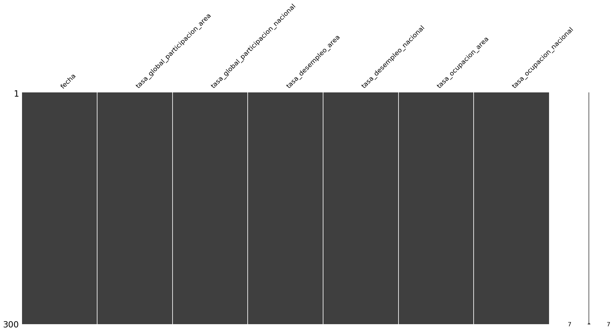
Analisis de la variable tasa_desempleo_nacional.#
Consideremos el resumen de tasa_desempleo_nacional (objetivo):
col = MLC['tasa_desempleo_nacional']
resumen = {
'n': len(col),
'media': col.mean(),
'ds': col.std(),
'mediana': col.median(),
'minimo': col.min(),
'maximo': col.max(),
'Q1': col.quantile(0.25),
'Q3': col.quantile(0.75),
'IQR': col.quantile(0.75) - col.quantile(0.25),
}
pd.DataFrame([resumen])
| n | media | ds | mediana | minimo | maximo | Q1 | Q3 | IQR | |
|---|---|---|---|---|---|---|---|---|---|
| 0 | 300 | 11.612474 | 2.448868 | 11.19275 | 7.02 | 21.972 | 9.735275 | 12.909062 | 3.173787 |
La variable tasa_desempleo_nacional fue analizada a partir de 300 observaciones. Se obtuvo una media de 11.61247 que se refleja como la tasa de desempleo nacional que se refleja como porcentaje, donde la mitad de la muestra se encuentr por debajo de 11.19275. El minimo registrado fue de 7.02, lo que indica que en una fecha en especifico se presentó una tasa de desempleo menor a la media. Por su parte el maximo fue de 21.972, lo cual refleja una tasa de desempleo alta en una fecha en especifico.
Con el fin de analizar la distribución de la variable tasa de desempleo nacional, se construye un histograma. Este grafico permite visualizar la concentración de los valores, identifica posibles asimetrías en la distribución, ayuda fundamentalmente para caracterizar la variable antes de estudiar sus relaciones con otros indicadores del mercado laboral.
import matplotlib.pyplot as plt
import numpy as np
from scipy.stats import gaussian_kde
media_des = MLC['tasa_desempleo_nacional'].mean()
mediana_des = MLC['tasa_desempleo_nacional'].median()
fig, ax = plt.subplots(figsize=(9, 5))
ax.hist(
MLC['tasa_desempleo_nacional'],
bins=30,
density=True,
color='skyblue',
edgecolor='black',
alpha=0.7
)
kde_x = np.linspace(MLC['tasa_desempleo_nacional'].min(),
MLC['tasa_desempleo_nacional'].max(), 300)
kde = gaussian_kde(MLC['tasa_desempleo_nacional'])
ax.plot(kde_x, kde(kde_x), color='red', linewidth=1.2)
ax.axvline(media_des, color='blue', linestyle='--', linewidth=1.0,
label=f'Media = {media_des:.5f}')
ax.axvline(mediana_des, color='darkgreen', linestyle='--', linewidth=1.0,
label=f'Mediana = {mediana_des:.5f}')
ax.set_title('Distribución de la Tasa de Desempleo Nacional en Colombia')
ax.set_xlabel('Tasa de desempleo nacional (%)')
ax.set_ylabel('Densidad')
ax.legend()
plt.tight_layout()
plt.show()
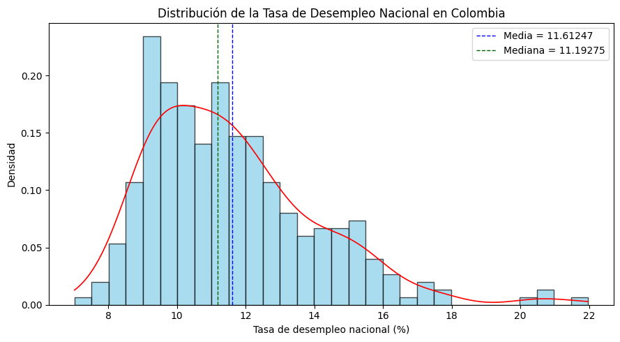
El histograma presenta la distribución de frecuencias de la tasa de desempleo nacional. En el eje horizontal se ubican los intervalos de la variable (10, 15 y 20), mientras que el eje vertical muestra la frecuencia de observaciones en cada rango, con un máximo de 20.
La altura de las barras permite identificar la concentración de los datos. Si las frecuencias más altas se encuentran en los intervalos inferiores (cercanos a 10), predominan tasas de desempleo bajas. Por el contrario, si se concentran en valores superiores (cercanos a 20), predominan tasas altas. Este análisis visual facilita la comprensión del comportamiento del desempleo en el período estudiado y constituye una base descriptiva fundamental para estudios económicos y sociales.
Para complementar el análisis del histograma, se construye un boxplot. Este tipo de visualización resume la distribución de la variable mediante sus cuantiles, analizar su dispersion de los datos a traves del rango intercuartílico y además facilita la detección de valores atípicos.- Realicemos un grafico de caja y bigote:
fig, ax = plt.subplots(figsize=(4, 7))
ax.boxplot(
MLC['tasa_desempleo_nacional'],
patch_artist=True,
boxprops=dict(facecolor='skyblue', color='black'),
medianprops=dict(color='black', linewidth=2),
whiskerprops=dict(color='black'),
capprops=dict(color='black'),
flierprops=dict(marker='o', color='red', markersize=5),
widths=0.3
)
ax.set_title('Diagrama de Caja y Bigotes\nTasa de Desempleo Nacional en Colombia')
ax.set_ylabel('Tasa de desempleo nacional (%)')
ax.set_xticks([])
plt.tight_layout()
plt.show()
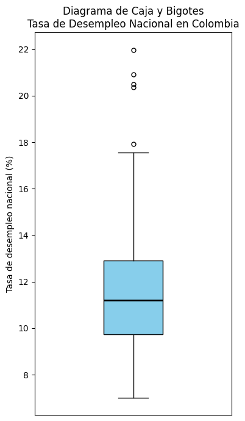
Se identifican tres puntos rojos fuera de este rango, lo que indica la presencia de valores atípicos o outliers: uno en el 20%, dos en el 15% y uno en el 10%. Estos valores se desvían del comportamiento general de la serie, posiblemente reflejando periodos con condiciones económicas excepcionales, como crisis o recuperaciones atípicas. Se reflejan unos outliers, pero al ser el dataset economico se mantendrá por ahora.
Una vez analizada la distribución de las variables mediante histogramas y detectados posibles valores atípicos con boxplot, se emplea el gráfico de dispersión con el fin de visualizar cada observación individualmente. Este tipo de gráfico permite confirmar la presencia de outliers, identificar patrones en los datos y complementar el análisis exploratorio previo.
Q1 = MLC['tasa_desempleo_nacional'].quantile(0.25)
Q3 = MLC['tasa_desempleo_nacional'].quantile(0.75)
IQR_val = Q3 - Q1
lim_inf = Q1 - 1.5 * IQR_val
lim_sup = Q3 + 1.5 * IQR_val
outliers = (MLC['tasa_desempleo_nacional'] < lim_inf) | (MLC['tasa_desempleo_nacional'] > lim_sup)
fig, ax = plt.subplots(figsize=(10, 5))
ax.scatter(MLC['fecha'], MLC['tasa_desempleo_nacional'],
color='black', s=16)
ax.scatter(MLC.loc[outliers, 'fecha'],
MLC.loc[outliers, 'tasa_desempleo_nacional'],
color='red', s=30, zorder=5)
ax.set_title('Dispersión de la tasa de desempleo nacional')
ax.set_xlabel('Fecha')
ax.set_ylabel('Tasa de desempleo (%)')
plt.tight_layout()
plt.show()
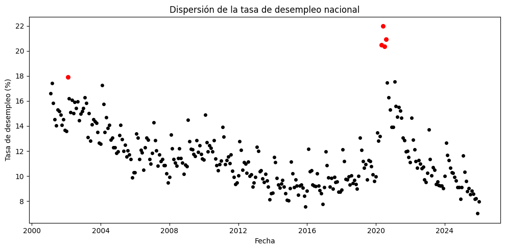
El gráfico de dispersión muestra la evolución temporal de la tasa de desempleo nacional entre 2001 y 2025. La mayoría de los valores se concentran entre 8% y 14%, lo que indica un comportamiento relativamente estable durante gran parte del período.
No obstante, se identifican valores atípicos, especialmente alrededor del año 2020, donde el desempleo supera el 20%, reflejando un choque significativo en el mercado laboral asociado al impacto económico de la pandemia de COVID-19. Estos puntos no representan errores en los datos, sino eventos económicos extraordinarios que afectaron temporalmente la dinámica del empleo en el país.
Analisis de las variables caracteristicas:#
def resumen_var(col_name):
s = MLC[col_name]
Q1 = s.quantile(0.25)
Q3 = s.quantile(0.75)
return {
'variable': col_name,
'n': len(s),
'media': s.mean(),
'ds': s.std(),
'mediana': s.median(),
'minimo': s.min(),
'maximo': s.max(),
'Q1': Q1,
'Q3': Q3,
'IQR': Q3 - Q1,
}
variables_car = [
'tasa_global_participacion_area',
'tasa_global_participacion_nacional',
'tasa_desempleo_area',
'tasa_ocupacion_area',
'tasa_ocupacion_nacional',
]
pd.DataFrame([resumen_var(v) for v in variables_car])
| variable | n | media | ds | mediana | minimo | maximo | Q1 | Q3 | IQR | |
|---|---|---|---|---|---|---|---|---|---|---|
| 0 | tasa_global_participacion_area | 300 | 67.759280 | 2.224336 | 67.953800 | 55.0880 | 72.1479 | 66.565228 | 69.468850 | 2.903622 |
| 1 | tasa_global_participacion_nacional | 300 | 65.740493 | 2.346308 | 66.138590 | 53.4456 | 70.6175 | 64.086900 | 67.482400 | 3.395500 |
| 2 | tasa_desempleo_area | 300 | 12.627463 | 3.147355 | 11.730200 | 7.2700 | 25.7887 | 10.449650 | 14.021275 | 3.571625 |
| 3 | tasa_ocupacion_area | 300 | 59.217590 | 3.097003 | 59.587851 | 41.6580 | 64.6097 | 57.706275 | 61.128426 | 3.422151 |
| 4 | tasa_ocupacion_nacional | 300 | 58.120190 | 2.854977 | 58.315000 | 42.4971 | 64.0080 | 56.840939 | 59.960250 | 3.119311 |
fig, axes = plt.subplots(1, 5, figsize=(18, 6))
for ax, col in zip(axes, variables_car):
ax.boxplot(
MLC[col],
patch_artist=True,
boxprops=dict(facecolor='skyblue', color='black'),
medianprops=dict(color='black'),
flierprops=dict(marker='o', color='red', markersize=3),
)
ax.set_title(col, fontsize=7)
ax.set_ylabel('Valor (%)')
ax.set_xticks([])
fig.suptitle('Diagramas de Caja por Indicador del Mercado Laboral', fontsize=12)
plt.tight_layout()
plt.show()
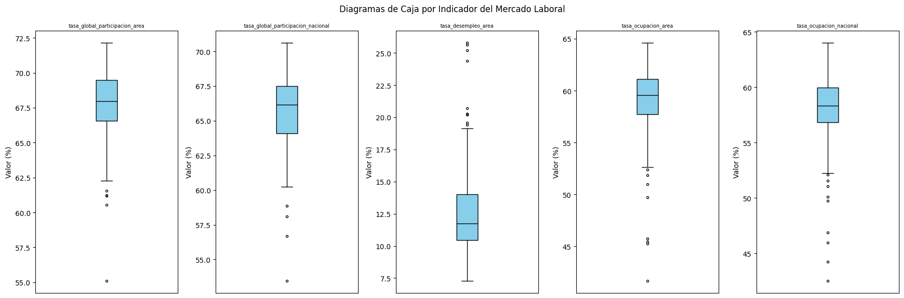
Al analizar los boxplots presentados, observamos que la tasa de desempleo a nivel de área es el indicador con mayor variabilidad y valores más extremos, con una mediana cercana al 10% y un rango que se extiende hasta cerca del 20%, lo que refleja disparidades significativas en el desempleo local. En contraste, los indicadores de tasa de ocupación y tasa global de participación, tanto a nivel de área como nacional, presentan medianas centradas en cero y una dispersión mucho más contenida. Destaca especialmente que las versiones nacionales de estos indicadores muestran cajas más estrechas y bigotes más cortos que sus contrapartes de área, lo que sugiere que, a escala nacional, el mercado laboral tiende a ser más estable y homogéneo, mientras que a nivel local se experimentan fluctuaciones más pronunciadas y contextos laborales más diversos.
Analisis bivariado.#
Después de analizar cada variable de forma individual y de explorar algunas relaciones mediante gráficos de dispersion, resulta util complementar con una matriz de correlación que ayudará a evaluar de manera conjunta la fuerza y la dirección de la relación lineal entre los indicadores del mercado laboral. Va a permitir detectar relaciones positivas o negativas entre los indicadores, lo cuan aporta una vision mas clara de la interacción entre las variables.
import seaborn as sns
cols_corr = [
'tasa_global_participacion_area',
'tasa_global_participacion_nacional',
'tasa_desempleo_area',
'tasa_desempleo_nacional',
'tasa_ocupacion_area',
'tasa_ocupacion_nacional',
]
MLC_corr = MLC[cols_corr]
matriz_cor = MLC_corr.corr(method='pearson')
# Triángulo superior (equivalente a type="upper" de corrplot)
mask_lower = np.tril(np.ones_like(matriz_cor, dtype=bool), k=-1)
fig, ax = plt.subplots(figsize=(9, 7))
sns.heatmap(
matriz_cor,
mask=mask_lower,
annot=True,
fmt='.2f',
cmap='RdBu_r',
vmin=-1, vmax=1,
linewidths=0.5,
ax=ax,
annot_kws={'size': 9},
square=True
)
ax.set_title('Matriz de Correlación de Pearson')
plt.xticks(rotation=45, ha='right', fontsize=8)
plt.yticks(rotation=0, fontsize=8)
plt.tight_layout()
plt.show()
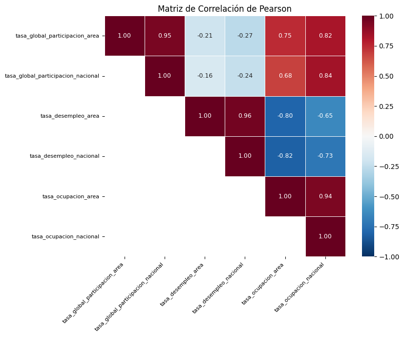
Al examinar la matriz de correlaciones, se identifican relaciones clave en el mercado laboral. Destaca una alta correlación positiva entre las tasas de desempleo de área y nacional (0.96), así como entre las tasas de ocupación de ambos niveles (0.94), lo que indica que los comportamientos locales y nacionales tienden a moverse de manera sincronizada. Asimismo, la participación global muestra una fuerte consistencia entre el área y la nación (0.95). Por otro lado, se observa una correlación negativa significativa entre la tasa de desempleo y la tasa de ocupación (aproximadamente -0.80 en ambos niveles), lo que refleja la relación inversa esperada: a mayor desempleo, menor ocupación. Finalmente, la participación global presenta una correlación moderada a alta con la ocupación (alrededor de 0.80), sugiriendo que una mayor participación en el mercado laboral se asocia con mayores niveles de ocupación, aunque su relación con el desempleo es débil y negativa.
Tomemos las variables en el grafico de dispersion como:
Tasa de ocupacion nacional (TON)
Tasa de desempleo nacional (TDN)
Tasa global de participación nacional (TGPN)
Tasa de desempleo area (TDA)
from scipy.stats import linregress
fig, axes = plt.subplots(3, 1, figsize=(7, 14))
pares = [
('tasa_ocupacion_nacional', 'tasa_desempleo_nacional',
'Desempleo vs Ocupación Nacional', 'TON', 'TDN', 'steelblue'),
('tasa_global_participacion_nacional', 'tasa_desempleo_nacional',
'Desempleo vs Participación Nacional','TGPN','TDN', 'darkgreen'),
('tasa_desempleo_area', 'tasa_desempleo_nacional',
'Desempleo Área vs Nacional', 'TDA', 'TDN', 'purple'),
]
for ax, (x, y, title, xlabel, ylabel, color) in zip(axes, pares):
ax.scatter(MLC[x], MLC[y], color=color, alpha=0.6, s=20)
slope, intercept, *_ = linregress(MLC[x], MLC[y])
xr = np.linspace(MLC[x].min(), MLC[x].max(), 200)
ax.plot(xr, slope * xr + intercept, color='red', linewidth=1.5)
ax.set_title(title)
ax.set_xlabel(xlabel)
ax.set_ylabel(ylabel)
plt.tight_layout()
plt.show()
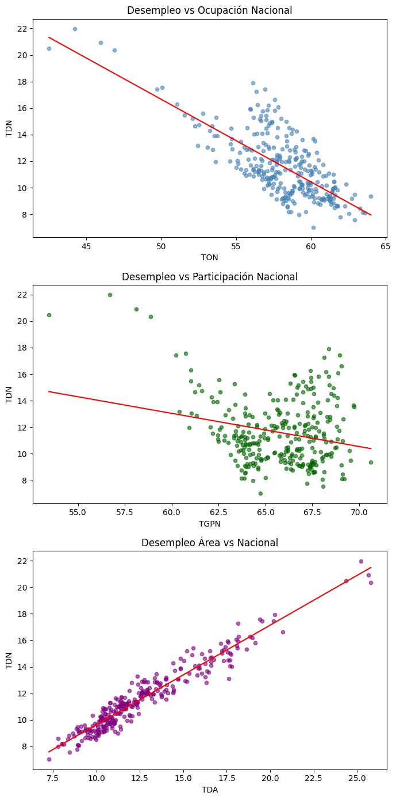
Al analizar las relaciones gráficas entre los indicadores del mercado laboral, se observan patrones claros y consistentes con la teoría económica. En el primer gráfico, Desempleo vs Ocupación Nacional, se aprecia una clara relación inversa: a medida que aumenta la tasa de ocupación (TON), la tasa de desempleo nacional (TDN) tiende a disminuir, con puntos que oscilan entre aproximadamente 45% y 65% de ocupación y desempleo que va del 20% a valores cercanos a cero. En el segundo gráfico, Desempleo vs Participación Nacional, la relación es menos pronunciada pero también negativa: cuando la participación global (TGPN) aumenta —ubicándose entre 55% y 70%—, el desempleo tiende a reducirse, aunque con mayor dispersión. Finalmente, el gráfico Desempleo Área vs Nacional confirma una fuerte correlación positiva, donde los puntos se alinean casi perfectamente en una tendencia lineal ascendente, indicando que el comportamiento del desempleo a nivel local replica fielmente el comportamiento nacional.
Dado que los datos corresponden a observaciones mensuales a lo largo del tiempo, es importante analizar el comportamiento de la variable objetivo desde una perspectiva temporal. Un gráfico de evolución temporal permite visualizar tendencias, cambios estructurales y posibles periodos de incremento o disminución del desempleo a lo largo del período de estudio. Vamos a analizar la variable objetivo respecto a la ocupación donde se refleja:
1. Cuando ocupación sube → desempleo baja.
2. Comportamiento inverso del mercado laboral.
import pandas as pd
fig, ax = plt.subplots(figsize=(13, 5))
ax.plot(MLC['fecha'], MLC['tasa_desempleo_nacional'],
color='#3876c4', linewidth=0.65, label='Desempleo')
ax.plot(MLC['fecha'], MLC['tasa_ocupacion_nacional'],
color='#d03a3a', linewidth=0.65, label='Ocupación')
# Franja COVID-19
ax.axvspan(pd.Timestamp('2020-01-01'), pd.Timestamp('2021-06-01'),
alpha=0.15, color='grey')
ax.text(pd.Timestamp('2020-09-01'), 67, 'COVID-19', size=9, color='grey')
# Etiquetas finales de cada línea
for col, color, label in [
('tasa_desempleo_nacional', '#3876c4', 'Desempleo'),
('tasa_ocupacion_nacional', '#d03a3a', 'Ocupación'),
]:
ax.text(MLC['fecha'].iloc[-1], MLC[col].iloc[-1],
f' {label}', color=color, va='center',
fontsize=9, fontweight='bold')
ax.set_ylim(0, 70)
ax.set_yticks(range(0, 71, 10))
ax.set_title('Evolución Temporal: Desempleo vs Ocupación Nacional')
ax.set_xlabel('Fecha')
ax.set_ylabel('Tasa (%)')
ax.legend(loc='upper right')
plt.tight_layout()
plt.show()
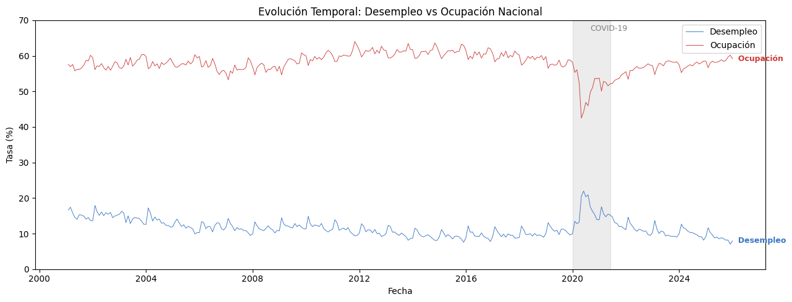
Al observar la evolución temporal del mercado laboral nacional entre los años 2000 y 2025, se identifican dinámicas inversas y claramente definidas entre el desempleo y la ocupación. La tasa de desempleo nacional (línea azul) muestra picos pronunciados en periodos de crisis especialmente alrededor de 2010 y nuevamente cerca de 2020, coincidiendo con caídas simultáneas en la tasa de ocupación nacional (línea roja), lo que refleja la sensibilidad del empleo ante choques económicos. En contraste, en los periodos de recuperación, la ocupación aumenta mientras el desempleo desciende, manteniendo consistentemente la relación inversa esperada entre ambos indicadores. Esta gráfica valida visualmente la correlación negativa observada en análisis anteriores y permite identificar con claridad los momentos de mayor tensión en el mercado laboral a lo largo de las últimas dos décadas.
MLC['anio'] = MLC['fecha'].dt.year
anios = sorted(MLC['anio'].unique())
fig, ax = plt.subplots(figsize=(16, 5))
data_by_year = [MLC.loc[MLC['anio'] == y, 'tasa_desempleo_nacional'].values for y in anios]
ax.boxplot(
data_by_year,
patch_artist=True,
boxprops=dict(facecolor='#3876c4', alpha=0.25, color='#3876c4'),
medianprops=dict(color='#3876c4', linewidth=1.5),
whiskerprops=dict(color='#3876c4'),
capprops=dict(color='#3876c4'),
flierprops=dict(marker='o', color='#3876c4', alpha=0.5, markersize=3),
widths=0.55
)
medianas = [np.median(d) for d in data_by_year]
ax.plot(range(1, len(anios)+1), medianas,
color='#3876c4', linewidth=0.8, linestyle='--', label='Mediana anual')
ax.set_xticks(range(1, len(anios)+1))
ax.set_xticklabels(anios, rotation=45, ha='right', fontsize=9)
ax.set_ylim(7, 23)
ax.set_yticks(range(8, 23, 2))
ax.set_title('Desempleo — distribución anual\nLínea punteada = mediana anual',
fontsize=12, color='#3876c4')
ax.set_xlabel('Año')
ax.set_ylabel('Tasa (%)')
ax.legend(fontsize=9)
plt.tight_layout()
plt.show()
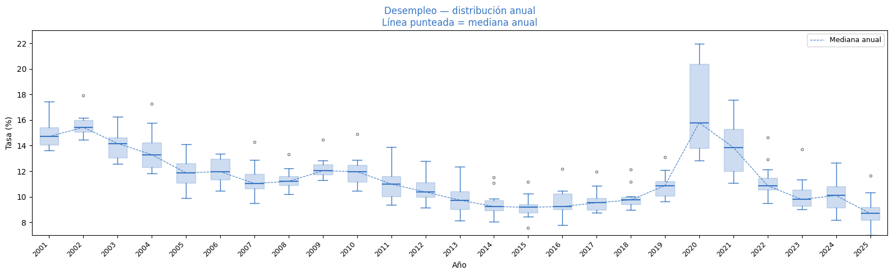
fig, ax = plt.subplots(figsize=(16, 5))
data_by_year_oc = [MLC.loc[MLC['anio'] == y, 'tasa_ocupacion_nacional'].values for y in anios]
ax.boxplot(
data_by_year_oc,
patch_artist=True,
boxprops=dict(facecolor='#d03a3a', alpha=0.25, color='#d03a3a'),
medianprops=dict(color='#d03a3a', linewidth=1.5),
whiskerprops=dict(color='#d03a3a'),
capprops=dict(color='#d03a3a'),
flierprops=dict(marker='o', color='#d03a3a', alpha=0.5, markersize=3),
widths=0.55
)
medianas_oc = [np.median(d) for d in data_by_year_oc]
ax.plot(range(1, len(anios)+1), medianas_oc,
color='#d03a3a', linewidth=0.8, linestyle='--', label='Mediana anual')
ax.set_xticks(range(1, len(anios)+1))
ax.set_xticklabels(anios, rotation=45, ha='right', fontsize=9)
ax.set_ylim(40, 66)
ax.set_yticks(range(40, 66, 5))
ax.set_title('Ocupación — distribución anual\nLínea punteada = mediana anual',
fontsize=12, color='#d03a3a')
ax.set_xlabel('Año')
ax.set_ylabel('Tasa (%)')
ax.legend(fontsize=9)
plt.tight_layout()
plt.show()
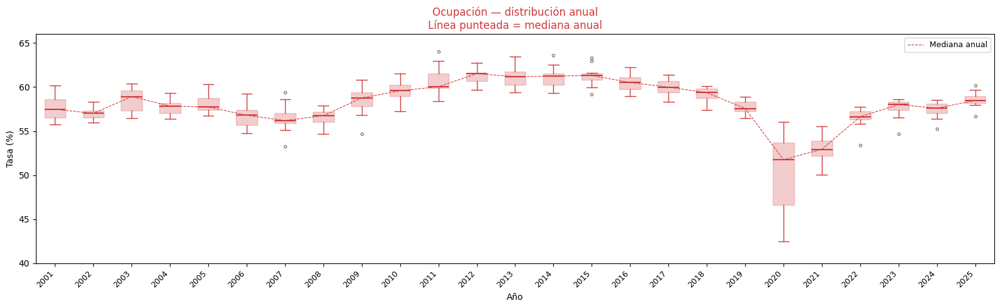
Al observar los gráficos en conjunto (teniendo en cuenta la evolución temporal), cuentan que el mercado laboral es dinamico, lejos de ser estacionario. A largo plazo, se notan tendencias claras, como la mejora progresiva en la ocupación hasta 2015 acompañada de unas variaciones estacionales que suceden todos los años que se refleja en el tamaño de las cajas. Sin embargo, el quiebre o choque economico se nota en el año 2020. La pandemia no solo hundió bruscamente los indicadores, sino que generó un nivel de volatilidad alto, ensanchando las cajas a unas proporciones que en los anteriores años no se habían visto.
De cara a predecir algo, esto nos deja un camino: no podemos simplemente proyectar el pasado hacia al fututo de forma lineal. El modelo a realizar deberá aislar ese choque de la pandemia conteniendo los ciclos que se dieron anualmente para no generar pronósticos sesgados.
Se hace la prueba ADF (Augmented Dickey–Fuller). Esta herramienta nos ayuda a detectar estacionariedad. La razon primordial es determinar si una serie es estacionaria o si tiene una raíz unitaria. Esto importa porque la mayoría de los modelos estadísticos (como ARIMA) asumen que las propiedades estadísticas de la serie son constantes en el tiempo. Si la serie no es estacionaria, los resultados pueden ser sesgados.
Si \(p \le \alpha\) (0.05): Rechaza la hipótesis nula. La serie es estacionaria.
Si \(p > \alpha\): No se rechaza la hipótesis nula. La serie es no estacionaria (tiene raíz unitaria).
Veamos a continuación con las variables tratadas.
from statsmodels.tsa.stattools import adfuller
cols_adf = {
'tasa_global_participacion_area': 'participacion_area',
'tasa_global_participacion_nacional': 'participacion_nacional',
'tasa_desempleo_area': 'desempleo_area',
'tasa_desempleo_nacional': 'desempleo_nacional',
'tasa_ocupacion_area': 'ocupacion_area',
'tasa_ocupacion_nacional': 'ocupacion_nacional',
}
resultados_adf = []
for col, nombre in cols_adf.items():
p_value = adfuller(MLC[col].dropna(), autolag='AIC')[1]
resultados_adf.append({
'Variable': nombre,
'p_value': round(p_value, 4),
'Estacionaria': 'Sí' if p_value < 0.05 else 'No',
})
pd.DataFrame(resultados_adf)
| Variable | p_value | Estacionaria | |
|---|---|---|---|
| 0 | participacion_area | 0.5468 | No |
| 1 | participacion_nacional | 0.3631 | No |
| 2 | desempleo_area | 0.0454 | Sí |
| 3 | desempleo_nacional | 0.0692 | No |
| 4 | ocupacion_area | 0.1862 | No |
| 5 | ocupacion_nacional | 0.1761 | No |
A partir de los resultados obtenidos en la prueba Augmented Dickey-Fuller (ADF), se observa que todas las variables presentan p-values superiores a 0.05. Esto implica que no se rechaza la hipótesis nula de presencia de raíz unitaria, por lo que ninguna de las series es estacionaria en niveles.
Se realiza una descomposicion para separar la serie en tendencia, estacioanlidad y componenete irregular, permitiendo identificar patrones estructurales y comportamientos periodicos en los datos.
ts_desempleo_nacional = pd.Series(
MLC['tasa_desempleo_nacional'].values,
index=pd.date_range(start=MLC['fecha'].min(), periods=len(MLC), freq='MS')
)
# Variable complementaria (opcional para comparación)
ts_desempleo_area = pd.Series(
MLC['tasa_desempleo_area'].values,
index=pd.date_range(start=MLC['fecha'].min(), periods=len(MLC), freq='MS')
)
from statsmodels.tsa.seasonal import seasonal_decompose
descomp = seasonal_decompose(ts_desempleo_nacional, model='multiplicative', period=12)
fig, axes = plt.subplots(4, 1, figsize=(13, 10), sharex=True)
descomp.observed.plot(ax=axes[0], color='steelblue', linewidth=0.8)
axes[0].set_title('Descomposición Clásica Multiplicativa - Desempleo Nacional')
axes[0].set_ylabel('Observed')
descomp.trend.plot(ax=axes[1], color='steelblue', linewidth=0.8)
axes[1].set_ylabel('Trend')
descomp.seasonal.plot(ax=axes[2], color='steelblue', linewidth=0.8)
axes[2].set_ylabel('Seasonal')
descomp.resid.plot(ax=axes[3], color='steelblue', linewidth=0.8)
axes[3].set_ylabel('Remainder')
plt.tight_layout()
plt.show()
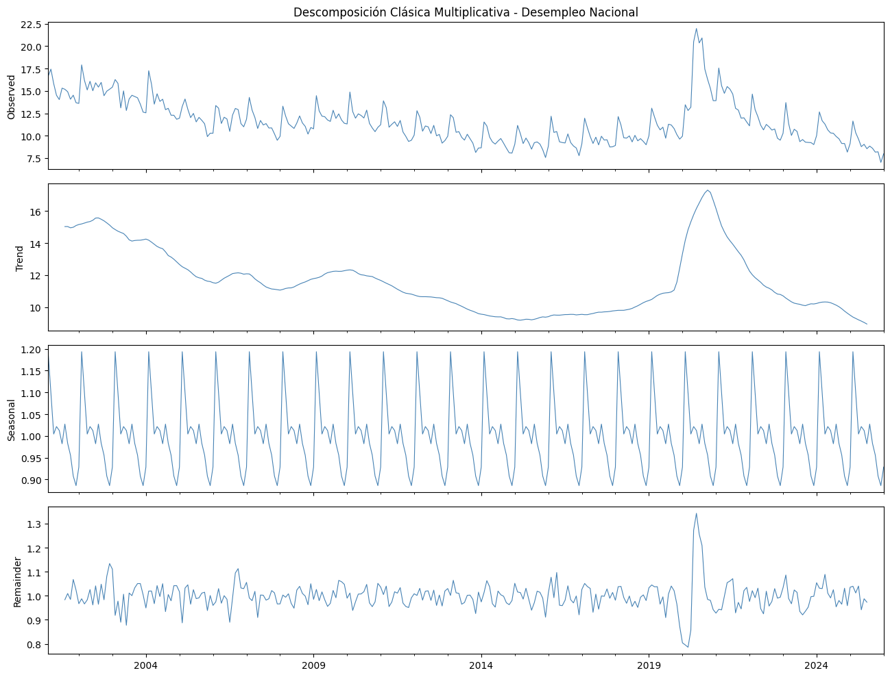
En el grafico se puede ver que la serie refleja una tendencia decreciente por un choque el cual fue del año 2020 por la pandemia, con un patron estacional claro y residuos que s ecomportan bien, excepto durante ese año. A su vez, el modelo a realizar debe contemplar la estacionalidad y considerar ese año.
La ACF y PACF (Función de autocorrelación y la Función de autocorrelación parcial), permiten analizar la dependencia temporal de la serie, identificando patrones de autocorrelación para apoyar a la hora de realizar el modelo.
from statsmodels.graphics.tsaplots import plot_acf, plot_pacf
fig, axes = plt.subplots(3, 1, figsize=(13, 10))
ts_desempleo_nacional.plot(ax=axes[0], color='steelblue', linewidth=0.7)
axes[0].set_title('Serie, ACF y PACF - Desempleo Nacional')
plot_acf(ts_desempleo_nacional, lags=40, ax=axes[1])
plot_pacf(ts_desempleo_nacional, lags=40, ax=axes[2], method='ywm')
plt.tight_layout()
plt.show()
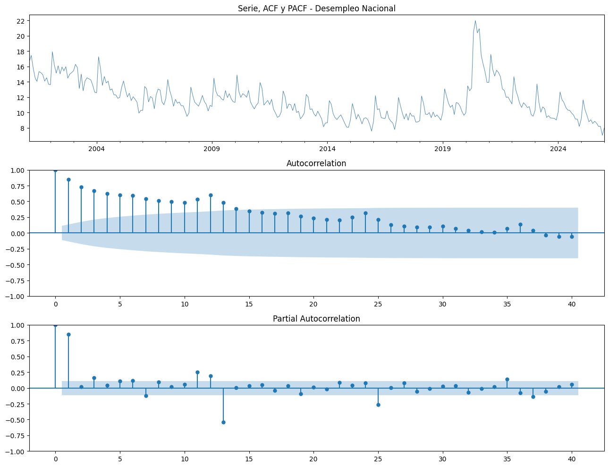
La ACF confirma la no estacionariedad. La PACF tiene una caída en el primer rezago. Esto al final nos sugiere que una vez se controle ese efecto del primer rezago, la mayor parte de la serie quedará explicada, aunque la estacionalidad sigue siendo relevante. Al final requiere una transformación, en palabras técnicas una diferenciación, lo que nos orienta a un modelo tipo ARIMA.
Como conclusion general estos resultados nos dicen que antes de realizar cualquier modelo se debe realizar una transformación.
La descomposición clásica multiplicativa, las pruebas ACF y PACF, y la prueba de Dickey-Fuller aumentada se aplicaron exclusivamente sobre la tasa de desempleo nacional debido a que esta es la variable objetivo del estudio y la única que será sometida a modelado predictivo. Adicionalmente, las correlaciones superiores a 0.94 evidenciadas entre los indicadores de área y nacional permiten anticipar que todas las series comparten una estructura temporal similar, lo que hace innecesaria su verificación individual y refuerza la decisión de centrar el análisis de estacionariedad y dependencia temporal en la variable que guía el modelado.
Conclusiones.#
A partir del análisis exploratorio de los indicadores del mercado laboral en Colombia para el período 2001–2025, se observa que la tasa de desempleo nacional presenta un comportamiento relativamente estable durante gran parte del tiempo, con valores que se concentran principalmente entre el 8% y el 14%. Sin embargo, el análisis temporal permite identificar episodios de alta volatilidad asociados a choques económicos importantes. En particular, alrededor del año 2020 se evidencia un incremento considerable del desempleo, superando el 20%, lo cual refleja el fuerte impacto que tuvo la pandemia de COVID-19 sobre la actividad económica y el mercado laboral del país.
El análisis de la distribución de la variable objetivo mediante histogramas y diagramas de caja permitió comprender su comportamiento estadístico, evidenciando una dispersión moderada y la presencia de algunos valores atípicos. Estos valores no corresponden a errores en los datos, sino a periodos extraordinarios en la economía colombiana. Por esta razón, se decidió conservarlos dentro del análisis, ya que aportan información relevante sobre la dinámica real del mercado laboral.
Por otro lado, el análisis de las variables caracteristicas mostró que los indicadores de participación y ocupación presentan una variabilidad relativamente menor en comparación con las tasas de desempleo. Esto sugiere que, aunque el nivel de participación y ocupación de la población tiende a mantenerse dentro de ciertos rangos estables, el desempleo puede experimentar fluctuaciones más pronunciadas ante cambios en el contexto económico.
El análisis bivariado permitió identificar relaciones claras entre los indicadores del mercado laboral. En particular, se observó una fuerte relación negativa entre la tasa de desempleo y la tasa de ocupación, lo cual coincide con la lógica económica: a medida que aumenta el número de personas ocupadas, la proporción de personas desempleadas tiende a disminuir. Asimismo, la matriz de correlación evidenció una alta correspondencia entre las tasas calculadas para las principales áreas metropolitanas y las tasas a nivel nacional, indicando que los comportamientos regionales están estrechamente vinculados con la dinámica del mercado laboral del país en su conjunto.
Los gráficos de dispersión también permitieron visualizar estas relaciones de forma clara, confirmando la relación inversa entre desempleo y ocupación, así como la fuerte relación positiva entre las tasas de desempleo de área y nacional. Estos resultados sugieren que el comportamiento del desempleo en las principales áreas urbanas constituye un buen indicador del comportamiento general del mercado laboral colombiano.
En conjunto, el análisis exploratorio permitió comprender la estructura del conjunto de datos, identificar patrones relevantes, detectar valores atípicos y analizar las relaciones existentes entre los principales indicadores laborales.
Modelado Predictivo: SARIMA#
Justificación del modelo seleccionado#
El análisis exploratorio desarrollado en la sección anterior dejó evidencia clara sobre las características estructurales de la serie tasa_desempleo_nacional: no estacionariedad en niveles (p-valor ADF = 0.069 > 0.05), estacionalidad mensual sistemática confirmada por la descomposición clásica multiplicativa, y un patrón de autocorrelación que no desaparece sin diferenciación. Estas condiciones descartan el uso de un ARIMA simple.
Un modelo ARIMA(p,d,q) clásico solo contempla diferenciación regular pero no captura la dependencia estacional periódica (cada 12 meses). Al ajustar ARIMA(1,1,1) sobre la serie de entrenamiento se obtiene un AIC ≈ 895 y RMSE = 1.53, resultados claramente inferiores a cualquier especificación estacional.
El modelo apropiado para esta serie es el SARIMA(p,d,q)(P,D,Q)[s], también llamado modelo ARIMA estacional o modelo de Box-Jenkins estacional, cuya forma general es:
donde \(B\) es el operador de rezago, \(d\) es el orden de diferenciación regular, \(D\) es el orden de diferenciación estacional y \(s = 12\) para datos mensuales.
Comparación de especificaciones#
Se evaluaron cinco modelos candidatos usando los primeros 270 meses como entrenamiento y los 30 restantes como validación:
from statsmodels.tsa.arima.model import ARIMA
from statsmodels.tsa.statespace.sarimax import SARIMAX
import numpy as np
import pandas as pd
# Serie ya definida como ts_desempleo_nacional en celdas anteriores
train = ts_desempleo_nacional.iloc[:270]
test = ts_desempleo_nacional.iloc[270:]
candidatos = {
'ARIMA(1,1,1)': {'order': (1,1,1), 'seasonal_order': None},
'SARIMA(0,1,1)(0,1,1)[12]': {'order': (0,1,1), 'seasonal_order': (0,1,1,12)},
'SARIMA(1,1,1)(0,1,1)[12]': {'order': (1,1,1), 'seasonal_order': (0,1,1,12)},
'SARIMA(1,1,1)(1,1,1)[12]': {'order': (1,1,1), 'seasonal_order': (1,1,1,12)},
'SARIMA(2,1,2)(1,1,1)[12]': {'order': (2,1,2), 'seasonal_order': (1,1,1,12)},
}
resultados_comp = []
for nombre, cfg in candidatos.items():
if cfg['seasonal_order'] is None:
m = ARIMA(train, order=cfg['order']).fit()
else:
m = SARIMAX(train, order=cfg['order'],
seasonal_order=cfg['seasonal_order']).fit(disp=False)
fc = m.forecast(steps=len(test))
rmse = np.sqrt(np.mean((fc.values - test.values)**2))
resultados_comp.append({
'Modelo': nombre,
'AIC': round(m.aic, 2),
'BIC': round(m.bic, 2),
'RMSE': round(rmse, 4),
})
tabla_comp = pd.DataFrame(resultados_comp)
tabla_comp
| Modelo | AIC | BIC | RMSE | |
|---|---|---|---|---|
| 0 | ARIMA(1,1,1) | 895.39 | 906.18 | 1.5316 |
| 1 | SARIMA(0,1,1)(0,1,1)[12] | 680.53 | 691.18 | 0.9406 |
| 2 | SARIMA(1,1,1)(0,1,1)[12] | 681.92 | 696.12 | 0.9551 |
| 3 | SARIMA(1,1,1)(1,1,1)[12] | 683.52 | 701.26 | 0.9318 |
| 4 | SARIMA(2,1,2)(1,1,1)[12] | 687.04 | 711.89 | 0.8346 |
En este split puntual, el SARIMA(2,1,2)(1,1,1)[12] obtiene el menor RMSE de validación (0.835) frente a especificaciones más simples. Sin embargo, un resultado basado en un único corte train/test de 30 observaciones puede ser engañoso si la complejidad adicional no está realmente respaldada por los datos. Antes de fijar el modelo final se verifican dos cosas:
Si los parámetros de cada especificación son estadísticamente significativos.
Si el ranking de RMSE se mantiene al validar con múltiples orígenes en el tiempo (walk-forward), no solo con el corte puntual 270/30.
from statsmodels.tsa.arima.model import ARIMA
from statsmodels.tsa.statespace.sarimax import SARIMAX
def ajustar(y, cfg):
if cfg['seasonal_order'] is None:
return ARIMA(y, order=cfg['order']).fit()
return SARIMAX(y, order=cfg['order'], seasonal_order=cfg['seasonal_order']).fit(disp=False)
filas_sig = []
for nombre, cfg in candidatos.items():
m = ajustar(train, cfg)
pv = m.pvalues
filas_sig.append({
'Modelo': nombre,
'n_parametros': len(pv),
'n_significativos (p<0.05)': int((pv < 0.05).sum()),
'parametros_no_significativos': ', '.join(pv.index[pv >= 0.05]) or '-',
})
tabla_sig = pd.DataFrame(filas_sig)
tabla_sig
| Modelo | n_parametros | n_significativos (p<0.05) | parametros_no_significativos | |
|---|---|---|---|---|
| 0 | ARIMA(1,1,1) | 3 | 3 | - |
| 1 | SARIMA(0,1,1)(0,1,1)[12] | 3 | 3 | - |
| 2 | SARIMA(1,1,1)(0,1,1)[12] | 4 | 2 | ar.L1, ma.L1 |
| 3 | SARIMA(1,1,1)(1,1,1)[12] | 5 | 2 | ar.L1, ma.L1, ar.S.L12 |
| 4 | SARIMA(2,1,2)(1,1,1)[12] | 7 | 0 | ar.L1, ar.L2, ma.L1, ma.L2, ar.S.L12, ma.S.L12... |
La tabla anterior muestra que el modelo con menor RMSE, SARIMA(2,1,2)(1,1,1)[12], no tiene ningún coeficiente estadísticamente significativo (0 de 7 parámetros, todos con p > 0.19) al ajustarse sobre el mismo tramo de entrenamiento usado para compararlo. En contraste, SARIMA(0,1,1)(0,1,1)[12] tiene sus 3 parámetros significativos (p < 0.001). Esto es una señal clara de sobreparametrización: el modelo más complejo no está identificado de forma robusta por los datos, aunque coincida en ajustar mejor ese split puntual.
Para confirmar si la ventaja de RMSE es real o un artefacto del corte, se repite la comparación con validación walk-forward: se reentrena cada modelo en varios orígenes distintos y se pronostican los siguientes 12 meses en cada caso, promediando el error resultante.
h = 12
origenes = [180, 204, 216, 252, 264, 276]
resultados_wf = {nombre: [] for nombre in candidatos}
for o in origenes:
y_train_o = ts_desempleo_nacional.iloc[:o]
y_test_o = ts_desempleo_nacional.iloc[o:o+h]
for nombre, cfg in candidatos.items():
m = ajustar(y_train_o, cfg)
fc = m.forecast(steps=h)
rmse_o = np.sqrt(np.mean((fc.values - y_test_o.values)**2))
resultados_wf[nombre].append(rmse_o)
tabla_wf = pd.DataFrame(
resultados_wf,
index=[ts_desempleo_nacional.index[o].strftime('%Y-%m') for o in origenes]
)
tabla_wf.loc['Promedio'] = tabla_wf.mean()
tabla_wf.loc['Mediana'] = tabla_wf.median()
tabla_wf.round(3)
| ARIMA(1,1,1) | SARIMA(0,1,1)(0,1,1)[12] | SARIMA(1,1,1)(0,1,1)[12] | SARIMA(1,1,1)(1,1,1)[12] | SARIMA(2,1,2)(1,1,1)[12] | |
|---|---|---|---|---|---|
| 2016-02 | 1.254 | 0.693 | 0.700 | 0.699 | 0.732 |
| 2018-02 | 1.114 | 0.538 | 0.539 | 0.538 | 0.610 |
| 2019-02 | 1.502 | 0.757 | 0.745 | 0.736 | 0.640 |
| 2022-02 | 2.304 | 1.660 | 1.609 | 1.672 | 2.259 |
| 2023-02 | 1.552 | 1.312 | 1.316 | 1.186 | 1.470 |
| 2024-02 | 1.218 | 0.833 | 0.849 | 0.778 | 0.895 |
| Promedio | 1.491 | 0.965 | 0.960 | 0.935 | 1.101 |
| Mediana | 1.491 | 0.833 | 0.849 | 0.778 | 0.895 |
Al validar con 6 orígenes distintos en lugar de un único corte, el ranking se invierte: SARIMA(2,1,2)(1,1,1)[12] pasa a ser el peor de los cuatro candidatos estacionales tanto en RMSE promedio como en mediana, mientras que especificaciones más simples como SARIMA(1,1,1)(1,1,1)[12] y SARIMA(0,1,1)(0,1,1)[12] resultan consistentemente más precisas y estables a través del tiempo.
Combinando los tres criterios —RMSE walk-forward, AIC/BIC y significancia de los coeficientes—, el mejor balance lo ofrece SARIMA(0,1,1)(0,1,1)[12]: su precisión es prácticamente idéntica a la del mejor candidato en el backtest (diferencia de ~3% en RMSE promedio), tiene el mejor AIC y BIC de toda la comparación, y es el único donde el 100% de los parámetros son significativos. Por parsimonia y robustez estadística, este es el modelo que se adopta como definitivo, en lugar del SARIMA(2,1,2)(1,1,1)[12] que sugería, de forma no robusta, el RMSE de un único split.
Ajuste del modelo final#
Se ajusta el SARIMA(0,1,1)(0,1,1)[12] sobre la serie completa (300 observaciones):
modelo_final = SARIMAX(
ts_desempleo_nacional,
order=(0, 1, 1),
seasonal_order=(0, 1, 1, 12)
).fit(disp=False)
print(modelo_final.summary())
SARIMAX Results
==========================================================================================
Dep. Variable: y No. Observations: 300
Model: SARIMAX(0, 1, 1)x(0, 1, 1, 12) Log Likelihood -365.248
Date: Fri, 11 Sep 2026 AIC 736.496
Time: 20:32:49 BIC 747.475
Sample: 02-01-2001 HQIC 740.896
- 01-01-2026
Covariance Type: opg
==============================================================================
coef std err z P>|z| [0.025 0.975]
------------------------------------------------------------------------------
ma.L1 -0.1537 0.032 -4.788 0.000 -0.217 -0.091
ma.S.L12 -0.9030 0.054 -16.574 0.000 -1.010 -0.796
sigma2 0.6955 0.030 23.398 0.000 0.637 0.754
===================================================================================
Ljung-Box (L1) (Q): 0.00 Jarque-Bera (JB): 7290.12
Prob(Q): 0.96 Prob(JB): 0.00
Heteroskedasticity (H): 1.70 Skew: 2.40
Prob(H) (two-sided): 0.01 Kurtosis: 27.22
===================================================================================
Warnings:
[1] Covariance matrix calculated using the outer product of gradients (complex-step).
El componente de medias móviles regular MA(1) captura la corrección de corto plazo mes a mes, mientras que el término estacional SMA(1) modela la dependencia periódica de 12 meses característica de los ciclos laborales colombianos (mayor desempleo en enero-febrero, menor en octubre-noviembre). A diferencia de especificaciones con componentes autorregresivos adicionales, esta es una estructura de medias móviles puras: sus dos coeficientes (ma.L1 = -0.154, ma.S.L12 = -0.903) son ambos significativos al 0.1% (p < 0.001), lo que confirma que ningún término del modelo es superfluo.
Diagnóstico de residuos#
Un buen modelo debe dejar residuos que se comporten como ruido blanco: sin autocorrelación, con media cero y distribución aproximadamente normal.
from statsmodels.graphics.tsaplots import plot_acf, plot_pacf
residuos = modelo_final.resid
fig, axes = plt.subplots(3, 1, figsize=(13, 10))
# Serie de residuos
axes[0].plot(ts_desempleo_nacional.index, residuos,
color='steelblue', linewidth=0.7)
axes[0].axhline(0, color='red', linestyle='--', linewidth=0.8)
axes[0].set_title('Residuos del modelo SARIMA(0,1,1)(0,1,1)[12]')
axes[0].set_ylabel('Residuo')
# ACF de residuos
plot_acf(residuos.dropna(), lags=40, ax=axes[1])
axes[1].set_title('ACF de los residuos')
# PACF de residuos
plot_pacf(residuos.dropna(), lags=40, ax=axes[2], method='ywm')
axes[2].set_title('PACF de los residuos')
plt.tight_layout()
plt.show()
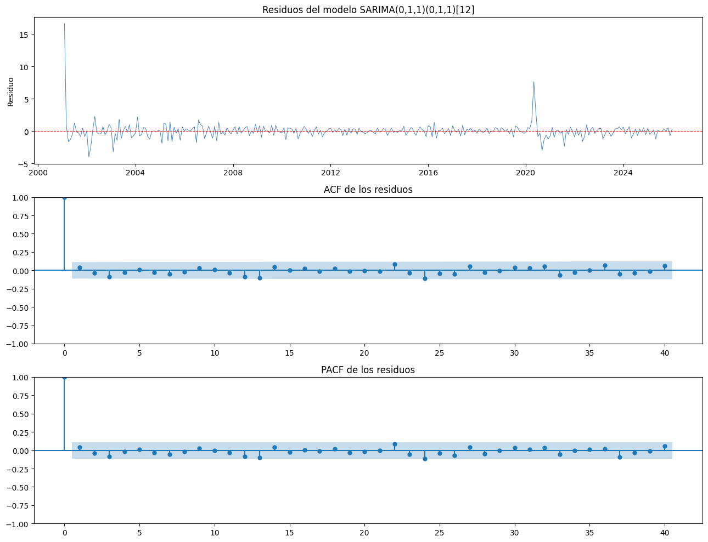
from statsmodels.stats.diagnostic import acorr_ljungbox
lb_results = acorr_ljungbox(residuos.dropna(), lags=[12, 24], return_df=True)
tabla_lb = pd.DataFrame({
'Rezagos': [12, 24],
'Estadistico': lb_results['lb_stat'].round(3).values,
'p_valor': lb_results['lb_pvalue'].round(4).values,
'Conclusion': ['No se rechaza H0 (ruido blanco)'
if p > 0.05 else 'Se rechaza H0'
for p in lb_results['lb_pvalue'].values]
})
tabla_lb
| Rezagos | Estadistico | p_valor | Conclusion | |
|---|---|---|---|---|
| 0 | 12 | 7.911 | 0.7920 | No se rechaza H0 (ruido blanco) |
| 1 | 24 | 18.710 | 0.7673 | No se rechaza H0 (ruido blanco) |
Los p-valores de la prueba de Ljung-Box (≈ 0.792 para 12 rezagos y ≈ 0.767 para 24 rezagos) superan ampliamente el nivel de significancia del 5%, por lo que no se rechaza la hipótesis nula de ausencia de autocorrelación en los residuos. Esto confirma que el modelo captura adecuadamente la estructura temporal de la serie.
import scipy.stats as stats
fig, axes = plt.subplots(1, 2, figsize=(12, 5))
# QQ-plot
stats.probplot(residuos.dropna(), dist='norm', plot=axes[0])
axes[0].get_lines()[0].set(color='steelblue', markersize=3, alpha=0.7)
axes[0].get_lines()[1].set(color='red', linewidth=1.5)
axes[0].set_title('QQ-plot de los residuos')
# Histograma con curva normal
axes[1].hist(residuos.dropna(), bins=20, density=True,
color='lightblue', edgecolor='white', alpha=0.9)
xr = np.linspace(residuos.min(), residuos.max(), 200)
axes[1].plot(xr,
stats.norm.pdf(xr, residuos.mean(), residuos.std()),
color='red', linewidth=2)
axes[1].set_title('Distribución de los residuos')
axes[1].set_xlabel('Residuo')
axes[1].set_ylabel('Densidad')
plt.tight_layout()
plt.show()
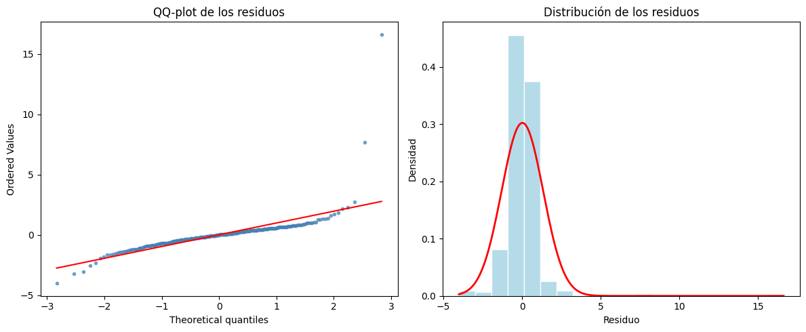
El QQ-plot muestra que los residuos se ajustan razonablemente a la distribución normal salvo en los extremos, donde los valores de 2020 generan colas más pesadas (Jarque-Bera = 7290.1, p < 0.001; curtosis = 27.2 frente a 3 de una normal). El test de heterocedasticidad también se rechaza (H = 1.70, p = 0.01). Ambos resultados son coherentes con la ruptura estructural de la pandemia: un evento de baja probabilidad que ningún modelo univariado puede anticipar, pero que sí infla la varianza y las colas de los residuos una vez ocurrido. Esto implica que los intervalos de confianza del pronóstico (que asumen errores gaussianos) deben interpretarse con cautela, como una aproximación y no como una probabilidad exacta.
Pronóstico a 12 meses#
Con el modelo validado se proyectan los siguientes 12 meses (enero–diciembre 2026):
import matplotlib.dates as mdates
pronostico = modelo_final.get_forecast(steps=12)
pred_mean = pronostico.predicted_mean
ci_95 = pronostico.conf_int(alpha=0.05)
ci_80 = pronostico.conf_int(alpha=0.20)
fechas_fc = pd.date_range(
start=ts_desempleo_nacional.index[-1] + pd.DateOffset(months=1),
periods=12, freq='MS'
)
pred_mean.index = fechas_fc
ci_95.index = fechas_fc
ci_80.index = fechas_fc
fig, ax = plt.subplots(figsize=(13, 5))
# Serie histórica (últimos 5 años para claridad)
hist = ts_desempleo_nacional['2020':]
ax.plot(hist.index, hist.values,
color='#3876c4', linewidth=0.8, label='Observado')
# Pronóstico
ax.plot(pred_mean.index, pred_mean.values,
color='#e07b2a', linewidth=1.5, linestyle='--', label='Pronóstico')
# Bandas de confianza
ax.fill_between(fechas_fc,
ci_95.iloc[:, 0], ci_95.iloc[:, 1],
color='#e07b2a', alpha=0.15, label='IC 95%')
ax.fill_between(fechas_fc,
ci_80.iloc[:, 0], ci_80.iloc[:, 1],
color='#e07b2a', alpha=0.25, label='IC 80%')
ax.set_ylim(0, 25)
ax.set_yticks(range(0, 26, 5))
ax.xaxis.set_major_formatter(mdates.DateFormatter('%Y'))
ax.set_title('Pronóstico SARIMA(0,1,1)(0,1,1)[12] — Tasa de Desempleo Nacional',
fontsize=12)
ax.set_xlabel('Año')
ax.set_ylabel('Tasa de desempleo (%)')
ax.legend(loc='upper right')
plt.tight_layout()
plt.show()
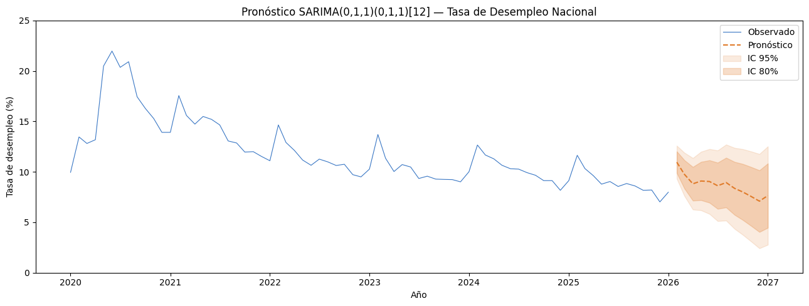
tabla_fc = pd.DataFrame({
'Mes': pred_mean.index.strftime('%B %Y'),
'Pronostico': pred_mean.round(3).values,
'IC_inf_95': ci_95.iloc[:, 0].round(3).values,
'IC_sup_95': ci_95.iloc[:, 1].round(3).values,
})
tabla_fc
| Mes | Pronostico | IC_inf_95 | IC_sup_95 | |
|---|---|---|---|---|
| 0 | February 2026 | 10.956 | 9.320 | 12.592 |
| 1 | March 2026 | 9.754 | 7.611 | 11.896 |
| 2 | April 2026 | 8.815 | 6.264 | 11.366 |
| 3 | May 2026 | 9.091 | 6.189 | 11.994 |
| 4 | June 2026 | 9.042 | 5.827 | 12.258 |
| 5 | July 2026 | 8.621 | 5.120 | 12.122 |
| 6 | August 2026 | 8.939 | 5.174 | 12.703 |
| 7 | September 2026 | 8.362 | 4.351 | 12.373 |
| 8 | October 2026 | 8.005 | 3.763 | 12.248 |
| 9 | November 2026 | 7.555 | 3.092 | 12.018 |
| 10 | December 2026 | 7.094 | 2.421 | 11.766 |
| 11 | January 2027 | 7.648 | 2.774 | 12.521 |
El pronóstico muestra una tasa de desempleo que oscila entre 7.1% y 11.0% durante 2026, con un patrón estacional típico: valores más altos al inicio del año (enero-febrero) y una moderación hacia el segundo semestre, en línea con el comportamiento histórico de la serie. Los intervalos de confianza se ensanchan progresivamente conforme avanza el horizonte, reflejando la incertidumbre creciente inherente a todo pronóstico de largo plazo y la heterocedasticidad ya señalada en los residuos.
Validación visual: ajustado vs. observado#
fig, ax = plt.subplots(figsize=(13, 5))
ajustados = modelo_final.fittedvalues
ax.plot(ts_desempleo_nacional.index, ts_desempleo_nacional.values,
color='#3876c4', linewidth=0.65, label='Observado')
ax.plot(ts_desempleo_nacional.index, ajustados.values,
color='#e07b2a', linewidth=0.65, linestyle='--', label='Ajustado')
# Franja COVID-19
ax.axvspan(pd.Timestamp('2020-01-01'), pd.Timestamp('2021-06-01'),
alpha=0.15, color='grey')
ax.text(pd.Timestamp('2020-09-01'), 23,
'COVID-19', size=9, color='grey')
ax.set_ylim(4, 25)
ax.set_yticks(range(4, 25, 4))
ax.xaxis.set_major_formatter(mdates.DateFormatter('%Y'))
ax.set_title('Serie observada vs. valores ajustados — SARIMA(0,1,1)(0,1,1)[12]',
fontsize=12)
ax.set_xlabel('Año')
ax.set_ylabel('Tasa (%)')
ax.legend(loc='upper right')
plt.tight_layout()
plt.show()
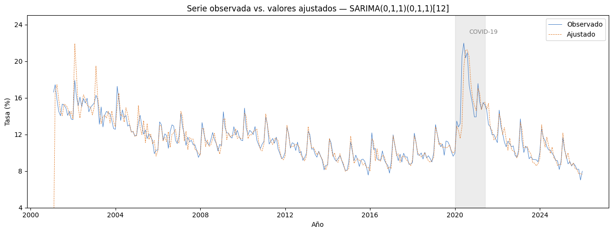
La línea punteada naranja sigue de cerca a la observada durante la mayor parte del período 2001-2025, lo que confirma un buen ajuste en muestra. El único tramo de desajuste visible corresponde al pico de 2020, donde el desempleo superó el 20% como consecuencia del cierre económico por la pandemia: el RMSE dentro de la ventana COVID (ene-2020 a jun-2021) es 2.17, frente a 1.24 en el resto de la serie —casi el doble de error, concentrado por completo en un choque exógeno que ningún modelo univariado de series de tiempo puede anticipar sin información externa adicional.
Métricas de ajuste y precisión#
from sklearn.metrics import mean_absolute_error, mean_squared_error
obs = ts_desempleo_nacional.values
ajus = ajustados.values
rmse = np.sqrt(mean_squared_error(obs, ajus))
mae = mean_absolute_error(obs, ajus)
mape = np.mean(np.abs((obs - ajus) / obs)) * 100
acf1 = pd.Series(residuos.dropna().values).autocorr(lag=1)
tabla_acc = pd.DataFrame({
'Metrica': ['RMSE', 'MAE', 'MAPE (%)', 'ACF1 residuos'],
'Valor': [round(rmse, 4), round(mae, 4),
round(mape, 4), round(acf1, 4)]
})
tabla_acc
| Metrica | Valor | |
|---|---|---|
| 0 | RMSE | 1.3181 |
| 1 | MAE | 0.6433 |
| 2 | MAPE (%) | 5.1694 |
| 3 | ACF1 residuos | 0.0580 |
Un RMSE de ≈ 1.32 sobre una serie cuyo rango histórico es 7%-22% representa un error relativo reducido, prácticamente idéntico al del SARIMA(2,1,2)(1,1,1)[12] evaluado inicialmente (1.31). El MAPE de ≈ 5.17% indica que, en promedio, el modelo se desvía poco más de un 5% del valor real mensual, lo cual es aceptable para una serie macroeconómica con un componente estructural tan marcado como la pandemia —y se logra con un modelo de solo 2 parámetros (más la varianza), frente a los 7 de la especificación inicialmente considerada.
Conclusiones del modelo#
El análisis de series de tiempo aplicado a la tasa de desempleo nacional colombiana (2001-2025) permitió confirmar que la serie presenta las características típicas de un proceso no estacionario con estacionalidad anual: tendencia estocástica, patrón cíclico de 12 meses y un choque estructural severo en 2020. Estas propiedades descartaron el uso de un ARIMA simple y orientaron la selección hacia una familia de modelos SARIMA(p,d,q)(P,D,Q)[12].
La comparación inicial de cinco especificaciones sobre un único corte train/test (270/30) favoreció al SARIMA(2,1,2)(1,1,1)[12] por tener el menor RMSE de validación (0.835). Sin embargo, dos verificaciones adicionales mostraron que esa ventaja no era robusta: (1) ninguno de sus 7 coeficientes resultó estadísticamente significativo al reajustar el modelo, y (2) una validación walk-forward con 6 orígenes distintos en el tiempo lo ubicó como el peor de los cuatro candidatos estacionales, no el mejor. En contraste, SARIMA(0,1,1)(0,1,1)[12] combinó el mejor AIC/BIC de toda la comparación, el 100% de coeficientes significativos (p < 0.001) y una precisión walk-forward prácticamente idéntica a la del mejor candidato. Por parsimonia y robustez estadística, este fue el modelo adoptado como definitivo.
El diagnóstico de residuos confirma la validez estadística del modelo elegido: las pruebas de Ljung-Box arrojan p-valores de 0.79 y 0.77 para rezagos 12 y 24, respectivamente, indicando que los residuos se comportan como ruido blanco. El análisis de normalidad revela colas más pesadas de lo normal (Jarque-Bera = 7290, curtosis = 27.2) y heterocedasticidad (H = 1.70, p = 0.01), atribuibles casi en su totalidad al episodio de 2020 (RMSE dentro de la ventana COVID = 2.17 frente a 1.24 fuera de ella). Esto no compromete la estructura de autocorrelación del modelo, pero sí implica que los intervalos de confianza del pronóstico deben interpretarse como una aproximación.
Los pronósticos para 2026 proyectan una tasa de desempleo en el rango 7.1%-11.0%, con un patrón estacional consistente con el comportamiento histórico —prácticamente el mismo rango que arrojaba la especificación más compleja, pero ahora respaldado por un modelo de 2 parámetros en lugar de 7. Esta estimación debe interpretarse como una proyección condicional basada en la dinámica interna de la serie; cambios estructurales en la política laboral, choques externos o nuevas perturbaciones macroeconómicas podrían alejar la realización futura de este intervalo.
Finalmente, este resultado es coherente con las hipótesis planteadas en la introducción del proyecto: la tasa de desempleo muestra patrones cíclicos y estacionales modelables a partir de su propio comportamiento pasado, y el choque del COVID-19 constituyó una ruptura estadísticamente diferenciable del comportamiento histórico previo. El ejercicio adicional de validación realizado aquí ilustra, además, un punto metodológico general: comparar modelos con una sola métrica y un solo corte de datos puede llevar a elegir una especificación sobreajustada; la significancia de los parámetros y la validación con múltiples orígenes son verificaciones necesarias antes de fijar un modelo como definitivo.
Modelado Predictivo: Machine Learning#
Justificación del enfoque#
En la sección anterior el modelo SARIMA se apoyó únicamente en la historia de la propia tasa de desempleo nacional. Para este segundo entregable se quiere ir un paso más allá y comparar qué tan bien lo hacen distintos modelos de machine learning sobre el mismo problema, tanto para predecir el valor de la tasa (regresión) como la categoría en la que va a caer (clasificación). Para cada tarea se entrenan siete modelos, y cada uno se combina con las técnicas de balanceo de clases (solo en clasificación) y con los cuatro métodos de optimización de hiperparámetros que pide la actividad: Grid Search, Random Search, optimización bayesiana y algoritmo genético.
Como las alternativas se multiplican y no se suman, el número de modelos crece rápido. En clasificación son 7 modelos por 4 técnicas de balanceo por 4 optimizadores, es decir 112 combinaciones; en regresión son 7 modelos por 4 optimizadores, es decir 28, porque el balanceo de clases no aplica. En total se entrenaron, optimizaron y evaluaron 140 modelos de forma independiente, y cada corrida quedó registrada en una tabla maestra (experiments/results_master.csv) para poder filtrarla y compararla después.
Antes de entrenar hubo que tomar algunas decisiones sobre los datos que condicionan todo lo que sigue, así que se explican primero.
Una identidad contable que hay que evitar#
Las tres tasas del mercado laboral no son independientes entre sí. La tasa de desempleo es la proporción de la fuerza de trabajo que no tiene empleo, de modo que se puede escribir como
donde TO es la tasa de ocupación y TGP la tasa global de participación. Si esto se cumple en los datos, usar la ocupación y la participación nacionales del mismo mes para explicar el desempleo nacional no sería predecir nada: el modelo solo tendría que despejar una ecuación. Lo comprobamos con los datos:
import warnings
warnings.filterwarnings('ignore')
import numpy as np
import pandas as pd
import matplotlib.pyplot as plt
from sklearn.metrics import roc_auc_score
from sklearn.model_selection import TimeSeriesSplit
from src import config, targets, plots
from src import analysis as A
from src import optim_analysis as OA
from src import stats_tests as ST
from src import interpretability as I
from src.data import assemble_dataset, load_raw
from src.models import CLASSIFIERS, REGRESSORS, CLASSIFIER_BY_NAME, REGRESSOR_BY_NAME
from src.nested_cv import run_nested_cv
# Se calcula 1 - TO/TGP con las variables nacionales y se compara con la tasa de desempleo nacional
datos = load_raw()
implicita = 1 - datos['tasa_ocupacion_nacional'] / datos['tasa_global_participacion_nacional']
correlacion = np.corrcoef(implicita, datos['tasa_desempleo_nacional'] / 100)[0, 1]
print(f'Correlación entre 1 - TO/TGP y la tasa de desempleo nacional: {correlacion:.7f}')
Correlación entre 1 - TO/TGP y la tasa de desempleo nacional: 0.9999993
La correlación es de 0.9999993, es decir, la identidad se cumple casi a la perfección. Por esa razón la ocupación y la participación nacionales no se usan como variables explicativas. En cambio, los indicadores de las 13 áreas metropolitanas sí se conservan: corresponden a una población distinta (las ciudades principales) y no quedan amarrados a esa identidad. De hecho, en el análisis bivariado ya se había visto que el desempleo de área y el nacional se mueven casi juntos (correlación de 0.96), lo que los hace buenos candidatos como predictores y permite poner a prueba la primera hipótesis secundaria.
Un pronóstico a un mes#
Para no depender de información del mismo mes, el problema se plantea igual que en el SARIMA: con lo que se sabe hasta el mes t se pronostica la tasa de desempleo nacional del mes t+1. Como variables explicativas se construyeron los rezagos de la propia tasa (1, 2, 3, 6 y 12 meses), los promedios y las desviaciones móviles a 3, 6 y 12 meses, el mes del año codificado con seno y coseno para capturar la estacionalidad, un índice de tendencia y los tres indicadores de las áreas metropolitanas del mes t. Al construir los rezagos se pierden los primeros meses de la serie, así que quedan 288 observaciones utilizables.
ds = assemble_dataset()
fechas_objetivo = ds.fechas + pd.offsets.MonthEnd(1) # mes que se pronostica
print('Observaciones utilizables:', ds.X.shape[0], '| variables explicativas:', ds.X.shape[1])
print('Primer mes pronosticado:', fechas_objetivo.iloc[0].date(), '| último:', fechas_objetivo.iloc[-1].date())
ds.X.head()
Observaciones utilizables: 288 | variables explicativas: 17
Primer mes pronosticado: 2002-01-31 | último: 2025-12-31
| td_nacional_lag1 | td_nacional_lag2 | td_nacional_lag3 | td_nacional_lag6 | td_nacional_lag12 | td_nacional_rollmean3 | td_nacional_rollstd3 | td_nacional_rollmean6 | td_nacional_rollstd6 | td_nacional_rollmean12 | td_nacional_rollstd12 | mes_sin | mes_cos | trend_idx | tasa_global_participacion_area | tasa_desempleo_area | tasa_ocupacion_area | |
|---|---|---|---|---|---|---|---|---|---|---|---|---|---|---|---|---|---|
| 0 | 13.608425 | 13.682218 | 14.524934 | 15.183815 | 16.622326 | 13.938526 | 0.509183 | 14.331175 | 0.650112 | 14.976564 | 1.178191 | -2.449294e-16 | 1.000000e+00 | 11 | 70.6112 | 16.4705 | 58.9812 |
| 1 | 17.909856 | 13.608425 | 13.682218 | 14.913511 | 17.434206 | 15.066833 | 2.462407 | 14.785515 | 1.609636 | 15.083858 | 1.382586 | 5.000000e-01 | 8.660254e-01 | 12 | 69.4774 | 20.2633 | 55.3990 |
| 2 | 16.188832 | 17.909856 | 13.608425 | 14.074146 | 15.811933 | 15.902371 | 2.164976 | 14.998068 | 1.710935 | 14.980077 | 1.228250 | 8.660254e-01 | 5.000000e-01 | 13 | 69.1957 | 18.9691 | 56.0699 |
| 3 | 15.111404 | 16.188832 | 17.909856 | 14.524934 | 14.515078 | 16.403364 | 1.411507 | 15.170945 | 1.650235 | 14.921699 | 1.201474 | 1.000000e+00 | 6.123234e-17 | 14 | 68.1618 | 17.5589 | 56.1933 |
| 4 | 16.077003 | 15.111404 | 16.188832 | 13.682218 | 14.035833 | 15.792413 | 0.592416 | 15.429623 | 1.650364 | 15.051860 | 1.237484 | 8.660254e-01 | -5.000000e-01 | 15 | 70.1820 | 18.0417 | 57.5200 |
Cada fila de la tabla resume lo que se sabe en un mes y sirve para pronosticar el siguiente: el primer mes que se pronostica es enero de 2002 y el último diciembre de 2025.
Las categorías para clasificar#
El dataset original solo tiene variables continuas, así que la variable de clasificación se construyó a partir de la tasa de desempleo del mes siguiente. Se definieron tres categorías: Bajo (menos de 10 %), Medio (entre 10 % y 14 %) y Alto (14 % o más). Los cortes no son terciles; se eligieron mirando la distribución histórica que se vio en el EDA (media de 11.6 %, mediana de 11.2 %, primer cuartil de 9.7 % y tercer cuartil de 12.9 %), de forma que la categoría Alto recogiera los periodos de crisis, es decir, la recesión de comienzos de los 2000 y el choque de la pandemia en 2020.
informe = targets.class_balance_report(ds.y_clf_labels)
informe.columns = ['Meses', '% del total']
informe
| Meses | % del total | |
|---|---|---|
| y_reg_next_month | ||
| Bajo | 91 | 31.6 |
| Medio | 156 | 54.2 |
| Alto | 41 | 14.2 |
fig = plots.plot_target_classes(fechas_objetivo, ds.y_reg.values, config.CLASS_THRESHOLDS)
plt.show()
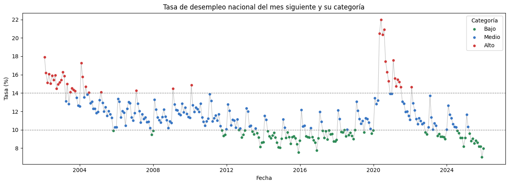
De los 288 meses, 91 son Bajo (31.6 %), 156 son Medio (54.2 %) y 41 son Alto (14.2 %). El desbalance no se forzó: aparece porque los meses de crisis son pocos, y es justamente lo que le da sentido a comparar más adelante SMOTE, ADASYN y los pesos de clase. En la figura se ve que los meses Alto se concentran en 2002-2004, con algún caso suelto hasta 2010, y en 2020-2021, mientras que desde 2011 hasta la pandemia casi todos los meses son Medio o Bajo.
Una validación que respeta el orden del tiempo#
La validación cruzada tampoco puede hacerse mezclando los meses al azar. Como las variables incluyen rezagos y promedios móviles, el mes t y el mes t+1 comparten casi toda su información (el segundo rezago de uno es el primer rezago del otro), y un K-fold aleatorio dejaría meses casi idénticos repartidos entre entrenamiento y prueba (Bergmeir & Benítez, 2012). El resultado sería una métrica demasiado optimista, que es justo el sesgo de selección que se busca evitar con la validación anidada (Cawley & Talbot, 2010).
Por eso se usó una validación anidada con ventana expansiva. El bucle externo, de 5 pliegues, mide qué tan bien generaliza el modelo ya optimizado; dentro de cada tramo de entrenamiento, un bucle interno de 3 pliegues es el que usa el optimizador para elegir los hiperparámetros. En los dos bucles la prueba queda siempre después del entrenamiento, con un mes de separación entre ambos para que los rezagos no se crucen en la frontera.
particiones = list(TimeSeriesSplit(n_splits=config.N_SPLITS_OUTER, gap=config.CV_GAP).split(ds.X))
fig = plots.plot_walk_forward(fechas_objetivo, particiones)
plt.show()
# Tamaño y composición de cada pliegue externo
etiquetas = ds.y_clf_labels
filas = []
for i, (entrenamiento, prueba) in enumerate(particiones):
filas.append({
'Pliegue': i + 1,
'Meses de entrenamiento': len(entrenamiento),
'Prueba desde': fechas_objetivo.iloc[prueba[0]].strftime('%Y-%m'),
'Prueba hasta': fechas_objetivo.iloc[prueba[-1]].strftime('%Y-%m'),
'Bajo (entrenamiento)': int((etiquetas.iloc[entrenamiento] == 'Bajo').sum()),
'Alto (entrenamiento)': int((etiquetas.iloc[entrenamiento] == 'Alto').sum()),
'Alto (prueba)': int((etiquetas.iloc[prueba] == 'Alto').sum()),
})
pd.DataFrame(filas).set_index('Pliegue')
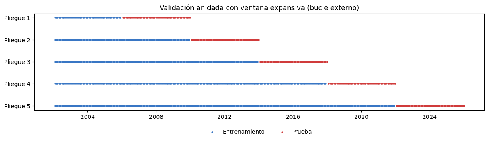
| Meses de entrenamiento | Prueba desde | Prueba hasta | Bajo (entrenamiento) | Alto (entrenamiento) | Alto (prueba) | |
|---|---|---|---|---|---|---|
| Pliegue | ||||||
| 1 | 47 | 2006-01 | 2009-12 | 1 | 24 | 2 |
| 2 | 95 | 2010-01 | 2013-12 | 3 | 26 | 1 |
| 3 | 143 | 2014-01 | 2017-12 | 16 | 27 | 0 |
| 4 | 191 | 2018-01 | 2021-12 | 54 | 27 | 13 |
| 5 | 239 | 2022-01 | 2025-12 | 67 | 40 | 1 |
Con 288 observaciones, 5 pliegues externos dejan pruebas de 48 meses (cuatro años) y un primer entrenamiento de 47 meses; más pliegues habrían dado pruebas demasiado cortas y menos habrían entregado muy pocas estimaciones del desempeño. En el bucle interno se usaron 3 pliegues para que los tramos de validación siguieran siendo razonables incluso en el primer pliegue externo. La métrica que se reporta siempre es la del bucle externo, nunca el mejor valor que encontró la búsqueda en el bucle interno.
La tabla muestra algo que condiciona los resultados: las clases no están repartidas parejo en el tiempo. El primer pliegue entrena con apenas 1 mes Bajo, y los 13 meses Alto de la pandemia caen en la prueba del pliegue 4, de modo que el modelo los enfrenta después de haber visto solo los 27 meses Alto de 2002 a 2010. En el total de las predicciones fuera de muestra (2006-2025) solo hay 17 meses Alto, y eso limita lo que se puede concluir sobre esa clase.
Modelos y espacios de búsqueda#
Los siete modelos de cada tarea son los pedidos en la actividad. En clasificación: KNN, Naive Bayes (gaussiano), regresión logística (con regularización L1 y L2), árbol de decisión, Random Forest, XGBoost y SVM. En regresión: KNN, Ridge, Lasso, árbol de decisión, Random Forest, XGBoost y SVR. Se usaron las implementaciones de scikit-learn (Pedregosa et al., 2011) y de XGBoost (Chen & Guestrin, 2016). A todos se les define el mismo espacio de búsqueda para los cuatro optimizadores, de manera que ninguno tenga ventaja por buscar en una región distinta.
Los rangos no son arbitrarios. Los parámetros de regularización (C, alpha, gamma, var_smoothing y la tasa de aprendizaje) se exploran en escala logarítmica, porque sus efectos cambian por órdenes de magnitud. Los parámetros de complejidad se acotan según el tamaño de los datos: con 288 observaciones no tiene sentido un árbol de más de 20 niveles ni un KNN con más de 30 vecinos. La siguiente tabla resume el espacio de cada modelo. Una limitación del diseño es que, con 17 variables, sqrt y log2 dan ambas 4 variables por división, así que en los bosques max_features en la práctica no cambia el modelo; se dejó igual para no alterar el espacio definido desde el inicio.
filas = []
for tarea, modelos in [('Clasificación', CLASSIFIERS), ('Regresión', REGRESSORS)]:
for modelo in modelos:
for h in modelo.space:
if h.kind == 'cat':
rango, escala = ', '.join(str(c) for c in h.choices), 'categórica'
else:
rango, escala = f'{h.low:g} a {h.high:g}', 'logarítmica' if h.log else 'lineal'
filas.append({'Tarea': tarea, 'Modelo': modelo.name, 'Hiperparámetro': h.name, 'Rango': rango, 'Escala': escala})
pd.DataFrame(filas).set_index(['Tarea', 'Modelo'])
| Hiperparámetro | Rango | Escala | ||
|---|---|---|---|---|
| Tarea | Modelo | |||
| Clasificación | KNN | n_neighbors | 3 a 30 | lineal |
| KNN | weights | uniform, distance | categórica | |
| KNN | p | 1, 2 | categórica | |
| NaiveBayes | var_smoothing | 1e-12 a 1e-06 | logarítmica | |
| LogisticRegression | C | 0.001 a 100 | logarítmica | |
| LogisticRegression | penalty | l1, l2 | categórica | |
| DecisionTree | max_depth | 2 a 20 | lineal | |
| DecisionTree | min_samples_split | 2 a 20 | lineal | |
| DecisionTree | min_samples_leaf | 1 a 10 | lineal | |
| DecisionTree | criterion | gini, entropy | categórica | |
| RandomForest | n_estimators | 50 a 300 | lineal | |
| RandomForest | max_depth | 3 a 20 | lineal | |
| RandomForest | min_samples_leaf | 1 a 10 | lineal | |
| RandomForest | max_features | sqrt, log2 | categórica | |
| XGBoost | n_estimators | 50 a 300 | lineal | |
| XGBoost | max_depth | 2 a 10 | lineal | |
| XGBoost | learning_rate | 0.001 a 0.3 | logarítmica | |
| XGBoost | subsample | 0.5 a 1 | lineal | |
| XGBoost | colsample_bytree | 0.5 a 1 | lineal | |
| SVM | C | 0.01 a 100 | logarítmica | |
| SVM | gamma | 0.0001 a 10 | logarítmica | |
| SVM | kernel | rbf, linear | categórica | |
| Regresión | KNN | n_neighbors | 3 a 30 | lineal |
| KNN | weights | uniform, distance | categórica | |
| KNN | p | 1, 2 | categórica | |
| Ridge | alpha | 0.001 a 1000 | logarítmica | |
| Lasso | alpha | 0.0001 a 10 | logarítmica | |
| DecisionTree | max_depth | 2 a 20 | lineal | |
| DecisionTree | min_samples_split | 2 a 20 | lineal | |
| DecisionTree | min_samples_leaf | 1 a 10 | lineal | |
| RandomForest | n_estimators | 50 a 300 | lineal | |
| RandomForest | max_depth | 3 a 20 | lineal | |
| RandomForest | min_samples_leaf | 1 a 10 | lineal | |
| RandomForest | max_features | sqrt, log2 | categórica | |
| XGBoost | n_estimators | 50 a 300 | lineal | |
| XGBoost | max_depth | 2 a 10 | lineal | |
| XGBoost | learning_rate | 0.001 a 0.3 | logarítmica | |
| XGBoost | subsample | 0.5 a 1 | lineal | |
| XGBoost | colsample_bytree | 0.5 a 1 | lineal | |
| SVR | C | 0.01 a 100 | logarítmica | |
| SVR | gamma | 0.0001 a 10 | logarítmica | |
| SVR | epsilon | 0.001 a 1 | logarítmica | |
| SVR | kernel | rbf, linear | categórica |
Para el desbalance de clases se compararon tres técnicas, siempre aplicadas solo sobre el tramo de entrenamiento de cada pliegue para no filtrar información. SMOTE genera ejemplos sintéticos de la clase minoritaria interpolando entre un caso y sus vecinos más cercanos (Chawla et al., 2002). ADASYN hace algo parecido pero crea más ejemplos donde la clase es más difícil de aprender (He et al., 2008). Los pesos de clase no crean datos: simplemente hacen que equivocarse en la clase minoritaria cueste más. Se aplicaron como pesos por observación, igual para todos los modelos; KNN no admite pesos, así que para ese modelo los pesos de clase equivalen a no balancear. Como en los primeros pliegues internos puede faltar una clase por completo (los primeros 13 meses de la serie son todos Alto), en esos casos no se remuestrea.
Métodos de optimización de hiperparámetros#
Los cuatro métodos evalúan cada combinación de hiperparámetros de la misma manera: reconstruyen a mano el pipeline completo (balanceo, escalado y modelo) dentro de cada pliegue interno y lo ajustan solo con el tramo de entrenamiento, de modo que el preprocesamiento nunca ve los datos de validación. El puntaje que se maximiza es el F1-macro en clasificación y el RMSE (con signo negativo) en regresión.
Grid Search recorre una grilla de 4 valores por hiperparámetro numérico. Cuando la grilla completa tiene más de 40 combinaciones se elige al azar una submuestra de 40, que se recorre en el orden natural de la grilla (de los valores bajos a los altos de cada hiperparámetro); cuando tiene menos (Naive Bayes, Ridge y Lasso tienen 4, la regresión logística 8, KNN 16 y SVM 32) se recorre completa.
Random Search evalúa 40 combinaciones muestreadas al azar del espacio de búsqueda, una alternativa que suele encontrar buenas configuraciones con menos evaluaciones que una grilla cuando pocos hiperparámetros importan de verdad (Bergstra & Bengio, 2012).
Optimización bayesiana, con Optuna (Akiba et al., 2019), usa como modelo sustituto el estimador de Parzen de estructura de árbol (TPE; Bergstra et al., 2011). Después de 10 evaluaciones iniciales al azar, separa lo evaluado en un grupo bueno (el 10 % mejor) y otro malo, ajusta una densidad a cada uno, l(x) y g(x), y propone el punto que maximiza l(x)/g(x), que equivale a maximizar la mejora esperada. Esa función de adquisición favorece explorar cerca de donde ya se obtuvieron buenos resultados, sin abandonar del todo las zonas inciertas. Se escogió TPE porque maneja de forma natural un espacio mixto (enteros, continuos en escala logarítmica y categóricos) y no necesita invertir una matriz de covarianza, como haría un proceso gaussiano.
Algoritmo genético, con DEAP (Fortin et al., 2012), representa cada hiperparámetro como un gen entre 0 y 1 que se traduce al rango real. La población es de 8 individuos y evoluciona con selección por torneo de tamaño 3, cruce por mezcla (
cxBlend, con probabilidad 0.6), mutación gaussiana (probabilidad 0.3 por individuo y 0.3 por gen, desviación 0.15) y elitismo de un individuo, de modo que el mejor siempre pasa intacto a la siguiente generación. Solo se vuelven a evaluar los individuos que cambiaron, y la búsqueda termina al completar 40 evaluaciones. Las elecciones se justifican así: el torneo de tamaño 3 da una presión de selección moderada y no obliga a reescalar las aptitudes (que son F1 en clasificación y RMSE con signo negativo en regresión); el cruce por mezcla es el adecuado para genes continuos; la mutación gaussiana de desviación 0.15 (el 15 % del rango de cada gen) explora vecindades sin saltos bruscos; el elitismo evita perder la mejor solución, y una población de 8 permite repartir las 40 evaluaciones en unas 8 generaciones.
Para que la comparación de eficiencia sea justa, los cuatro disponen de unas 40 evaluaciones por búsqueda (menos en Grid cuando la grilla es más pequeña). Toda la corrida usa una única semilla global (42), que se propaga a NumPy, a scikit-learn, a XGBoost, a SMOTE/ADASYN, al muestreador de Optuna y al generador que usa DEAP; por eso repetir la corrida da exactamente los mismos resultados. Además de la tabla maestra, cada búsqueda guardó el puntaje y el tiempo de cada evaluación, la diversidad de la población en cada generación del algoritmo genético y las predicciones de cada pliegue externo.
Resultados de clasificación#
Para elegir entre los modelos se usó el F1-macro y no el accuracy. Las tres categorías no cuestan lo mismo cuando se confunden: Alto corresponde a los meses de crisis, es la categoría minoritaria y la que más interesa detectar a tiempo. El F1-macro le da el mismo peso a cada categoría sin importar cuántos meses tenga, mientras que el accuracy permitiría obtener un buen puntaje acertando siempre la categoría más frecuente e ignorando las crisis casi por completo. Por la misma razón, además del F1-macro se reporta el recall de Alto, es decir, qué proporción de los meses de crisis logró anticipar el modelo: en este problema no avisar de una crisis cuesta más que una falsa alarma.
Para cada uno de los siete modelos se muestra la mejor combinación de técnica de balanceo y optimizador, según el F1-macro promedio de los cinco pliegues externos. Todas las métricas se reportan como media ± desviación estándar entre pliegues, porque con solo cinco pliegues un número suelto esconde la variabilidad.
master = A.load_master()
clasificacion = master[master['task'] == 'clf']
mejores_clf = A.best_per_model(master, 'clf') # mejor combinación de cada modelo según el F1-macro promedio
cuadro_clf = pd.DataFrame({
'Balanceo': mejores_clf['balancing'].map(A.BALANCING_LABELS),
'Optimizador': mejores_clf['optimizer'].map(A.OPTIMIZER_LABELS),
'Accuracy': [A.mean_std(f, 'accuracy') for _, f in mejores_clf.iterrows()],
'Precision': [A.mean_std(f, 'precision_macro') for _, f in mejores_clf.iterrows()],
'Recall': [A.mean_std(f, 'recall_macro') for _, f in mejores_clf.iterrows()],
'F1-score': [A.mean_std(f, 'f1_macro') for _, f in mejores_clf.iterrows()],
'AUC': [A.mean_std(f, 'auc_ovr') for _, f in mejores_clf.iterrows()],
})
cuadro_clf.index = [A.MODEL_LABELS[m] for m in mejores_clf.index]
cuadro_clf
| Balanceo | Optimizador | Accuracy | Precision | Recall | F1-score | AUC | |
|---|---|---|---|---|---|---|---|
| KNN | SMOTE | Genético | 0.821 ± 0.063 | 0.692 ± 0.211 | 0.692 ± 0.213 | 0.679 ± 0.211 | 0.850 ± 0.104 |
| Random Forest | ADASYN | Bayesiano | 0.787 ± 0.119 | 0.608 ± 0.167 | 0.658 ± 0.196 | 0.617 ± 0.166 | 0.869 ± 0.084 |
| Árbol de decisión | Ninguno | Genético | 0.800 ± 0.111 | 0.628 ± 0.204 | 0.619 ± 0.190 | 0.605 ± 0.195 | 0.712 ± 0.114 |
| Regresión logística | ADASYN | Genético | 0.754 ± 0.102 | 0.573 ± 0.143 | 0.649 ± 0.191 | 0.573 ± 0.138 | 0.762 ± 0.167 |
| XGBoost | SMOTE | Grid | 0.762 ± 0.142 | 0.602 ± 0.213 | 0.562 ± 0.133 | 0.552 ± 0.142 | 0.860 ± 0.086 |
| SVM | ADASYN | Grid | 0.679 ± 0.116 | 0.594 ± 0.176 | 0.637 ± 0.132 | 0.539 ± 0.195 | 0.783 ± 0.084 |
| Naive Bayes | ADASYN | Grid | 0.758 ± 0.113 | 0.523 ± 0.214 | 0.576 ± 0.220 | 0.526 ± 0.200 | 0.733 ± 0.201 |
En el cuadro, el mejor F1-macro es el de KNN con SMOTE y algoritmo genético (0.679 ± 0.211), seguido por Random Forest con ADASYN y optimización bayesiana (0.617 ± 0.166) y por el árbol de decisión sin balancear (0.605 ± 0.195). Los otros cuatro modelos quedan entre 0.526 y 0.573. La desviación entre pliegues es grande en todos (entre 0.14 y 0.21 en el F1-macro), y la razón es que los cinco pliegues no se parecen entre sí: el primero pronostica 2006-2009 con solo 47 meses de historia y el cuarto contiene la pandemia. Por eso diferencias de unas pocas centésimas, como las que hay entre el árbol de decisión y la regresión logística, no permiten decir que un modelo sea mejor que otro; eso se revisa con pruebas estadísticas más adelante.
El accuracy cuenta una historia más optimista que el F1-macro: en los siete modelos es bastante más alto (0.800 frente a 0.605 en el árbol de decisión, por ejemplo), porque Bajo y Medio son las categorías con más meses y pesan más en el accuracy, mientras que el F1-macro le da el mismo peso a Alto. El AUC también es alto en varios modelos (0.87 en Random Forest, 0.86 en XGBoost y 0.85 en KNN) aunque su F1-macro sea modesto, lo que significa que ordenan bastante bien los meses según su riesgo, pero escoger siempre “la categoría más probable” no es el mejor corte para la categoría rara. En seis de los siete modelos la mejor combinación incluye SMOTE o ADASYN (la excepción es el árbol de decisión) y el optimizador ganador cambia de un modelo a otro (genético en tres, Grid en tres y bayesiano en uno), una señal de que las diferencias entre optimizadores son pequeñas. Un último detalle: como cada modelo aparece con la mejor de sus 16 variantes, escogida con las mismas métricas que se reportan, estas cifras son un poco optimistas.
# Modelos de referencia sobre los mismos pliegues: clase más frecuente, persistencia de la clase y clase del año anterior
referencias_clf = A.classification_baselines(ds)
referencias_clf.columns = ['Accuracy', 'Precision', 'Recall', 'F1-score', 'Recall de Alto', 'Precisión de Alto']
# Métricas de los siete mejores modelos sobre las 240 predicciones fuera de muestra apiladas
oof_clf = {m: A.pooled_oof(f['run_id']) for m, f in mejores_clf.iterrows()}
agrupadas = pd.DataFrame({A.MODEL_LABELS[m]: A.pooled_classification_metrics(p) for m, p in oof_clf.items()}).T
agrupadas = agrupadas[['accuracy', 'precision_macro', 'recall_macro', 'f1_macro', 'recall_alto', 'precision_alto']]
agrupadas.columns = referencias_clf.columns
pd.concat([agrupadas, referencias_clf]).sort_values('F1-score', ascending=False)
| Accuracy | Precision | Recall | F1-score | Recall de Alto | Precisión de Alto | |
|---|---|---|---|---|---|---|
| KNN | 0.820833 | 0.806809 | 0.828951 | 0.814545 | 0.823529 | 0.777778 |
| Persistencia | 0.795833 | 0.752748 | 0.751832 | 0.752278 | 0.647059 | 0.647059 |
| Regresión logística | 0.754167 | 0.710168 | 0.757043 | 0.721016 | 0.705882 | 0.571429 |
| Random Forest | 0.787500 | 0.682563 | 0.667299 | 0.673577 | 0.352941 | 0.428571 |
| Naive Bayes | 0.758333 | 0.750364 | 0.615889 | 0.651124 | 0.294118 | 0.714286 |
| XGBoost | 0.762500 | 0.670043 | 0.629173 | 0.643780 | 0.294118 | 0.454545 |
| Árbol de decisión | 0.800000 | 0.683065 | 0.599227 | 0.612894 | 0.117647 | 0.400000 |
| Estacional | 0.720833 | 0.601830 | 0.595728 | 0.597792 | 0.294118 | 0.277778 |
| SVM | 0.679167 | 0.557935 | 0.558353 | 0.556738 | 0.235294 | 0.266667 |
| Mayoría | 0.379167 | 0.168403 | 0.262273 | 0.203077 | 0.117647 | 0.041667 |
Al apilar las 240 predicciones fuera de muestra, KNN alcanza un F1-macro de 0.815 y es el único modelo que supera a la persistencia de la clase, la regla que predice que el mes siguiente tendrá la misma categoría que el mes actual (0.752). Todos los demás quedan por debajo de esa regla tan simple: la regresión logística con 0.721, Random Forest con 0.674, Naive Bayes con 0.651, XGBoost con 0.644, el árbol de decisión con 0.613 y SVM con 0.557. La regla del año anterior (0.598) es peor que casi todos y la de predecir siempre la categoría más frecuente (0.203) es la peor, como era de esperar. Con la categoría Alto la diferencia es más marcada: KNN reconoce 14 de los 17 meses Alto (recall de 0.82), la regresión logística 12, la persistencia 11 y los demás modelos entre 2 y 6.
La lectura honesta es que a un mes de horizonte la categoría de hoy ya dice casi todo sobre la de mañana: la persistencia acierta en el 79.6 % de los meses. Superar una regla tan simple es difícil y solo KNN lo logra. Estos F1 agrupados no son los mismos del cuadro anterior: aquel promedia el F1 de cada pliegue y este se calcula sobre los 240 meses juntos.
etiquetas_modelo = {m: A.MODEL_LABELS[m] for m in mejores_clf.index}
predicciones = {etiquetas_modelo[m]: (p['y_true'], p['y_pred']) for m, p in oof_clf.items()}
fig = plots.confusion_grid(predicciones)
plt.show()
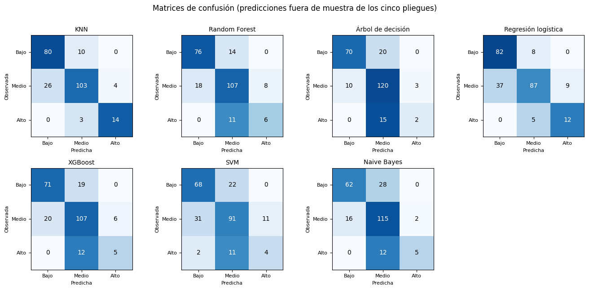
probabilidades = {etiquetas_modelo[m]: (p['y_true'], p['y_proba']) for m, p in oof_clf.items()}
fig = plots.roc_grid(probabilidades)
plt.show()
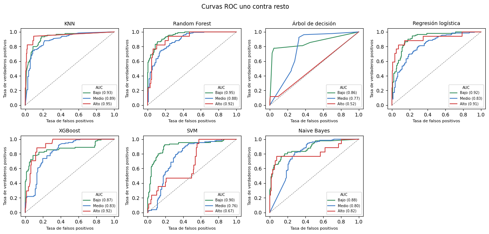
Las matrices de confusión muestran que los errores casi siempre son entre categorías vecinas: ningún modelo confunde un mes Bajo con uno Alto (las esquinas son cero), salvo SVM, que clasificó dos meses Alto como Bajo. KNN y la regresión logística son los que mejor reconocen la categoría Alto (14 y 12 de los 17 meses), pero a distinto costo. KNN solo se equivocó en 4 meses Medio que marcó como Alto; la regresión logística generó 9 falsas alarmas y, además, clasificó 37 meses Medio como Bajo. Random Forest, XGBoost, Naive Bayes y el árbol de decisión detectan entre 2 y 6 meses Alto y mandan la mayoría de los demás hacia Medio.
En las curvas ROC (cada categoría contra las otras dos) KNN tiene la mejor curva para Alto (AUC de 0.95), seguida por Random Forest y XGBoost (0.92) y la regresión logística (0.91). La curva del árbol de decisión para Alto casi coincide con la diagonal (0.52), porque sus probabilidades toman unos pocos valores y casi no ordena los meses, y SVM es el que peor ordena esa categoría (0.67). Para Bajo todos los modelos tienen un AUC de 0.86 o más, y Medio, que es la categoría intermedia y por eso la más difícil de separar, queda entre 0.76 y 0.89.
Efecto del balanceo de clases#
tabla_balanceo = clasificacion.pivot_table(index='model', columns='balancing', values='f1_macro_mean')
tabla_balanceo = tabla_balanceo[['none', 'smote', 'adasyn', 'class_weight']]
tabla_balanceo.columns = [A.BALANCING_LABELS[c] for c in tabla_balanceo.columns]
tabla_balanceo.index = [A.MODEL_LABELS[m] for m in tabla_balanceo.index]
tabla_balanceo.round(3)
| Ninguno | SMOTE | ADASYN | Pesos de clase | |
|---|---|---|---|---|
| Árbol de decisión | 0.545 | 0.486 | 0.493 | 0.492 |
| KNN | 0.501 | 0.654 | 0.656 | 0.501 |
| Regresión logística | 0.450 | 0.496 | 0.510 | 0.503 |
| Naive Bayes | 0.518 | 0.457 | 0.526 | 0.517 |
| Random Forest | 0.486 | 0.556 | 0.596 | 0.520 |
| SVM | 0.415 | 0.455 | 0.485 | 0.468 |
| XGBoost | 0.535 | 0.498 | 0.525 | 0.524 |
# Prueba de Friedman entre las cuatro técnicas: cada bloque es un modelo con un optimizador (28 bloques)
bloques = clasificacion.pivot_table(index=['model', 'optimizer'], columns='balancing', values='f1_macro_mean')
bloques = bloques[['none', 'smote', 'adasyn', 'class_weight']]
bloques.columns = [A.BALANCING_LABELS[c] for c in bloques.columns]
friedman_balanceo = ST.friedman_test(bloques)
print(f'Friedman: chi2 = {friedman_balanceo.statistic:.2f}, gl = {friedman_balanceo.df}, p = {friedman_balanceo.p_value:.4f}')
print(friedman_balanceo.avg_ranks.round(2).to_string())
diferencias = pd.DataFrame({
'Mejora promedio de F1-macro frente a no balancear': [(bloques[c] - bloques['Ninguno']).mean() for c in bloques.columns[1:]],
'Delta de Cliff frente a no balancear': [ST.cliffs_delta(bloques[c], bloques['Ninguno']) for c in bloques.columns[1:]],
}, index=bloques.columns[1:])
diferencias.round(3)
Friedman: chi2 = 13.35, gl = 3, p = 0.0039
ADASYN 1.75
Pesos de clase 2.64
SMOTE 2.71
Ninguno 2.89
| Mejora promedio de F1-macro frente a no balancear | Delta de Cliff frente a no balancear | |
|---|---|---|
| SMOTE | 0.022 | 0.140 |
| ADASYN | 0.049 | 0.401 |
| Pesos de clase | 0.011 | 0.033 |
fig, ax = plt.subplots(figsize=(8, 4.5))
ax.boxplot([bloques[c] for c in bloques.columns], labels=bloques.columns, patch_artist=True,
boxprops=dict(facecolor=plots.BLUE, alpha=0.3, color=plots.BLUE), medianprops=dict(color=plots.RED, linewidth=1.5))
ax.set_ylabel('F1-macro promedio (28 combinaciones modelo-optimizador)')
ax.set_title('Efecto de la técnica de balanceo sobre el F1-macro')
plt.tight_layout()
plt.show()
# Resumen de los 28 bloques por técnica (lo que muestran las cajas)
pd.DataFrame({'Media': bloques.mean(), 'Mediana': bloques.median(),
'Rango intercuartílico': bloques.quantile(0.75) - bloques.quantile(0.25), 'Máximo': bloques.max()}).round(3)
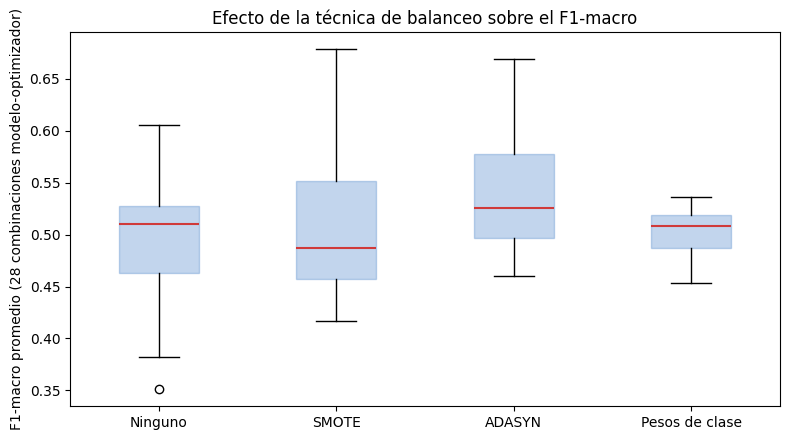
| Media | Mediana | Rango intercuartílico | Máximo | |
|---|---|---|---|---|
| Ninguno | 0.493 | 0.510 | 0.065 | 0.605 |
| SMOTE | 0.515 | 0.487 | 0.095 | 0.679 |
| ADASYN | 0.542 | 0.526 | 0.081 | 0.669 |
| Pesos de clase | 0.503 | 0.509 | 0.032 | 0.536 |
La tabla, que promedia los cuatro optimizadores, muestra que el balanceo no ayuda por igual a todos los modelos. A KNN y a Random Forest les sirve bastante: el F1-macro de KNN sube de 0.501 sin balancear a 0.654 con SMOTE y 0.656 con ADASYN, y el de Random Forest de 0.486 a 0.556 y 0.596. A la regresión logística y a SVM les da una mejora moderada (hasta 0.510 y 0.485, frente a 0.450 y 0.415), y a Naive Bayes casi no le cambia nada, salvo SMOTE, que lo empeora (0.457). Para el árbol de decisión y XGBoost el balanceo no sirve: el árbol rinde más sin balancear (0.545 contra 0.486 con SMOTE) y a XGBoost no lo mejora ninguna técnica (0.535 sin balancear). En KNN los pesos de clase no aplican, porque el modelo no admite pesos, y por eso esa columna coincide con la de “Ninguno”.
La prueba de Friedman (1937) confirma que hay diferencias entre las cuatro técnicas (χ² = 13.35, 3 grados de libertad, p = 0.0039), y ADASYN tiene el mejor rango promedio (1.75), por delante de los pesos de clase (2.64), SMOTE (2.71) y no balancear (2.89). En tamaño del efecto, ADASYN mejora el F1-macro en promedio 0.049 frente a no balancear, con un delta de Cliff (1993) de 0.40 (efecto mediano según los umbrales de Romano et al., 2006); SMOTE mejora 0.022 (delta de 0.14, despreciable) y los pesos de clase 0.011 (delta de 0.03, despreciable). El diagrama de cajas muestra que la mediana de ADASYN (0.526) es la más alta, que la de SMOTE (0.487) queda incluso por debajo de la de no balancear (0.510) —su ganancia promedio viene de unos pocos modelos, sobre todo KNN y Random Forest, que llegan hasta 0.68— y que los pesos de clase son la técnica más compacta (rango intercuartílico de 0.03) porque casi no cambian el resultado. La conclusión es que ADASYN es la técnica más segura para este problema, pero la ganancia depende del modelo.
Calibración de las probabilidades#
Un modelo puede ordenar bien los meses por riesgo y aun así dar probabilidades poco confiables: que diga “70 % de probabilidad de Alto” no significa que siete de cada diez meses con esa predicción sean realmente Alto. Para revisarlo se usan tres herramientas sobre la categoría Alto. El diagrama de confiabilidad agrupa las predicciones en 10 intervalos de probabilidad y compara la probabilidad media de cada intervalo con la frecuencia observada de meses Alto; si el modelo está bien calibrado, los puntos quedan sobre la diagonal. El Brier score (Brier, 1950) es el error cuadrático medio entre la probabilidad predicha y el resultado observado (0 o 1), y mezcla calibración con capacidad de discriminar. El error de calibración esperado, ECE (Guo et al., 2017), es el promedio, ponderado por el número de meses de cada intervalo, de la distancia entre la probabilidad predicha y la frecuencia observada. Para corregir los modelos mal calibrados se probaron dos recalibradores: el escalado de Platt (Platt, 1999), que ajusta una regresión logística sobre la probabilidad predicha, y la regresión isotónica (Zadrozny & Elkan, 2002), que ajusta una función escalonada creciente.
curvas, filas = {}, []
for modelo, fila in mejores_clf.iterrows():
pooled = oof_clf[modelo]
calibracion = A.calibration_row(pooled)
tabla = A.reliability_bins((pooled['y_true'] == A.ALTO).astype(int), pooled['y_proba'][:, A.ALTO], n_bins=10)
curvas[etiquetas_modelo[modelo]] = (tabla, calibracion['brier_alto'], calibracion['ece_alto'])
filas.append({'Modelo': etiquetas_modelo[modelo], 'Brier (Alto)': calibracion['brier_alto'],
'ECE (Alto)': calibracion['ece_alto'], 'Brier multiclase': calibracion['brier_multiclase']})
cuadro_calibracion = pd.DataFrame(filas).set_index('Modelo').sort_values('ECE (Alto)')
frecuencia_alto = float((oof_clf[mejores_clf.index[0]]['y_true'] == A.ALTO).mean())
print(f'Frecuencia de la categoría Alto: {frecuencia_alto:.3f}. Brier de una predicción constante igual a esa frecuencia: {frecuencia_alto * (1 - frecuencia_alto):.4f}')
cuadro_calibracion.round(4)
Frecuencia de la categoría Alto: 0.071. Brier de una predicción constante igual a esa frecuencia: 0.0658
| Brier (Alto) | ECE (Alto) | Brier multiclase | |
|---|---|---|---|
| Modelo | |||
| KNN | 0.0288 | 0.0242 | 0.2774 |
| Random Forest | 0.0489 | 0.0500 | 0.2880 |
| Naive Bayes | 0.0558 | 0.0581 | 0.4463 |
| Regresión logística | 0.0469 | 0.0766 | 0.3609 |
| Árbol de decisión | 0.0716 | 0.0817 | 0.3829 |
| SVM | 0.0835 | 0.0866 | 0.3987 |
| XGBoost | 0.0660 | 0.1113 | 0.4082 |
fig = plots.reliability_grid(curvas)
plt.show()
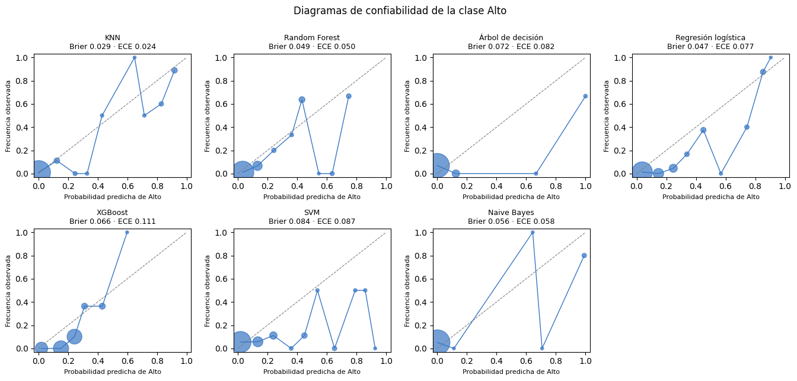
La categoría Alto es rara (17 de 240 meses, el 7.1 %), así que el Brier score de esa categoría hay que compararlo con el de una predicción constante: darle siempre 7.1 % de probabilidad tendría un Brier de 0.066. Lo mejoran KNN (0.029), la regresión logística (0.047), Random Forest (0.049) y Naive Bayes (0.056); XGBoost (0.066) apenas lo iguala, y SVM (0.084) y el árbol de decisión (0.072) quedan peor que no predecir nada. En el ECE, KNN es el mejor calibrado (0.024) y XGBoost el peor (0.111), seguido de SVM (0.087), el árbol (0.082) y la regresión logística (0.077).
Los diagramas de confiabilidad hay que leerlos con cuidado. Casi todos los meses caen en el primer grupo (probabilidades cercanas a 0, la burbuja grande) y los grupos de probabilidad alta tienen unos pocos meses cada uno, así que sus puntos son muy ruidosos: un solo mes cambia la frecuencia observada de 0 a 1. Aun así se distinguen algunos patrones. Las probabilidades de XGBoost nunca pasan de 0.6, quedan comprimidas hacia la frecuencia base, algo esperable en un modelo que eligió una tasa de aprendizaje muy baja (0.007 en el último pliegue); las de SVM quedan casi siempre por debajo de la diagonal, es decir, sobreestiman el riesgo; el árbol de decisión da probabilidades de 0 o 1, por lo que su diagrama solo tiene tres puntos; y KNN y la regresión logística son los que más se acercan a la diagonal en los extremos.
# Recalibración con escalado de Platt y con regresión isotónica: el modelo se entrena con el primer 75 % de cada
# tramo de entrenamiento y el recalibrador con el 25 % restante; la prueba solo se usa para evaluar.
filas = []
for modelo, fila in mejores_clf.iterrows():
r = A.recalibration_experiment(modelo, fila['balancing'], fila['optimizer'], ds)
filas.append({
'Modelo': etiquetas_modelo[modelo],
'Brier sin recalibrar': r['brier_sin_recalibrar'], 'Brier Platt': r['brier_platt'], 'Brier isotónica': r['brier_isotonica'],
'ECE sin recalibrar': r['ece_sin_recalibrar'], 'ECE Platt': r['ece_platt'], 'ECE isotónica': r['ece_isotonica'],
})
recalibracion = pd.DataFrame(filas).set_index('Modelo')
recalibracion.round(4)
| Brier sin recalibrar | Brier Platt | Brier isotónica | ECE sin recalibrar | ECE Platt | ECE isotónica | |
|---|---|---|---|---|---|---|
| Modelo | ||||||
| KNN | 0.0382 | 0.0747 | 0.0725 | 0.0467 | 0.0804 | 0.0743 |
| Random Forest | 0.0615 | 0.0528 | 0.0575 | 0.1063 | 0.0555 | 0.0578 |
| Árbol de decisión | 0.0749 | 0.0784 | 0.0770 | 0.0785 | 0.0990 | 0.0973 |
| Regresión logística | 0.0552 | 0.0591 | 0.0470 | 0.0781 | 0.0494 | 0.0448 |
| XGBoost | 0.0824 | 0.0601 | 0.0652 | 0.1259 | 0.0565 | 0.0544 |
| SVM | 0.1108 | 0.0738 | 0.0824 | 0.1329 | 0.0701 | 0.0883 |
| Naive Bayes | 0.0578 | 0.0594 | 0.0979 | 0.0610 | 0.0287 | 0.0817 |
El efecto de recalibrar depende de qué tan mal calibrado estuviera el modelo. Las mejoras más claras son las de los que tenían peor calibración: XGBoost baja su ECE de 0.126 a 0.057 con Platt y a 0.054 con la isotónica (y su Brier de 0.082 a 0.060 y 0.065), SVM de 0.133 a 0.070 con Platt (Brier de 0.111 a 0.074), Random Forest de 0.106 a 0.056 y la regresión logística de 0.078 a 0.049 con Platt y 0.045 con la isotónica. Naive Bayes mejora con Platt (ECE de 0.061 a 0.029) pero empeora con la isotónica (0.082).
En cambio, a KNN y al árbol de decisión recalibrar les hace daño: el ECE de KNN pasa de 0.047 a 0.080 con Platt y 0.074 con la isotónica, y el del árbol de 0.079 a 0.099 y 0.097. Eran los modelos que ya estaban razonablemente calibrados o cuyas probabilidades solo toman unos pocos valores, y el recalibrador se ajusta con apenas el 25 % final de cada tramo de entrenamiento, que tiene muy pocos meses Alto. Con tan pocos casos de la clase rara, Platt (dos parámetros) es más estable que la regresión isotónica (muchos escalones), que se sobreajusta, como se ve en Naive Bayes. La recomendación práctica es recalibrar solo los modelos mal calibrados (XGBoost, SVM, Random Forest y regresión logística), preferir Platt cuando hay pocos datos y comprobar siempre el efecto sobre una muestra que no se usó para ajustar el recalibrador.
Resultados de regresión#
En regresión se evalúan los siete modelos con el RMSE y el MAE, que son los errores del pronóstico en puntos porcentuales de desempleo. El RMSE castiga más los errores grandes (como los de 2020) y el MAE es el error absoluto promedio, así que mirar los dos ayuda a distinguir un modelo que falla poco en todas partes de uno que acierta casi siempre pero se equivoca mucho en unos pocos meses. Igual que en clasificación, para cada modelo se muestra su mejor optimizador según el RMSE promedio de los cinco pliegues externos, con la media ± desviación estándar entre pliegues.
Además de las métricas por pliegue, se juntaron los pronósticos de los cinco pliegues en una sola serie de 240 meses (de enero de 2006 a diciembre de 2025), todos hechos con información anterior. Con esa serie se calcularon las pruebas sobre los residuos, porque 240 observaciones dan mucha más potencia que los 48 meses de un solo pliegue. En el cuadro, la prueba de White (1980) contrasta que la varianza de los errores sea constante (se hace contra el valor predicho, porque los modelos no son lineales en las variables) y la de BDS (Brock et al., 1996) que los errores sean independientes entre sí.
regresion = master[master['task'] == 'reg']
mejores_reg = A.best_per_model(master, 'reg') # mejor combinación de cada modelo según el RMSE promedio
# Errores de pronóstico (observado menos predicho) de los 240 meses fuera de muestra, apilados
errores_reg = {m: A.pooled_regression_errors(f['run_id']) for m, f in mejores_reg.iterrows()}
supuestos = {m: A.residual_tests(e['error'], e['y_pred']) for m, e in errores_reg.items()}
def formato_p(valor):
# los p-valores menores que 0.0001 se muestran como "< 0.0001" en vez de 0.0000
return '< 0.0001' if valor < 0.0001 else f'{valor:.4f}'
cuadro_reg = pd.DataFrame({
'Optimizador': mejores_reg['optimizer'].map(A.OPTIMIZER_LABELS),
'RMSE': [A.mean_std(f, 'rmse') for _, f in mejores_reg.iterrows()],
'MAE': [A.mean_std(f, 'mae') for _, f in mejores_reg.iterrows()],
'p-valor (White)': [formato_p(supuestos[m]['white_p']) for m in mejores_reg.index],
'p-valor (BDS)': [formato_p(supuestos[m]['bds_p']) for m in mejores_reg.index],
})
cuadro_reg.index = [A.MODEL_LABELS[m] for m in mejores_reg.index]
cuadro_reg
| Optimizador | RMSE | MAE | p-valor (White) | p-valor (BDS) | |
|---|---|---|---|---|---|
| Ridge | Random | 1.196 ± 0.552 | 0.880 ± 0.348 | 0.0008 | < 0.0001 |
| SVR | Random | 1.213 ± 0.506 | 0.868 ± 0.329 | 0.0010 | < 0.0001 |
| KNN | Bayesiano | 1.251 ± 0.566 | 0.883 ± 0.281 | 0.0007 | < 0.0001 |
| XGBoost | Grid | 1.266 ± 0.924 | 0.873 ± 0.497 | 0.0236 | < 0.0001 |
| Random Forest | Random | 1.274 ± 0.811 | 0.891 ± 0.411 | 0.0269 | < 0.0001 |
| Árbol de decisión | Bayesiano | 1.476 ± 0.941 | 1.089 ± 0.553 | 0.0194 | < 0.0001 |
| Lasso | Random | 1.510 ± 0.763 | 1.171 ± 0.524 | < 0.0001 | < 0.0001 |
El mejor RMSE promedio entre pliegues es el de Ridge (1.196 ± 0.552), seguido de cerca por SVR (1.213) y KNN (1.251); XGBoost (1.266) y Random Forest (1.274) vienen después, y el árbol de decisión (1.476) y Lasso (1.510) quedan de últimos. El MAE ordena casi igual, pero con menos distancia entre los cinco primeros (entre 0.87 y 0.89 puntos porcentuales). Que el RMSE sea bastante mayor que el MAE (1.2 contra 0.9) indica que hay errores grandes concentrados en pocos meses, que son los de 2020. La desviación entre pliegues es muy alta (de 0.5 a 0.9 puntos de RMSE), de modo que las diferencias entre los primeros cinco modelos están dentro del ruido.
Que el mejor modelo sea uno lineal tiene sentido en una serie tan persistente: el desempleo del mes siguiente se parece mucho al de este mes más una pequeña corrección, y los árboles, que predicen siempre dentro del rango de valores que vieron al entrenar, no extrapolan cuando la serie sale de ese rango. En las dos últimas columnas se ve que ningún modelo cumple los supuestos: el p-valor de la prueba de White es menor que 0.05 en los siete (la varianza de los errores no es constante) y el de BDS es menor que 0.0001 en los siete (los errores no son independientes). Esto se revisa en la sección de residuos.
# Modelos de referencia a un mes: persistencia, mismo mes del año anterior y el SARIMA(0,1,1)(0,1,1)[12] del capítulo anterior
referencias_reg = A.regression_baselines(ds)
assert (referencias_reg['idx'].values == errores_reg[mejores_reg.index[0]]['idx']).all()
filas = []
for modelo in mejores_reg.index:
e = errores_reg[modelo]['error']
filas.append({'Modelo': A.MODEL_LABELS[modelo], 'Tipo': 'Machine learning', 'RMSE agrupado': np.sqrt(np.mean(e ** 2)), 'MAE agrupado': np.mean(np.abs(e))})
for nombre in ['Persistencia', 'Estacional', 'SARIMA']:
e = referencias_reg['y_true'] - referencias_reg[nombre]
filas.append({'Modelo': nombre if nombre != 'Estacional' else 'Mismo mes del año anterior', 'Tipo': 'Referencia',
'RMSE agrupado': np.sqrt(np.mean(e ** 2)), 'MAE agrupado': np.mean(np.abs(e))})
comparacion_reg = pd.DataFrame(filas).set_index('Modelo').sort_values('RMSE agrupado')
comparacion_reg.round(3)
| Tipo | RMSE agrupado | MAE agrupado | |
|---|---|---|---|
| Modelo | |||
| SARIMA | Referencia | 0.995 | 0.562 |
| Persistencia | Referencia | 1.293 | 0.905 |
| SVR | Machine learning | 1.314 | 0.868 |
| Ridge | Machine learning | 1.317 | 0.880 |
| KNN | Machine learning | 1.373 | 0.883 |
| Random Forest | Machine learning | 1.510 | 0.891 |
| XGBoost | Machine learning | 1.568 | 0.873 |
| Lasso | Machine learning | 1.692 | 1.171 |
| Árbol de decisión | Machine learning | 1.751 | 1.089 |
| Mismo mes del año anterior | Referencia | 2.107 | 1.244 |
# El choque de 2020 domina el error total, así que también se separa lo que pasó antes, durante y después de la pandemia
fechas_oof = pd.to_datetime(fechas_objetivo.iloc[errores_reg[mejores_reg.index[0]]['idx']].values)
periodos = {'Antes de la pandemia (2006-2019)': fechas_oof < '2020-01-01',
'Pandemia (ene 2020 - jun 2021)': (fechas_oof >= '2020-01-01') & (fechas_oof <= '2021-06-30'),
'Después (jul 2021 - 2025)': fechas_oof > '2021-06-30'}
print({nombre: int(mascara.sum()) for nombre, mascara in periodos.items()}, 'meses en cada periodo')
errores_modelos = {A.MODEL_LABELS[m]: np.asarray(e['error']) for m, e in errores_reg.items()}
for nombre in ['Persistencia', 'Estacional', 'SARIMA']:
errores_modelos[nombre] = (referencias_reg['y_true'] - referencias_reg[nombre]).values
por_periodo = pd.DataFrame({
nombre: {**{periodo: np.sqrt(np.mean(e[mascara] ** 2)) for periodo, mascara in periodos.items()}, 'Todo el periodo': np.sqrt(np.mean(e ** 2))}
for nombre, e in errores_modelos.items()}).T
por_periodo.sort_values('Todo el periodo').round(3)
{'Antes de la pandemia (2006-2019)': 168, 'Pandemia (ene 2020 - jun 2021)': 18, 'Después (jul 2021 - 2025)': 54} meses en cada periodo
| Antes de la pandemia (2006-2019) | Pandemia (ene 2020 - jun 2021) | Después (jul 2021 - 2025) | Todo el periodo | |
|---|---|---|---|---|
| SARIMA | 0.509 | 3.034 | 0.728 | 0.995 |
| Persistencia | 1.161 | 2.432 | 1.128 | 1.293 |
| SVR | 1.050 | 3.101 | 1.020 | 1.314 |
| Ridge | 1.016 | 3.219 | 1.024 | 1.317 |
| KNN | 1.075 | 3.553 | 0.757 | 1.373 |
| Random Forest | 0.874 | 4.562 | 0.909 | 1.510 |
| XGBoost | 0.831 | 4.930 | 0.821 | 1.568 |
| Lasso | 1.427 | 3.892 | 1.155 | 1.692 |
| Árbol de decisión | 1.155 | 5.073 | 0.943 | 1.751 |
| Estacional | 0.818 | 6.187 | 2.211 | 2.107 |
Este es el resultado menos favorable para el machine learning: ninguno de los siete modelos supera al SARIMA(0,1,1)(0,1,1)[12] del capítulo anterior. Sobre los 240 meses, el SARIMA tiene un RMSE de 0.995 y un MAE de 0.562; el mejor modelo de machine learning, SVR, queda en 1.314 y 0.868, y la simple persistencia (pronosticar que el mes siguiente será igual al actual) llega a 1.293 de RMSE y 0.905 de MAE, a la par de los mejores modelos. La regla estacional (el mismo mes del año anterior) es la peor en el total (2.107).
El orden total, sin embargo, esconde mucho, porque los errores de 2020 pesan demasiado. Separado por periodos, el SARIMA es el mejor antes de la pandemia (168 meses, RMSE de 0.509) y después de ella (54 meses, 0.728). Entre los modelos de machine learning, los de árboles son los mejores antes de la pandemia (XGBoost con 0.831 y Random Forest con 0.874, cerca de la regla estacional, que da 0.818) y los peores durante ella (4.93 y 4.56, frente a 3.03 del SARIMA), porque predicen siempre dentro del rango de valores que vieron al entrenar y en 2020 la tasa se disparó hasta 22 %. Ridge y SVR son lo contrario: peores en los meses tranquilos (entre 1.02 y 1.05) pero más robustos al choque (3.22 y 3.10). Durante la pandemia (18 meses) el mejor es la persistencia (2.43), simplemente porque después de que la tasa salta se queda alta y repetir el último valor acierta. Después de la pandemia, KNN (0.757) y XGBoost (0.821) se acercan al SARIMA (0.728).
# Los pronósticos fuera de muestra del mejor modelo de machine learning, del SARIMA y de la persistencia
mejor_reg = mejores_reg.index[0]
e = errores_reg[mejor_reg]
fechas_oof = fechas_objetivo.iloc[e['idx']].values
fig, ax = plt.subplots(figsize=(13, 5))
ax.axvspan(pd.Timestamp('2020-01-01'), pd.Timestamp('2021-06-01'), alpha=0.15, color='grey')
ax.text(pd.Timestamp('2020-09-01'), 20.5, 'COVID-19', size=9, color='grey')
ax.plot(fechas_oof, e['y_true'], color=plots.BLUE, linewidth=1.2, label='Observado')
ax.plot(fechas_oof, e['y_pred'], color='#e07b00', linewidth=1.0, linestyle='--', label=f'{A.MODEL_LABELS[mejor_reg]} (mejor modelo de ML)')
ax.plot(fechas_oof, referencias_reg['SARIMA'], color=plots.GREEN, linewidth=1.0, label='SARIMA(0,1,1)(0,1,1)[12]')
ax.plot(fechas_oof, referencias_reg['Persistencia'], color=plots.GREY, linewidth=0.8, alpha=0.8, label='Persistencia')
ax.set_title('Pronósticos a un mes fuera de muestra (2006-2025)')
ax.set_xlabel('Fecha')
ax.set_ylabel('Tasa de desempleo nacional (%)')
ax.legend(loc='upper right')
plt.tight_layout()
plt.show()
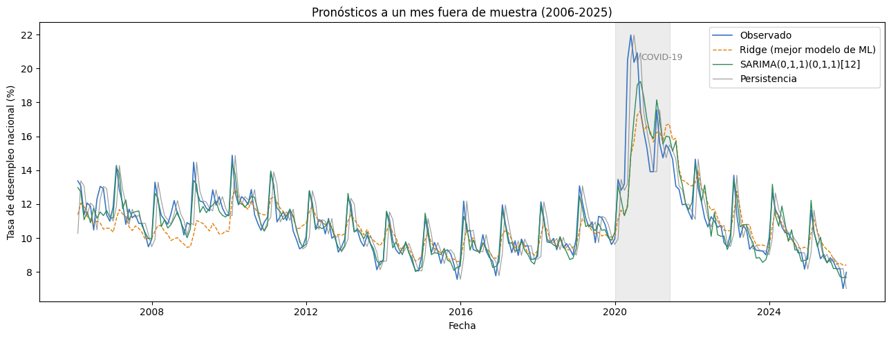
En la figura se ve por qué gana el SARIMA. La serie tiene un patrón estacional muy marcado, con picos al comienzo de cada año y valles hacia el final, montado sobre una tendencia que baja de 2006 a 2015. El SARIMA (línea verde) reproduce esos picos casi mes a mes. Ridge, el mejor modelo de machine learning (línea naranja punteada), sigue el nivel y la tendencia pero casi no oscila: es una versión suavizada de la serie que no llega a los picos estacionales, lo que se refleja en los residuos autocorrelacionados que se analizan más adelante. La persistencia (línea gris) es la misma serie corrida un mes, así que es competitiva en los tramos suaves pero siempre llega tarde a los cambios bruscos. En abril de 2020, cuando la tasa pasó de 13.2 % a 20.5 %, ninguno de los tres lo anticipó: la persistencia se pone al día un mes después, y Ridge y el SARIMA solo llegan a cerca de 17-19 % en el pico.
Entrenamiento, validación y prueba#
# Se reconstruye el modelo final del último pliegue externo (mismos hiperparámetros que eligió la búsqueda) y se grafican
# sus predicciones: entrenamiento (primeros 75 % del tramo), validación (último 25 %, el que usó la búsqueda interna) y prueba.
fila = mejores_reg.iloc[0]
ajuste = A.refit_fold('reg', mejor_reg, 'none', fila['optimizer'], fold=4, ds=ds)
filas_usadas = np.concatenate([np.arange(len(ajuste['X_train'])), ajuste['test_idx']])
predicho = ajuste['est'].predict(I.scale(ajuste['scaler'], ds.X.iloc[filas_usadas]))
n_entrenamiento = int(0.75 * len(ajuste['X_train']))
n_validacion = len(ajuste['X_train']) - n_entrenamiento
fig = plots.plot_train_val_test(
fechas_objetivo.iloc[filas_usadas].values, ds.y_reg.iloc[filas_usadas].values, predicho,
n_entrenamiento, n_validacion, f'{A.MODEL_LABELS[mejor_reg]}: observado y predicho en entrenamiento, validación y prueba')
plt.show()
for nombre, tramo in [('Entrenamiento', slice(0, n_entrenamiento)), ('Validación', slice(n_entrenamiento, n_entrenamiento + n_validacion)),
('Prueba', slice(n_entrenamiento + n_validacion, None))]:
obs, est = ds.y_reg.iloc[filas_usadas].values[tramo], predicho[tramo]
print(f'{nombre:13s} RMSE = {np.sqrt(np.mean((obs - est) ** 2)):.3f} MAE = {np.mean(np.abs(obs - est)):.3f}')
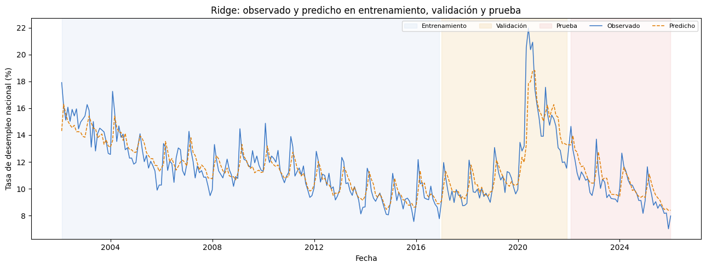
Entrenamiento RMSE = 0.918 MAE = 0.681
Validación RMSE = 1.505 MAE = 1.003
Prueba RMSE = 0.876 MAE = 0.677
La figura reconstruye el modelo Ridge del último pliegue externo, entrenado con 239 meses, y separa su entrenamiento (los primeros 179 meses), su validación (los 60 siguientes, que es aproximadamente el tramo con el que la búsqueda interna lo evaluó en su último pliegue) y la prueba (2022-2025). Las predicciones siguen bien la tendencia descendente y el nivel de cada tramo, pero suavizan los picos de comienzo de año: la línea naranja oscila mucho menos que la observada. Los errores son un RMSE de 0.918 en entrenamiento, 1.505 en validación y 0.876 en prueba. Lo que más llama la atención es que el modelo no tiene problema de sobreajuste (el error en prueba es incluso menor que en entrenamiento) y que el tramo difícil es la validación, porque contiene el choque de 2020-2021. Es decir, el error de cada tramo depende sobre todo de qué tan agitado fue ese periodo y no de si los datos se vieron durante el entrenamiento, y el desempeño de Ridge (con un alpha de 70.9, una regularización fuerte) está limitado más por sesgo que por varianza.
Análisis de residuos#
Sobre los 240 errores de pronóstico de cada modelo se revisan los supuestos con varias herramientas. La independencia serial se mira con la función de autocorrelación (ACF) y con la prueba de Ljung-Box (Ljung & Box, 1978); la normalidad, con el histograma, el gráfico cuantil-cuantil y las pruebas de Shapiro-Wilk (Shapiro & Wilk, 1965) y de Jarque-Bera (Jarque & Bera, 1987); y la varianza constante y la independencia no lineal, con las pruebas de White y BDS que ya se vieron. Además, el gráfico de los residuos contra los valores predichos sirve para detectar formas sistemáticas. La figura es la del mejor modelo de machine learning y la tabla reúne las seis pruebas de los siete modelos.
fig = plots.plot_residuals(
fechas_oof, e['error'], e['y_pred'],
{12: supuestos[mejor_reg]['ljungbox12_p'], 24: supuestos[mejor_reg]['ljungbox24_p']},
f'Residuos de {A.MODEL_LABELS[mejor_reg]} (240 pronósticos fuera de muestra)')
plt.show()
pruebas = pd.DataFrame(supuestos).T
pruebas.columns = ['White (varianza constante)', 'BDS (independencia)', 'Ljung-Box 12 rezagos', 'Ljung-Box 24 rezagos',
'Shapiro-Wilk (normalidad)', 'Jarque-Bera (normalidad)']
pruebas.index = [A.MODEL_LABELS[m] for m in pruebas.index]
pruebas.apply(lambda columna: columna.map(formato_p))
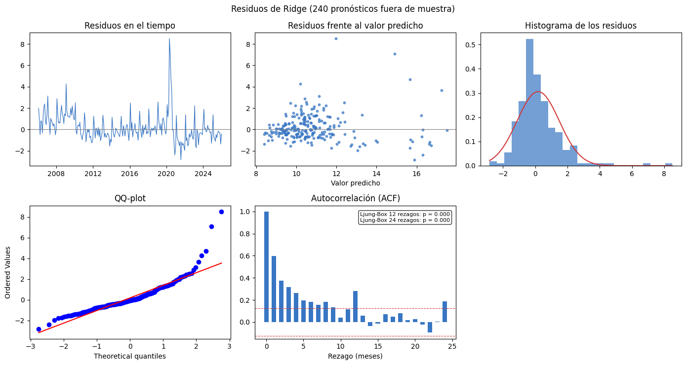
| White (varianza constante) | BDS (independencia) | Ljung-Box 12 rezagos | Ljung-Box 24 rezagos | Shapiro-Wilk (normalidad) | Jarque-Bera (normalidad) | |
|---|---|---|---|---|---|---|
| Ridge | 0.0008 | < 0.0001 | < 0.0001 | < 0.0001 | < 0.0001 | < 0.0001 |
| SVR | 0.0010 | < 0.0001 | < 0.0001 | < 0.0001 | < 0.0001 | < 0.0001 |
| KNN | 0.0007 | < 0.0001 | < 0.0001 | < 0.0001 | < 0.0001 | < 0.0001 |
| XGBoost | 0.0236 | < 0.0001 | < 0.0001 | < 0.0001 | < 0.0001 | < 0.0001 |
| Random Forest | 0.0269 | < 0.0001 | < 0.0001 | < 0.0001 | < 0.0001 | < 0.0001 |
| Árbol de decisión | 0.0194 | < 0.0001 | < 0.0001 | < 0.0001 | < 0.0001 | < 0.0001 |
| Lasso | < 0.0001 | < 0.0001 | < 0.0001 | < 0.0001 | < 0.0001 | < 0.0001 |
# Cifras que se usan en la lectura de los residuos de Ridge (el mejor modelo de machine learning)
from statsmodels.tsa.stattools import acf
error = np.asarray(e['error'])
prediccion = np.asarray(e['y_pred'])
fecha = pd.to_datetime(fechas_oof)
tramos = {'2006-2009': ('2006-01', '2009-12'), '2010-2013': ('2010-01', '2013-12'), '2014-2017': ('2014-01', '2017-12'),
'2018-2021': ('2018-01', '2021-12'), '2022-2025': ('2022-01', '2025-12')}
por_tramo = pd.DataFrame({nombre: {'Error medio': error[(fecha >= a) & (fecha <= b)].mean(),
'RMSE': np.sqrt(np.mean(error[(fecha >= a) & (fecha <= b)] ** 2))}
for nombre, (a, b) in tramos.items()}).T
print('Error de Ridge en cada pliegue externo (observado menos predicho):')
print(por_tramo.round(2).to_string())
print()
print('Meses con error mayor que 4 puntos:', [(str(f.date()), round(float(v), 2)) for f, v in zip(fecha, error) if v > 4])
despues = (fecha >= '2021-01-01') & (fecha <= '2022-12-31')
print(f'Errores de 2021-2022: media {error[despues].mean():.2f}, negativos en {int((error[despues] < 0).sum())} de {int(despues.sum())} meses')
print(f'Desviación estándar de los errores cuando se predice más de 14 %: {error[prediccion > 14].std():.2f} ({int((prediccion > 14).sum())} meses); '
f'entre 9 % y 12 %: {error[(prediccion >= 9) & (prediccion <= 12)].std():.2f}')
autocorrelacion = acf(error, nlags=24)
print(f'ACF de los errores: rezago 1 = {autocorrelacion[1]:.2f}, rezago 12 = {autocorrelacion[12]:.2f}, rezago 24 = {autocorrelacion[24]:.2f}')
Error de Ridge en cada pliegue externo (observado menos predicho):
Error medio RMSE
2006-2009 1.16 1.49
2010-2013 -0.21 0.81
2014-2017 0.00 0.66
2018-2021 0.40 2.15
2022-2025 -0.34 0.88
Meses con error mayor que 4 puntos: [('2009-01-31', 4.27), ('2020-04-30', 8.51), ('2020-05-31', 7.07), ('2020-06-30', 4.68)]
Errores de 2021-2022: media -0.89, negativos en 22 de 24 meses
Desviación estándar de los errores cuando se predice más de 14 %: 2.66 (16 meses); entre 9 % y 12 %: 1.15
ACF de los errores: rezago 1 = 0.60, rezago 12 = 0.28, rezago 24 = 0.19
Los residuos del mejor modelo de machine learning (Ridge) están lejos de ser ruido blanco, y las pruebas lo confirman en los siete modelos. En el tiempo se ven tres cosas. En 2006-2009 los errores son casi siempre positivos (+1.16 puntos en promedio): el modelo, entrenado solo con los primeros 47 meses, pronostica un desempleo más bajo que el real. Entre 2010 y 2017 se mantienen cerca de cero (promedios de −0.21 y 0.00 en los dos pliegues). Y en 2020 aparece el pico: cuatro meses con errores de más de 4 puntos, tres de ellos de abril a junio de 2020 (8.5, 7.1 y 4.7) y el cuarto en enero de 2009 (4.3). Después de la pandemia los errores son negativos en 22 de los 24 meses de 2021 y 2022 (−0.89 en promedio), porque el modelo sigue esperando un desempleo más alto que el que ocurre.
La varianza de los errores no es constante: en el gráfico de residuos contra valores predichos se ve que son mucho más dispersos cuando el modelo predice más de 14 % (desviación estándar de 2.66 en esos 16 meses) que cuando predice entre 9 % y 12 % (1.15), y la prueba de White rechaza la varianza constante en los siete modelos (p entre menos de 0.0001 y 0.027). El histograma tiene una cola derecha larga y el QQ-plot se despega de la recta en ese extremo; Shapiro-Wilk y Jarque-Bera rechazan la normalidad en todos los modelos (p < 0.0001). Y los errores están autocorrelacionados: la ACF empieza en 0.60 en el primer rezago y decae despacio, con un pico en el rezago 12 (0.28) que indica que queda estacionalidad sin explicar; Ljung-Box con 12 y 24 rezagos y BDS dan p < 0.0001 en los siete modelos.
Estos patrones indican que los modelos no capturan del todo la estacionalidad ni la dinámica de corto plazo, que es justo la estructura que un SARIMA sí modela: en el capítulo anterior el diagnóstico de residuos del SARIMA dio p-valores de Ljung-Box de 0.79 y 0.77 (aunque dentro de la muestra), y aquí no se logra nada parecido. Para que un modelo de machine learning aproveche esa estructura habría que enriquecer las variables (por ejemplo, más armónicos estacionales o diferencias en lugar de niveles), y mientras tanto los intervalos de pronóstico que suponen errores normales no serían confiables.
Comparación de los métodos de optimización#
Comparar los cuatro métodos no es solo ver cuál terminó con la mejor métrica. Se miden tres cosas: cuánto cuesta cada método (evaluaciones, tiempo total y tiempo por evaluación), qué tan rápido se acerca cada uno a su mejor resultado (el desempeño en cualquier momento, es decir, el mejor puntaje encontrado hasta la evaluación t en función de t) y si las diferencias entre métodos son estadísticamente significativas. Para esto se guardó, en cada una de las 700 búsquedas (140 combinaciones por 5 pliegues), el puntaje y el tiempo de cada evaluación.
Como los problemas tienen escalas distintas (F1-macro en clasificación y RMSE en regresión), el desempeño en cualquier momento se mide con un arrepentimiento normalizado. En cada problema (un modelo, una técnica de balanceo y un pliegue externo) se toma como cero el mejor puntaje encontrado por cualquiera de los cuatro métodos y como uno el puntaje mediano de todas las evaluaciones; el arrepentimiento de un método tras t evaluaciones mide qué tan lejos queda del mejor puntaje conocido. Un método que llega pronto a cero es un método eficiente.
# Historial de cada búsqueda: puntaje y tiempo de cada evaluación, y registro por generación del algoritmo genético
evaluaciones, generaciones, busquedas = OA.load_search_records(master)
costo = OA.cost_table(busquedas)
costo.index = [A.OPTIMIZER_LABELS[o] for o in costo.index]
costo.columns = ['Evaluaciones por búsqueda', 'Tiempo por búsqueda (s)', 'Tiempo total (min)', 'Costo del optimizador (%)', 'Tiempo por evaluación (s)']
costo.round(2)
| Evaluaciones por búsqueda | Tiempo por búsqueda (s) | Tiempo total (min) | Costo del optimizador (%) | Tiempo por evaluación (s) | |
|---|---|---|---|---|---|
| Grid | 25.83 | 4.28 | 12.47 | 0.00 | 0.17 |
| Random | 40.00 | 5.02 | 14.64 | 0.02 | 0.13 |
| Bayesiano | 40.00 | 4.67 | 13.63 | 1.75 | 0.12 |
| Genético | 40.00 | 5.46 | 15.93 | 0.07 | 0.14 |
Los cuatro métodos cuestan casi lo mismo por evaluación, así que comparar su calidad por presupuesto es justo. Random, el bayesiano y el genético hicieron 40 evaluaciones por búsqueda; Grid hizo en promedio 25.8, porque cuando la grilla completa es pequeña (Naive Bayes, Ridge y Lasso tienen 4 combinaciones y la regresión logística 8) se recorre entera y termina antes. El tiempo por evaluación va de 0.12 s (bayesiano) a 0.17 s (Grid), y el tiempo total de las búsquedas fue de 12.5 minutos para Grid, 14.6 para Random, 13.6 para el bayesiano y 15.9 para el genético. El costo del propio optimizador, es decir, lo que gasta en decidir qué evaluar sin contar el entrenamiento de los modelos, es despreciable en Random (0.02 %) y en el genético (0.07 %), y llega a 1.75 % en el bayesiano, que es el único que ajusta un modelo sustituto en cada iteración. Frente al costo de entrenar un Random Forest esto no cambia nada, pero sí importaría si cada evaluación tardara milisegundos.
# Desempeño en cualquier momento: arrepentimiento normalizado tras t evaluaciones
arrepentimiento = OA.normalized_regret(evaluaciones)
fig = plots.plot_regret(arrepentimiento)
plt.show()
puntos = OA.regret_checkpoints(arrepentimiento)
puntos.index = [A.OPTIMIZER_LABELS[o] for o in puntos.index]
puntos.columns = [f'Tras {c} evaluaciones' if isinstance(c, (int, np.integer)) else c.capitalize() for c in puntos.columns]
puntos.round(3)
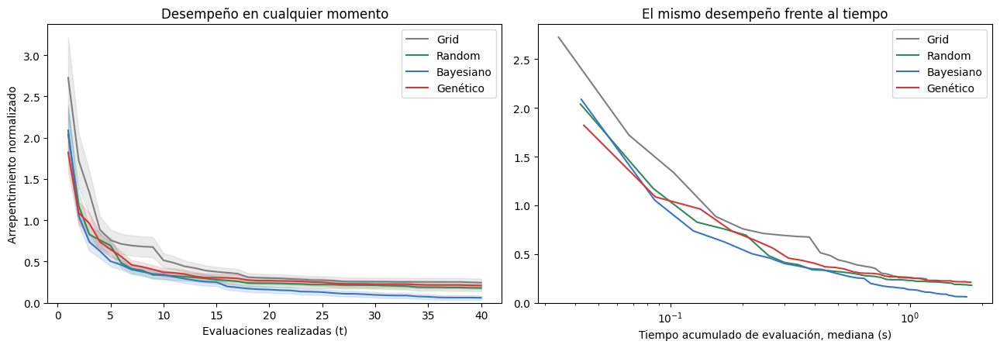
| Tras 5 evaluaciones | Tras 10 evaluaciones | Tras 20 evaluaciones | Tras 30 evaluaciones | Tras 40 evaluaciones | Área bajo la curva | |
|---|---|---|---|---|---|---|
| Grid | 0.758 | 0.514 | 0.299 | 0.255 | 0.244 | 0.491 |
| Random | 0.693 | 0.334 | 0.237 | 0.212 | 0.180 | 0.358 |
| Bayesiano | 0.503 | 0.341 | 0.159 | 0.096 | 0.060 | 0.279 |
| Genético | 0.647 | 0.369 | 0.268 | 0.225 | 0.210 | 0.378 |
umbral = OA.evaluations_to_threshold(arrepentimiento, threshold=0.10)
umbral.index = [A.OPTIMIZER_LABELS[o] for o in umbral.index]
umbral.columns = ['Evaluaciones necesarias (mediana)', 'Tiempo necesario (mediana, s)', 'Búsquedas que lo alcanzan (%)']
umbral.round(2)
| Evaluaciones necesarias (mediana) | Tiempo necesario (mediana, s) | Búsquedas que lo alcanzan (%) | |
|---|---|---|---|
| Grid | inf | inf | 44.16 |
| Random | 35.5 | 5.65 | 52.60 |
| Bayesiano | 15.0 | 0.69 | 86.36 |
| Genético | 39.0 | 9.83 | 51.95 |
La guía define el desempeño en cualquier momento como el mejor valor de la métrica encontrado hasta la evaluación t. El arrepentimiento normalizado es esa misma curva reescalada para poder promediar problemas con unidades distintas; para ver los valores sin transformar, la siguiente figura muestra dos casos, uno de clasificación y uno de regresión. El puntaje es el de la validación interna (F1-macro o RMSE) y se promedia entre los cinco pliegues externos.
fig = plots.plot_best_so_far(evaluaciones, [
('XGBoost, clasificación sin balanceo', 'clf', 'XGBoost', 'none'),
('Random Forest, regresión', 'reg', 'RandomForest', 'none')])
plt.show()
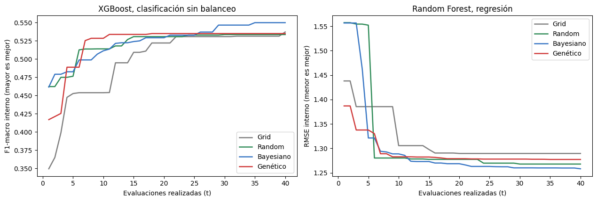
Con el arrepentimiento normalizado (0 es el mejor puntaje conocido y 1 el puntaje mediano de todas las evaluaciones), el bayesiano es el que más rápido baja y el único que sigue mejorando hasta el final. Tras 5 evaluaciones su arrepentimiento es de 0.50, frente a 0.65 del genético, 0.69 de Random y 0.76 de Grid; tras 20 es de 0.16 (contra 0.27, 0.24 y 0.30), y tras 40 de 0.06 (contra 0.21, 0.18 y 0.24). El área bajo la curva, que resume todo el recorrido, es de 0.28 para el bayesiano, 0.36 para Random, 0.38 para el genético y 0.49 para Grid. Para llegar a un arrepentimiento de 0.10, es decir, a quedar a una décima de la distancia entre el puntaje típico y el mejor, el bayesiano necesita una mediana de 15 evaluaciones y lo logra en el 86 % de las búsquedas; Random necesita 35.5 y lo logra en el 53 %, el genético 39 y el 52 %, y Grid no llega en la mayoría (solo lo alcanza el 44 %). En otras palabras, para una misma calidad de solución el bayesiano usa menos de la mitad de las evaluaciones, que es lo que la actividad pide demostrar con números. El panel derecho muestra lo mismo contra el tiempo: la curva del bayesiano queda por debajo de las otras casi todo el recorrido, así que su ventaja no se pierde por el costo extra de ajustar el modelo sustituto. Grid es el último en parte por cómo se diseñó: recorre su submuestra de la grilla en el orden natural de la grilla, de los valores bajos a los altos de cada hiperparámetro, y no tiene ningún criterio para empezar por las zonas buenas.
Los dos ejemplos en unidades originales cuentan lo mismo con más detalle. En XGBoost de clasificación el bayesiano termina con el mejor F1-macro interno (0.55) mientras que los otros tres se quedan cerca de 0.535; el genético sube más rápido al principio (llega a 0.53 con 7 evaluaciones) pero se estanca enseguida. En Random Forest de regresión, Random Search encuentra una zona buena de golpe en la sexta evaluación, el bayesiano llega a una zona parecida hacia la quinta y sigue refinando hasta el RMSE más bajo (1.26), y Grid se queda en 1.29.
# ¿Hay diferencias significativas entre los optimizadores? Cada bloque es un modelo con una técnica de balanceo
# y se compara el área bajo la curva de arrepentimiento (menor es mejor) promediada entre pliegues.
area = arrepentimiento.groupby(['task', 'model', 'balancing', 'optimizer'])['regret'].mean().unstack('optimizer')[OA.OPTIMIZER_ORDER]
area.columns = [A.OPTIMIZER_LABELS[o] for o in area.columns]
f_area = ST.friedman_test(area, higher_is_better=False)
print(f'Friedman sobre el área de arrepentimiento ({len(area)} bloques): chi2 = {f_area.statistic:.2f}, p = {f_area.p_value:.4g}')
cd_area = ST.critical_difference(4, len(area))
fig, ax = plt.subplots(figsize=(9, 2.6))
ST.plot_cd_diagram(f_area.avg_ranks, cd_area, ax=ax, title='Diagrama de diferencia crítica: calidad de la búsqueda')
plt.show()
nemenyi_area = ST.nemenyi_posthoc(area, higher_is_better=False)
nemenyi_area.round(4)
Friedman sobre el área de arrepentimiento (32 bloques): chi2 = 10.79, p = 0.01294
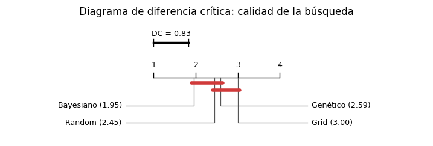
| Grid | Random | Bayesiano | Genético | |
|---|---|---|---|---|
| Grid | 1.0000 | 0.3266 | 0.0065 | 0.5893 |
| Random | 0.3266 | 1.0000 | 0.4080 | 0.9723 |
| Bayesiano | 0.0065 | 0.4080 | 1.0000 | 0.1936 |
| Genético | 0.5893 | 0.9723 | 0.1936 | 1.0000 |
# Calidad final de los modelos entrenados con cada optimizador (métrica del bucle externo)
clf_optimizador = clasificacion.pivot_table(index=['model', 'balancing'], columns='optimizer', values='f1_macro_mean')[OA.OPTIMIZER_ORDER]
reg_optimizador = regresion.pivot_table(index='model', columns='optimizer', values='rmse_mean')[OA.OPTIMIZER_ORDER]
for nombre, tabla, mejor_alto in [('clasificación (F1-macro)', clf_optimizador, True), ('regresión (RMSE)', reg_optimizador, False)]:
tabla = tabla.copy()
tabla.columns = [A.OPTIMIZER_LABELS[o] for o in tabla.columns]
f = ST.friedman_test(tabla, higher_is_better=mejor_alto)
print(f'{nombre}: Friedman con {len(tabla)} bloques, chi2 = {f.statistic:.2f}, p = {f.p_value:.4f}')
print(' rango promedio:', ', '.join(f'{k} {v:.2f}' for k, v in f.avg_ranks.items()), '\n')
clasificación (F1-macro): Friedman con 28 bloques, chi2 = 8.60, p = 0.0351
rango promedio: Grid 2.29, Bayesiano 2.29, Genético 2.36, Random 3.07
regresión (RMSE): Friedman con 7 bloques, chi2 = 6.60, p = 0.0858
rango promedio: Random 1.57, Bayesiano 2.29, Grid 3.00, Genético 3.14
La diferencia entre los métodos en desempeño en cualquier momento es estadísticamente significativa: la prueba de Friedman sobre el área bajo la curva de arrepentimiento, con 32 bloques (las 35 combinaciones de modelo y balanceo menos tres de Naive Bayes, en las que todas las evaluaciones dieron el mismo puntaje porque su único hiperparámetro, var_smoothing, no cambia las predicciones en ese rango), da χ² = 10.79 y p = 0.013. El diagrama de diferencia crítica ordena a los métodos por rango promedio (menor es mejor): bayesiano 1.95, Random 2.45, genético 2.59 y Grid 3.00, con una diferencia crítica de 0.83. Solo el bayesiano y Grid se separan de manera significativa (p de Nemenyi de 0.0065); entre los demás, incluidos el bayesiano frente a Random (p = 0.41) y frente al genético (p = 0.19), las diferencias no llegan a ser significativas. Con esta evidencia se puede afirmar que el bayesiano es mejor que Grid, pero no que supere de forma significativa a Random Search o al genético; lo que sí muestra es una tendencia clara (rango de 1.95 contra 2.45 y 2.59) y la diferencia en evaluaciones necesarias que se vio antes.
Sobre la calidad de los modelos finales (la métrica del bucle externo), el efecto del optimizador es más débil y no tiene un ganador consistente. En clasificación sí hay diferencias (Friedman con 28 bloques: χ² = 8.60, p = 0.035), pero a favor de Grid, el bayesiano y el genético (rangos de 2.29, 2.29 y 2.36) frente a Random (3.07); en regresión, con solo 7 bloques, no hay diferencias significativas (p = 0.086) y el orden es otro: Random queda primero (1.57), seguido del bayesiano (2.29), Grid (3.00) y el genético (3.14). Que el método que encuentra antes las buenas soluciones no siempre dé el mejor modelo en el bucle externo es esperable: con 40 evaluaciones los cuatro llegan a zonas de calidad parecida y, a partir de ahí, la diferencia entre ellos es menor que el ruido de pasar de la validación interna a la prueba externa.
Diversidad genética del algoritmo genético#
diversidad = OA.genetic_diversity_summary(generaciones, collapse_threshold=0.05)
fig = plots.plot_genetic_diversity(diversidad['by_generation'])
plt.show()
print(f"Búsquedas genéticas analizadas: {diversidad['n_searches']}")
print(f"Proporción cuya población colapsa (distancia media < 0.05) antes de agotar el presupuesto: {diversidad['share_collapsed']:.1%}")
print(f"Generación promedio en que colapsa: {diversidad['mean_collapse_generation']:.1f}")
print(f"Mejora promedio de la mejor aptitud después de colapsar: {diversidad['gain_after_collapse']:.4f}")
diversidad['by_generation'].rename(columns={
'diversidad_pares': 'Distancia media entre pares', 'diversidad_por_gen': 'Desviación por gen',
'configuraciones_distintas': 'Configuraciones distintas', 'busquedas': 'Búsquedas'}).round(3)
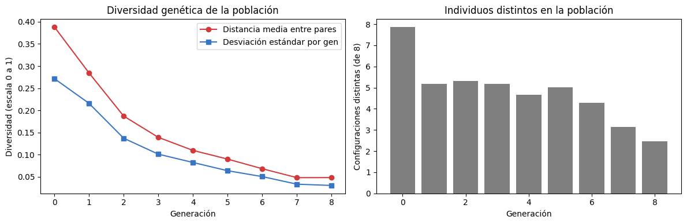
Búsquedas genéticas analizadas: 175
Proporción cuya población colapsa (distancia media < 0.05) antes de agotar el presupuesto: 60.0%
Generación promedio en que colapsa: 3.9
Mejora promedio de la mejor aptitud después de colapsar: 0.0044
| Distancia media entre pares | Desviación por gen | Configuraciones distintas | Búsquedas | |
|---|---|---|---|---|
| generation | ||||
| 0 | 0.389 | 0.272 | 7.857 | 175 |
| 1 | 0.285 | 0.216 | 5.177 | 175 |
| 2 | 0.187 | 0.137 | 5.309 | 175 |
| 3 | 0.139 | 0.101 | 5.189 | 175 |
| 4 | 0.109 | 0.082 | 4.663 | 175 |
| 5 | 0.090 | 0.064 | 5.017 | 175 |
| 6 | 0.068 | 0.050 | 4.291 | 175 |
| 7 | 0.048 | 0.033 | 3.149 | 175 |
| 8 | 0.048 | 0.030 | 2.475 | 80 |
La población del algoritmo genético pierde diversidad muy rápido. La distancia promedio entre individuos (en la escala de 0 a 1 de los genes) baja de 0.39 en la generación 0 (la población inicial) a 0.14 en la generación 3 y a 0.05 en la 7, una caída de casi 90 %, y la desviación por gen pasa de 0.27 a 0.03. En individuos distintos, de los 8 que tiene la población quedan en promedio unos 5 en la generación 1 y 2.5 en la 8. En el 60 % de las 175 búsquedas genéticas la población colapsa (distancia promedio menor que 0.05) antes de agotar el presupuesto de 40 evaluaciones, en promedio hacia la generación 4, y en esas búsquedas la mejor aptitud solo mejora 0.0044 después del colapso: cuando los individuos se parecen tanto, el cruce casi no produce nada nuevo y solo la mutación sigue explorando.
Esta es la señal de convergencia prematura que la guía pide vigilar, y es consistente con el desempeño del genético: arranca bien (es el método con menor arrepentimiento en la primera evaluación, 1.83 contra entre 2.0 y 2.7 de los demás) pero se estanca y termina tercero, con un arrepentimiento de 0.21 tras 40 evaluaciones. La causa más probable es la combinación de una población pequeña (8 individuos), un torneo de tamaño 3 con elitismo, que ejerce mucha presión de selección, y un presupuesto que solo alcanza para unas 8 generaciones. Una población mayor o una mutación más alta mantendrían la diversidad por más tiempo, pero reducirían las generaciones disponibles y no se probaron.
Estabilidad frente a la semilla#
# Parte A: aleatoriedad del modelo (10 semillas, mismos hiperparámetros elegidos en la corrida)
semillas_modelo = pd.read_csv(config.EXPERIMENTS_DIR / 'seed_sensitivity_models.csv')
semillas_modelo['modelo'] = semillas_modelo['modelo'].map(A.MODEL_LABELS)
semillas_modelo = semillas_modelo.rename(columns={'tarea': 'Tarea', 'modelo': 'Modelo', 'metrica': 'Métrica', 'media': 'Media',
'desviacion': 'Desviación', 'minimo': 'Mínimo', 'maximo': 'Máximo'})
semillas_modelo['Tarea'] = semillas_modelo['Tarea'].map({'clf': 'Clasificación', 'reg': 'Regresión'})
semillas_modelo.set_index(['Tarea', 'Modelo'])[['Métrica', 'Media', 'Desviación', 'Mínimo', 'Máximo']].round(4)
| Métrica | Media | Desviación | Mínimo | Máximo | ||
|---|---|---|---|---|---|---|
| Tarea | Modelo | |||||
| Clasificación | KNN | F1-macro | 0.8051 | 0.0094 | 0.7905 | 0.8178 |
| Random Forest | F1-macro | 0.6698 | 0.0074 | 0.6601 | 0.6855 | |
| Árbol de decisión | F1-macro | 0.6140 | 0.0042 | 0.6096 | 0.6216 | |
| Regresión logística | F1-macro | 0.7098 | 0.0248 | 0.6474 | 0.7459 | |
| XGBoost | F1-macro | 0.6303 | 0.0142 | 0.6096 | 0.6494 | |
| SVM | F1-macro | 0.5484 | 0.0178 | 0.5266 | 0.5833 | |
| Naive Bayes | F1-macro | 0.6730 | 0.0622 | 0.5451 | 0.7553 | |
| Regresión | Ridge | RMSE | 1.3175 | 0.0000 | 1.3175 | 1.3175 |
| SVR | RMSE | 1.3143 | 0.0000 | 1.3143 | 1.3143 | |
| KNN | RMSE | 1.3727 | 0.0000 | 1.3727 | 1.3727 | |
| XGBoost | RMSE | 1.5616 | 0.0399 | 1.5013 | 1.6154 | |
| Random Forest | RMSE | 1.5019 | 0.0288 | 1.4586 | 1.5414 | |
| Árbol de decisión | RMSE | 1.7293 | 0.0214 | 1.6958 | 1.7506 | |
| Lasso | RMSE | 1.6917 | 0.0000 | 1.6917 | 1.6917 |
# Parte B: aleatoriedad del optimizador (5 semillas por método estocástico)
semillas_opt = pd.read_csv(config.EXPERIMENTS_DIR / 'seed_sensitivity_optimizers.csv')
agrupado = semillas_opt.groupby(['tarea', 'modelo', 'optimizador'])
resumen_opt = agrupado['valor'].agg(['mean', 'std', 'min', 'max', 'count'])
resumen_opt['distintas'] = agrupado['mejores_hiperparametros_ultimo_pliegue'].nunique() # configuraciones distintas elegidas
resumen_opt.columns = ['Media', 'Desviación', 'Mínimo', 'Máximo', 'Semillas', 'Configuraciones distintas (último pliegue)']
resumen_opt.index = pd.MultiIndex.from_tuples(
[({'clf': 'Clasificación', 'reg': 'Regresión'}[t], A.MODEL_LABELS[m], A.OPTIMIZER_LABELS[o]) for t, m, o in resumen_opt.index],
names=['Tarea', 'Modelo', 'Optimizador'])
resumen_opt.round(4)
| Media | Desviación | Mínimo | Máximo | Semillas | Configuraciones distintas (último pliegue) | |||
|---|---|---|---|---|---|---|---|---|
| Tarea | Modelo | Optimizador | ||||||
| Clasificación | Árbol de decisión | Bayesiano | 0.5172 | 0.0395 | 0.4477 | 0.5415 | 5 | 5 |
| Genético | 0.5071 | 0.0388 | 0.4566 | 0.5489 | 5 | 5 | ||
| Grid | 0.4673 | NaN | 0.4673 | 0.4673 | 1 | 1 | ||
| Random | 0.5149 | 0.0187 | 0.5001 | 0.5431 | 5 | 5 | ||
| KNN | Bayesiano | 0.6225 | 0.0594 | 0.5565 | 0.7078 | 5 | 5 | |
| Genético | 0.6083 | 0.0499 | 0.5235 | 0.6438 | 5 | 5 | ||
| Grid | 0.6668 | NaN | 0.6668 | 0.6668 | 1 | 1 | ||
| Random | 0.6380 | 0.0549 | 0.5565 | 0.7084 | 5 | 4 | ||
| Regresión | KNN | Bayesiano | 1.2537 | 0.0019 | 1.2515 | 1.2564 | 5 | 2 |
| Genético | 1.2472 | 0.0239 | 1.2046 | 1.2608 | 5 | 4 | ||
| Grid | 1.2558 | NaN | 1.2558 | 1.2558 | 1 | 1 | ||
| Random | 1.2688 | 0.0126 | 1.2547 | 1.2839 | 5 | 5 | ||
| Ridge | Bayesiano | 1.2148 | 0.0032 | 1.2122 | 1.2193 | 5 | 5 | |
| Genético | 1.2142 | 0.0287 | 1.1808 | 1.2496 | 5 | 5 | ||
| Grid | 1.3184 | NaN | 1.3184 | 1.3184 | 1 | 1 | ||
| Random | 1.1987 | 0.0167 | 1.1853 | 1.2261 | 5 | 5 |
# Reproducibilidad: se repiten cuatro combinaciones con la misma semilla y se comparan con la tabla maestra
filas = []
for tarea, modelo, balanceo, optimizador in [('clf', 'KNN', 'smote', 'genetic'), ('clf', 'NaiveBayes', 'adasyn', 'bayesian'),
('reg', 'Ridge', 'none', 'genetic'), ('reg', 'Lasso', 'none', 'bayesian')]:
especificacion = (CLASSIFIER_BY_NAME if tarea == 'clf' else REGRESSOR_BY_NAME)[modelo]
objetivo = ds.y_clf if tarea == 'clf' else ds.y_reg
clave = 'f1_macro' if tarea == 'clf' else 'rmse'
repeticion = run_nested_cv(especificacion, ds.X, objetivo, tarea, balanceo, optimizador, budgets=config.FULL_BUDGETS)
nuevo = np.mean([fr.metrics[clave] for fr in repeticion.fold_results])
original = master.loc[master['run_id'] == f'{tarea}_{modelo}_{balanceo}_{optimizador}', f'{clave}_mean'].iloc[0]
filas.append({'Combinación': f'{A.MODEL_LABELS[modelo]} · {A.BALANCING_LABELS[balanceo]} · {A.OPTIMIZER_LABELS[optimizador]}',
'Métrica': 'F1-macro' if tarea == 'clf' else 'RMSE', 'Corrida original': original, 'Repetición': nuevo,
'Diferencia absoluta': abs(original - nuevo)})
pd.DataFrame(filas).set_index('Combinación')
| Métrica | Corrida original | Repetición | Diferencia absoluta | |
|---|---|---|---|---|
| Combinación | ||||
| KNN · SMOTE · Genético | F1-macro | 0.678567 | 0.678567 | 0.000000e+00 |
| Naive Bayes · ADASYN · Bayesiano | F1-macro | 0.525928 | 0.525928 | 0.000000e+00 |
| Ridge · Ninguno · Genético | RMSE | 1.202028 | 1.202028 | 2.220446e-16 |
| Lasso · Ninguno · Bayesiano | RMSE | 1.601410 | 1.601410 | 0.000000e+00 |
La aleatoriedad del modelo (parte A) mueve poco el resultado en comparación con las diferencias entre modelos. Con diez semillas, la desviación estándar del F1-macro agrupado es de entre 0.004 y 0.025 en seis de los siete clasificadores y de 0.062 en Naive Bayes, cuya única fuente de azar es el remuestreo con ADASYN (KNN, que es determinista, varía 0.009 solo por SMOTE). En regresión, Ridge, SVR, KNN y Lasso no cambian nada (desviación de 0, son deterministas, lo que sirve de control) y los modelos con aleatoriedad varían 0.021 (árbol), 0.029 (Random Forest) y 0.040 (XGBoost) de RMSE. Así, la diferencia entre KNN (0.805) y Random Forest (0.670) en F1-macro, o entre SVR y XGBoost en RMSE (1.31 contra 1.56), es mucho mayor que lo que mueve cualquier semilla. Entre los modelos del grupo del medio la historia cambia: Random Forest (0.670) y Naive Bayes (0.673) están a una diferencia menor que la variación de una semilla de Naive Bayes, y entre SVR y Ridge (1.314 y 1.317) la diferencia es de tres milésimas con un azar de cero, de modo que la incertidumbre viene de los datos y no del algoritmo. La variabilidad entre pliegues (desviaciones de entre 0.14 y 0.21 de F1-macro y de entre 0.5 y 0.9 de RMSE) es mucho mayor que la de las semillas, y por eso hacen falta las pruebas de la sección siguiente.
La aleatoriedad del optimizador (parte B) importa más. Con cinco semillas, el resultado que se obtiene con Random, el bayesiano o el genético varía entre 0.02 y 0.06 de F1-macro en clasificación (árbol de decisión y KNN) y entre 0.002 y 0.029 de RMSE en regresión (KNN y Ridge), márgenes del mismo tamaño que las diferencias entre modelos vecinos. Casi siempre cada semilla termina en una configuración distinta (5 diferentes en 5 semillas, en 9 de las 12 combinaciones), pero con un desempeño parecido, lo que indica que hay muchas configuraciones casi equivalentes, una meseta, y no un único óptimo. Las excepciones son el bayesiano en la regresión de KNN, que solo encontró 2 configuraciones distintas y varió apenas 0.002, y el genético en esa misma tarea y Random en KNN de clasificación, con 4 de 5. En regresión el bayesiano es también el más estable (desviaciones de entre 0.002 y 0.003) y el genético el menos (entre 0.024 y 0.029). Grid, al ser determinista, da siempre lo mismo, pero no es mejor: gana en KNN de clasificación (0.667) y pierde en Ridge (1.318 contra entre 1.20 y 1.22 de los otros tres), porque su grilla de cuatro valores (0.001, 0.1, 10 y 1000) se salta la zona buena de alpha, que está cerca de 70.
Para comprobar que todo esto es reproducible se repitieron cuatro combinaciones con la misma semilla (42): las métricas coinciden con las de la tabla maestra en todos los decimales (diferencias de entre 0 y 2·10⁻¹⁶, es decir, error de redondeo), incluidas las del algoritmo genético y la optimización bayesiana, lo que confirma que la semilla global controla todas las fuentes de azar.
Optimización multi-fidelidad#
Todas las búsquedas anteriores evalúan cada configuración con el costo completo del modelo, incluso las que desde el comienzo se ven mal. El Successive Halving (Jamieson & Talwalkar, 2016) reparte mejor ese costo: empieza con muchas configuraciones entrenadas con un presupuesto pequeño, descarta las peores y le da más presupuesto a las que van quedando. Se implementó para Random Forest y XGBoost, que son los modelos que más tiempo consumen en la corrida de los 140 modelos.
La fidelidad es el número de árboles. Entrenar un bosque cuesta aproximadamente lo mismo por cada árbol, y con pocos árboles una configuración ya muestra si es prometedora, aunque su puntaje sea más ruidoso. El factor de reducción es 3: se arranca con 27 configuraciones entrenadas con 11 árboles, las 9 mejores pasan a 33 árboles, las 3 mejores a 100 y la mejor termina con 300. Con ese factor cada ronda cuesta casi lo mismo (unos 300 árboles por pliegue interno) y la búsqueda completa gasta 3582 árboles por pliegue externo, lo que equivale a entrenar cuatro modelos de 300 árboles. Para saber si ahorrar presupuesto así vale la pena se compara con dos variantes de Random Search: una que gasta el mismo costo en árboles (4 configuraciones completas) y la estándar de 40 evaluaciones, con entre 50 y 300 árboles. Cada método se repitió con tres semillas. Hyperband (Li et al., 2018) generaliza esta idea repitiendo el esquema con distintos números de configuraciones iniciales; aquí se usó la versión básica.
mf = pd.read_csv(config.EXPERIMENTS_DIR / 'multifidelity.csv')
resumen_mf = mf.groupby(['tarea', 'modelo', 'metodo']).agg(
metrica=('metrica_externa', 'mean'), desviacion=('metrica_externa', 'std'),
tiempo=('tiempo_busqueda_s', 'mean'), costo=('costo_arboles_por_pliegue', 'mean'))
resumen_mf.columns = ['Métrica externa', 'Desviación entre semillas', 'Tiempo de búsqueda (s)', 'Costo en árboles por pliegue']
resumen_mf.index = pd.MultiIndex.from_tuples(
[({'clf': 'Clasificación (F1-macro)', 'reg': 'Regresión (RMSE)'}[t], A.MODEL_LABELS[m], k) for t, m, k in resumen_mf.index],
names=['Tarea', 'Modelo', 'Método'])
resumen_mf.round(3)
| Métrica externa | Desviación entre semillas | Tiempo de búsqueda (s) | Costo en árboles por pliegue | |||
|---|---|---|---|---|---|---|
| Tarea | Modelo | Método | ||||
| Clasificación (F1-macro) | Random Forest | Random (40 evaluaciones) | 0.483 | 0.005 | 102.336 | NaN |
| Random (mismo costo) | 0.484 | 0.011 | 16.604 | 3600.0 | ||
| Successive Halving | 0.492 | 0.005 | 18.462 | 3582.0 | ||
| XGBoost | Random (40 evaluaciones) | 0.528 | 0.022 | 35.706 | NaN | |
| Random (mismo costo) | 0.503 | 0.019 | 5.819 | 3600.0 | ||
| Successive Halving | 0.513 | 0.016 | 12.913 | 3582.0 | ||
| Regresión (RMSE) | Random Forest | Random (40 evaluaciones) | 1.295 | 0.005 | 78.928 | NaN |
| Random (mismo costo) | 1.374 | 0.083 | 13.053 | 3600.0 | ||
| Successive Halving | 1.270 | 0.006 | 14.610 | 3582.0 | ||
| XGBoost | Random (40 evaluaciones) | 1.306 | 0.044 | 32.874 | NaN | |
| Random (mismo costo) | 1.363 | 0.007 | 5.836 | 3600.0 | ||
| Successive Halving | 1.311 | 0.019 | 7.632 | 3582.0 |
Successive Halving gasta 3582 árboles por pliegue externo, la sexta parte de lo que gasta Random Search con sus 40 evaluaciones (unos 21 mil árboles por pliegue, con 175 árboles de media por evaluación) y casi lo mismo que Random con el mismo costo (3600, cuatro configuraciones completas). Frente a esta última comparación, la justa, Successive Halving gana en los cuatro casos: sube el F1-macro de 0.484 a 0.492 en Random Forest y de 0.503 a 0.513 en XGBoost, y baja el RMSE de 1.374 a 1.270 en Random Forest y de 1.363 a 1.311 en XGBoost. Frente a Random Search estándar, que gasta seis veces más, consigue resultados parecidos: mejores en Random Forest (0.492 contra 0.483 de F1-macro y 1.270 contra 1.295 de RMSE) y peores por poco en XGBoost (0.513 contra 0.528 y 1.311 contra 1.306), con el tiempo de búsqueda dividido por entre 2.8 y 5.5 (18.5 s contra 102.3 s en Random Forest de clasificación, 12.9 s contra 35.7 s en XGBoost de clasificación, 14.6 s contra 78.9 s y 7.6 s contra 32.9 s en regresión). Conviene ser cautos: con tres semillas, la desviación entre semillas va de 0.005 a 0.083, así que diferencias de menos de 0.02 de F1-macro o de 0.05 de RMSE no son concluyentes. Lo que sí se puede afirmar es que reasignar el presupuesto hacia las configuraciones prometedoras permite acercarse a la calidad de la búsqueda completa con una fracción del costo.
Un detalle: el costo en árboles no es lo mismo que el tiempo. Con el mismo costo en árboles, Successive Halving tardó más que Random (18.5 s contra 16.6 s en Random Forest, 12.9 s contra 5.8 s en XGBoost de clasificación), porque entrena 40 modelos pequeños, de 11 y 33 árboles, en lugar de 4 grandes, y cada ajuste tiene un costo fijo de preparar los datos, balancear y escalar.
Comparación estadística entre modelos#
Con 140 modelos hay 9730 pares posibles. Si se aplicara una prueba como DeLong o Diebold-Mariano a cada uno, con un nivel de significancia de 0.05, solo por azar se esperarían cerca de 487 falsos positivos. Por eso no se comparan todos los pares: primero se hace una prueba global que dice si hay alguna diferencia entre los modelos, y solo después se pasa a comparaciones dirigidas entre un grupo pequeño de candidatos, corrigiendo los p-valores por comparaciones múltiples. Las pruebas de regresión se hicieron sobre los 240 errores mensuales fuera de muestra (no sobre las cinco métricas por pliegue), y las de clasificación sobre los pliegues externos y sobre las predicciones apiladas.
La secuencia en clasificación es la prueba ómnibus de Friedman (1937), el post-hoc de Nemenyi (1963) con el diagrama de diferencia crítica (Demšar, 2006), las comparaciones dirigidas de DeLong (DeLong et al., 1988) con el ajuste de Holm (1979) o el de Benjamini y Hochberg (1995), y el tamaño del efecto con el delta de Cliff (1993). En regresión es el Model Confidence Set (Hansen et al., 2011) sobre todos los modelos, el test de Giacomini y White (2006) entre los finalistas (el de Clark y West, 2007, no aplica porque ningún modelo es un caso particular de otro), el de Diebold y Mariano (1995) con la corrección de Harvey et al. (1997) como confirmación puntual, con intervalos de bootstrap estacionario (Politis & Romano, 1994), y la d de Cohen (1988) como tamaño del efecto. Para controlar el data snooping se agregan la prueba de habilidad predictiva superior de Hansen (2005) y el Reality Check de White (2000).
Clasificación#
folds = A.load_folds()
f1_folds = folds[(folds['task'] == 'clf') & (folds['metric'] == 'f1_macro')]
# (a) Versión estricta: el mejor resultado de cada uno de los siete modelos en los cinco pliegues externos
estricto = pd.DataFrame({
A.MODEL_LABELS[m]: folds[(folds['run_id'] == f['run_id']) & (folds['metric'] == 'f1_macro')].sort_values('fold')['value'].values
for m, f in mejores_clf.iterrows()})
friedman_estricto = ST.friedman_test(estricto)
# (b) Versión ampliada: se usan las 16 variantes (balanceo y optimizador) de cada modelo en cada pliegue (80 bloques),
# para no depender de haber elegido solo la mejor variante de cada modelo
ampliado = f1_folds.pivot_table(index=['balancing', 'optimizer', 'fold'], columns='model', values='value')
ampliado.columns = [A.MODEL_LABELS[m] for m in ampliado.columns]
friedman_ampliado = ST.friedman_test(ampliado)
# (c) El universo completo: los 112 modelos de clasificación en los cinco pliegues
universo = f1_folds.pivot_table(index='fold', columns='run_id', values='value')
friedman_universo = ST.friedman_test(universo)
pd.DataFrame({
'Bloques': [len(estricto), len(ampliado), len(universo)],
'Modelos comparados': [estricto.shape[1], ampliado.shape[1], universo.shape[1]],
'Estadístico chi2': [friedman_estricto.statistic, friedman_ampliado.statistic, friedman_universo.statistic],
'Grados de libertad': [friedman_estricto.df, friedman_ampliado.df, friedman_universo.df],
'p-valor': [friedman_estricto.p_value, friedman_ampliado.p_value, friedman_universo.p_value],
}, index=['(a) Mejor variante de cada modelo', '(b) Todas las variantes de cada modelo', '(c) Los 112 modelos']).round(4)
| Bloques | Modelos comparados | Estadístico chi2 | Grados de libertad | p-valor | |
|---|---|---|---|---|---|
| (a) Mejor variante de cada modelo | 5 | 7 | 3.6834 | 6 | 0.7194 |
| (b) Todas las variantes de cada modelo | 80 | 7 | 47.3571 | 6 | 0.0000 |
| (c) Los 112 modelos | 5 | 112 | 137.0076 | 111 | 0.0475 |
La prueba de Friedman se aplicó de tres maneras, porque la respuesta depende de cuántos bloques se usen. Con los siete mejores modelos y los cinco pliegues (versión estricta) no se rechaza la igualdad: χ² = 3.68 con 6 grados de libertad y p = 0.72. Pero cinco bloques dan muy poca potencia, y además solo se está comparando a los ganadores de cada modelo. Cuando se usan las 16 variantes de cada modelo en cada pliegue (80 bloques) el resultado es claro: χ² = 47.36, 6 grados de libertad y p < 0.0001, es decir, no todos los modelos rinden igual. Con los 112 modelos y los cinco pliegues el resultado es marginal (χ² = 137.0, 111 grados de libertad, p = 0.048). Se concluye que sí hay diferencias entre los modelos cuando se mira el panorama completo, pero que con cinco pliegues no hay potencia para distinguir entre los mejores. Por eso el análisis post-hoc se hace con la versión ampliada.
# Prueba post-hoc de Nemenyi y diagrama de diferencia crítica sobre la versión ampliada
cd_clf = ST.critical_difference(ampliado.shape[1], len(ampliado))
print('Rango promedio de cada modelo (menor es mejor):')
print(friedman_ampliado.avg_ranks.round(2).to_string())
print(f'Diferencia crítica de Nemenyi (alfa = 0.05): {cd_clf:.2f}')
fig, ax = plt.subplots(figsize=(10, 3.4))
ST.plot_cd_diagram(friedman_ampliado.avg_ranks, cd_clf, ax=ax, title='Diagrama de diferencia crítica (clasificación, 80 bloques)')
plt.show()
nemenyi_clf = ST.nemenyi_posthoc(ampliado)
print('p-valores de Nemenyi entre cada par de modelos:')
nemenyi_clf.round(3)
Rango promedio de cada modelo (menor es mejor):
Random Forest 3.39
KNN 3.41
XGBoost 3.58
Naive Bayes 3.64
Árbol de decisión 4.37
Regresión logística 4.57
SVM 5.04
Diferencia crítica de Nemenyi (alfa = 0.05): 1.01
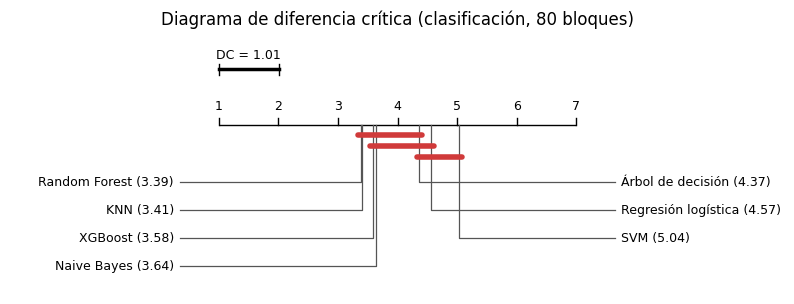
p-valores de Nemenyi entre cada par de modelos:
| Árbol de decisión | KNN | Regresión logística | Naive Bayes | Random Forest | SVM | XGBoost | |
|---|---|---|---|---|---|---|---|
| Árbol de decisión | 1.000 | 0.076 | 0.997 | 0.328 | 0.065 | 0.442 | 0.241 |
| KNN | 0.076 | 1.000 | 0.013 | 0.995 | 1.000 | 0.000 | 0.999 |
| Regresión logística | 0.997 | 0.013 | 1.000 | 0.092 | 0.010 | 0.817 | 0.059 |
| Naive Bayes | 0.328 | 0.995 | 0.092 | 1.000 | 0.992 | 0.001 | 1.000 |
| Random Forest | 0.065 | 1.000 | 0.010 | 0.992 | 1.000 | 0.000 | 0.998 |
| SVM | 0.442 | 0.000 | 0.817 | 0.001 | 0.000 | 1.000 | 0.000 |
| XGBoost | 0.241 | 0.999 | 0.059 | 1.000 | 0.998 | 0.000 | 1.000 |
Con 7 modelos y 80 bloques, la diferencia crítica de Nemenyi es de 1.01 en rango promedio. Los rangos (menor es mejor) son 3.39 para Random Forest, 3.41 para KNN, 3.58 para XGBoost, 3.64 para Naive Bayes, 4.37 para el árbol de decisión, 4.57 para la regresión logística y 5.04 para SVM. Los cuatro primeros no se pueden distinguir entre sí, y el árbol de decisión tampoco se distingue de Random Forest (4.37 − 3.39 = 0.98, menos que 1.01). SVM es el único claramente peor que el primer grupo: se diferencia de Random Forest, KNN, XGBoost (p < 0.001) y Naive Bayes (p = 0.001), pero no del árbol ni de la regresión logística. La regresión logística es significativamente peor que KNN (p = 0.013) y que Random Forest (p = 0.010), aunque no que XGBoost (p = 0.059).
En otras palabras, KNN, Random Forest, XGBoost y Naive Bayes son equivalentes en rango, a pesar de que KNN tenga el mejor F1-macro en el cuadro de resultados: su ventaja en el mejor de sus 16 variantes no es consistente cuando se miran todas. Este diagrama reemplaza a las 21 comparaciones por pares entre los siete modelos, y para los 112 modelos reemplazaría a las 6216 que habría que hacer.
# Comparaciones dirigidas con DeLong entre los tres modelos con mejor rango: AUC de la clase Alto sobre las predicciones agrupadas
mejores_rango = list(friedman_ampliado.avg_ranks.index[:3])
inverso = {A.MODEL_LABELS[m]: m for m in mejores_clf.index}
y_alto = oof_clf[inverso[mejores_rango[0]]]['y_true']
probabilidad_alto = {nombre: oof_clf[inverso[nombre]]['y_proba'][:, A.ALTO] for nombre in mejores_rango}
filas = []
for i in range(3):
for j in range(i + 1, 3):
a, b = mejores_rango[i], mejores_rango[j]
r = ST.delong_test(y_alto, probabilidad_alto[a], probabilidad_alto[b], A.ALTO)
delta = ST.cliffs_delta(estricto[a], estricto[b])
filas.append({'Modelo A': a, 'Modelo B': b, 'AUC A': r['auc_a'], 'AUC B': r['auc_b'], 'Diferencia': r['diff'],
'IC 95 %': f"[{r['ci95'][0]:.3f}, {r['ci95'][1]:.3f}]", 'p crudo': r['p_value'],
'Delta de Cliff (F1 por pliegue)': delta})
delong = pd.DataFrame(filas)
delong['p ajustado (Holm)'] = ST.adjust_pvalues(delong['p crudo'].values, 'holm')
delong['p ajustado (BH)'] = ST.adjust_pvalues(delong['p crudo'].values, 'fdr_bh')
delong.set_index(['Modelo A', 'Modelo B']).round(3)
| AUC A | AUC B | Diferencia | IC 95 % | p crudo | Delta de Cliff (F1 por pliegue) | p ajustado (Holm) | p ajustado (BH) | ||
|---|---|---|---|---|---|---|---|---|---|
| Modelo A | Modelo B | ||||||||
| Random Forest | KNN | 0.917 | 0.951 | -0.035 | [-0.097, 0.028] | 0.275 | -0.24 | 0.635 | 0.413 |
| XGBoost | 0.917 | 0.922 | -0.006 | [-0.061, 0.050] | 0.844 | 0.44 | 0.844 | 0.844 | |
| KNN | XGBoost | 0.951 | 0.922 | 0.029 | [-0.017, 0.075] | 0.212 | 0.48 | 0.635 | 0.413 |
Entre los tres modelos con mejor rango (Random Forest, KNN y XGBoost) se compararon los AUC de la categoría Alto con la prueba de DeLong sobre las 240 predicciones apiladas. Las diferencias son pequeñas y ninguna es significativa: KNN supera a XGBoost en 0.029 de AUC (IC 95 % de −0.017 a 0.075, p = 0.212), Random Forest queda 0.035 por debajo de KNN (IC de −0.097 a 0.028, p = 0.275) y 0.006 por debajo de XGBoost (p = 0.844). Con la corrección de Holm los p-valores ajustados son 0.635, 0.844 y 0.635 (con Benjamini-Hochberg, 0.413, 0.844 y 0.413), así que no hay evidencia de que alguno de los tres distinga mejor los meses Alto. Hay que tener presente que DeLong supone observaciones independientes y los pronósticos mensuales están autocorrelacionados, de modo que los p-valores son, si acaso, demasiado optimistas, y aun así no resultan significativos.
El delta de Cliff sobre el F1-macro por pliegue sí muestra efectos medianos o grandes (−0.24 entre Random Forest y KNN, 0.44 entre Random Forest y XGBoost y 0.48 entre KNN y XGBoost), pero con solo cinco pliegues ese tamaño de efecto es muy inestable y apenas confirma el orden que ya mostraba el cuadro: KNN, Random Forest y XGBoost.
# Intervalos de confianza al 95 % del AUC de la clase Alto y del RMSE de cada modelo de regresión, calculados de dos maneras:
# con el bootstrap estacionario (bloques de 12 meses en promedio), que respeta la dependencia entre meses seguidos, y con el
# BCa de remuestreo independiente, que la ignora y se incluye solo para ver cuánto cambia el intervalo.
from scipy.stats import bootstrap
def auc_alto(muestra):
# AUC de la clase Alto; si una remuestra no tiene meses Alto el AUC no está definido
return roc_auc_score(muestra[:, 0], muestra[:, 1]) if 0 < muestra[:, 0].sum() < len(muestra) else np.nan
def bca_auc(indicadora, probabilidad):
r = bootstrap((indicadora, probabilidad), lambda a, b: auc_alto(np.column_stack([a, b])), paired=True, vectorized=False,
n_resamples=2000, method='BCa', random_state=config.SEED)
return r.confidence_interval.low, r.confidence_interval.high
def bca_rmse(cuadrados):
r = bootstrap((cuadrados,), lambda x, axis: np.sqrt(np.mean(x, axis=axis)), n_resamples=2000, method='BCa', random_state=config.SEED)
return r.confidence_interval.low, r.confidence_interval.high
filas = []
for modelo, p in oof_clf.items():
indicadora, probabilidad = (p['y_true'] == A.ALTO).astype(int), p['y_proba'][:, A.ALTO]
punto, bajo, alto = ST.bootstrap_interval(np.column_stack([indicadora, probabilidad]), auc_alto, mean_block=12, n_boot=1000)
bca_bajo, bca_alto = bca_auc(indicadora, probabilidad)
filas.append({'Modelo': A.MODEL_LABELS[modelo], 'Métrica': 'AUC (Alto)', 'Estimación': punto, 'Estacionario inferior': bajo,
'Estacionario superior': alto, 'BCa inferior': bca_bajo, 'BCa superior': bca_alto})
referencias_rmse = {A.MODEL_LABELS[m]: errores_reg[m]['error'] ** 2 for m in mejores_reg.index}
for nombre in ['Persistencia', 'Estacional', 'SARIMA']:
referencias_rmse[nombre] = ((referencias_reg['y_true'] - referencias_reg[nombre]) ** 2).values
for nombre, cuadrados in referencias_rmse.items():
punto, bajo, alto = ST.bootstrap_interval(cuadrados, lambda a: np.sqrt(a.mean()), mean_block=12, n_boot=2000)
bca_bajo, bca_alto = bca_rmse(cuadrados)
filas.append({'Modelo': nombre, 'Métrica': 'RMSE', 'Estimación': punto, 'Estacionario inferior': bajo,
'Estacionario superior': alto, 'BCa inferior': bca_bajo, 'BCa superior': bca_alto})
intervalos = pd.DataFrame(filas).set_index(['Métrica', 'Modelo'])
intervalos.round(3)
| Estimación | Estacionario inferior | Estacionario superior | BCa inferior | BCa superior | ||
|---|---|---|---|---|---|---|
| Métrica | Modelo | |||||
| AUC (Alto) | KNN | 0.951 | 0.770 | 0.993 | 0.810 | 0.989 |
| Random Forest | 0.917 | 0.822 | 0.971 | 0.809 | 0.960 | |
| Árbol de decisión | 0.517 | 0.437 | 0.692 | 0.452 | 0.656 | |
| Regresión logística | 0.912 | 0.594 | 0.984 | 0.733 | 0.975 | |
| XGBoost | 0.922 | 0.827 | 0.968 | 0.867 | 0.959 | |
| SVM | 0.672 | 0.522 | 0.946 | 0.559 | 0.791 | |
| Naive Bayes | 0.819 | 0.450 | 0.951 | 0.628 | 0.930 | |
| RMSE | Ridge | 1.317 | 0.906 | 1.821 | 1.101 | 1.718 |
| SVR | 1.314 | 0.932 | 1.784 | 1.106 | 1.687 | |
| KNN | 1.373 | 0.923 | 1.920 | 1.123 | 1.819 | |
| XGBoost | 1.568 | 0.780 | 2.456 | 1.220 | 2.132 | |
| Random Forest | 1.510 | 0.837 | 2.311 | 1.174 | 2.055 | |
| Árbol de decisión | 1.751 | 1.012 | 2.627 | 1.426 | 2.297 | |
| Lasso | 1.692 | 1.098 | 2.254 | 1.466 | 2.014 | |
| Persistencia | 1.293 | 1.107 | 1.542 | 1.131 | 1.588 | |
| Estacional | 2.107 | 0.896 | 3.252 | 1.733 | 2.665 | |
| SARIMA | 0.995 | 0.503 | 1.566 | 0.702 | 1.557 |
Los intervalos del AUC de la categoría Alto son amplios porque solo hay 17 meses Alto: KNN tiene 0.951 con un intervalo de entre 0.77 y 0.99 (bootstrap estacionario) y los de Random Forest y XGBoost van de 0.82 a 0.97, así que los tres se solapan casi por completo, lo que concuerda con DeLong. El árbol de decisión (0.52, de 0.44 a 0.69) sí queda claramente por debajo de los tres, y SVM (0.67) también, pero con más incertidumbre. En RMSE los intervalos son todavía más anchos y se solapan todos, incluido el del SARIMA (0.995, de 0.50 a 1.57). Como el error total depende mucho de unos pocos meses de 2020, los intervalos son asimétricos y con un límite inferior muy bajo: las remuestras de bloques que no incluyen la pandemia dan errores mucho menores. Por eso comparar los intervalos de dos modelos por separado no es la forma de decidir cuál es mejor; las pruebas pareadas de la sección siguiente comparan los dos modelos mes a mes y son mucho más potentes (el intervalo de la diferencia SARIMA menos SVR, de −1.07 a −0.47, no incluye el cero aunque los intervalos individuales se solapen).
Los dos tipos de intervalo difieren de forma instructiva. El BCa de remuestreo independiente, que ignora que meses seguidos se parecen, es más estrecho (para el RMSE del SARIMA, de 0.70 a 1.56 frente a 0.50 a 1.57 del estacionario) y casi siempre tiene límites inferiores más altos. El estacionario preserva la dependencia mediante bloques de 12 meses de longitud media, es el apropiado para esta serie y por eso es el que se usa en el resto del capítulo; el BCa se muestra porque la guía lo recomienda cuando la métrica es asimétrica, y aquí coincide en lo cualitativo.
Regresión#
# Errores de pronóstico de cada mes para los 28 modelos de regresión y las tres referencias; de ahí salen las pérdidas
errores_todos = {}
for _, f in regresion.iterrows():
errores_todos[f"{A.MODEL_LABELS[f['model']]} ({A.OPTIMIZER_LABELS[f['optimizer']]})"] = A.pooled_regression_errors(f['run_id'])['error']
for nombre in ['Persistencia', 'Estacional', 'SARIMA']:
errores_todos[nombre] = (referencias_reg['y_true'] - referencias_reg[nombre]).values
errores_todos = pd.DataFrame(errores_todos)
perdidas = errores_todos ** 2 # pérdida cuadrática de cada mes
# Model Confidence Set sobre el universo completo (bootstrap por bloques de 12 meses)
mcs = ST.model_confidence_set(perdidas, alpha=0.10, n_boot=5000, block=12)
mcs.columns = ['Modelo', 'Pérdida media (MSE)', 'Rango', 'p-valor MCS', 'En el conjunto de confianza']
print(f"Modelos en el conjunto de confianza (alfa = 0.10): {int(mcs['En el conjunto de confianza'].sum())} de {len(mcs)}")
mcs.head(15).set_index('Modelo').round(4)
Modelos en el conjunto de confianza (alfa = 0.10): 31 de 31
| Pérdida media (MSE) | Rango | p-valor MCS | En el conjunto de confianza | |
|---|---|---|---|---|
| Modelo | ||||
| SARIMA | 0.9908 | 1.0 | 1.0 | True |
| Persistencia | 1.6729 | 2.0 | 1.0 | True |
| SVR (Grid) | 1.7237 | 3.0 | 1.0 | True |
| SVR (Random) | 1.7274 | 4.0 | 1.0 | True |
| Ridge (Random) | 1.7357 | 5.0 | 1.0 | True |
| Ridge (Genético) | 1.7510 | 6.0 | 1.0 | True |
| SVR (Genético) | 1.7945 | 7.0 | 1.0 | True |
| Ridge (Bayesiano) | 1.8119 | 8.0 | 1.0 | True |
| SVR (Bayesiano) | 1.8770 | 9.0 | 1.0 | True |
| KNN (Bayesiano) | 1.8842 | 10.0 | 1.0 | True |
| KNN (Random) | 1.8873 | 11.0 | 1.0 | True |
| KNN (Grid) | 1.8896 | 12.0 | 1.0 | True |
| KNN (Genético) | 1.9447 | 13.0 | 1.0 | True |
| Random Forest (Bayesiano) | 2.1918 | 14.0 | 1.0 | True |
| Random Forest (Random) | 2.2813 | 15.0 | 1.0 | True |
# Sensibilidad del MCS: con el error absoluto, menos dominado por unos pocos meses muy malos, con un universo reducido (la mejor
# variante de cada familia y las tres referencias) y con un nivel de significancia más holgado
familias = {}
for nombre in perdidas.columns:
familias.setdefault(nombre.split(' (')[0], []).append(nombre)
reducido = [min(columnas, key=lambda c: perdidas[c].mean()) for columnas in familias.values()]
filas = []
for nombre, tabla in [('Error cuadrático', perdidas), ('Error absoluto', errores_todos.abs()),
('Error cuadrático, universo reducido (10 modelos)', perdidas[reducido])]:
for alfa in [0.10, 0.25]:
r = ST.model_confidence_set(tabla, alpha=alfa, n_boot=5000, block=12)
filas.append({'Pérdida': nombre, 'Nivel de significancia': alfa, 'Modelos en el conjunto': int(r['en_conjunto'].sum()), 'De': len(r)})
pd.DataFrame(filas).set_index(['Pérdida', 'Nivel de significancia'])
| Modelos en el conjunto | De | ||
|---|---|---|---|
| Pérdida | Nivel de significancia | ||
| Error cuadrático | 0.10 | 31 | 31 |
| 0.25 | 30 | 31 | |
| Error absoluto | 0.10 | 30 | 31 |
| 0.25 | 23 | 31 | |
| Error cuadrático, universo reducido (10 modelos) | 0.10 | 10 | 10 |
| 0.25 | 10 | 10 |
El resultado del MCS es poco informativo: no elimina a ningún modelo. Con la pérdida cuadrática y un nivel de 0.10, los 31 (los 28 de machine learning y las 3 referencias) quedan en el conjunto de confianza, incluso la regla del mismo mes del año anterior, cuyo MSE (4.44) es unas cuatro veces y media el del SARIMA (0.99). Con un nivel más holgado (0.25) sale uno, y con el error absoluto, menos dominado por los meses extremos, sale uno con 0.10 y salen ocho con 0.25. El universo reducido de 10 modelos (la mejor variante de cada familia y las tres referencias) tampoco elimina a ninguno, ni con 0.10 ni con 0.25. La razón es de potencia estadística: el MCS compara a cada modelo con el promedio de todo el grupo y tiene que superar el máximo de 31 estadísticos, y las pérdidas de estos modelos varían mucho de un mes a otro (unos pocos meses de 2020 aportan gran parte del error), de modo que el error estándar de la diferencia de pérdidas es del mismo orden que la diferencia misma.
La secuencia hay que leerla con cuidado, entonces: el MCS no permite reducir el conjunto de candidatos, y las comparaciones dirigidas se hacen entre finalistas elegidos por pérdida media. Lo que el MCS sí dice es que, con este tamaño de muestra, casi no hay evidencia para declarar a un modelo peor que el mejor. Las diferencias solo aparecen cuando se comparan pares de modelos con pruebas pareadas, que son más potentes porque cancelan la variación que comparten los dos modelos.
# Como el MCS no elimina a ningún modelo, los finalistas se eligen por pérdida media: las dos mejores referencias y la mejor variante
# de las tres familias de machine learning con menor pérdida. Entre ellos no hay modelos anidados, así que se usa Giacomini-White
# (Clark-West no aplica) y Diebold-Mariano con la corrección de Harvey-Leybourne-Newbold, ambos sobre los errores mensuales fuera de muestra.
finalistas = ['SARIMA', 'Persistencia']
for nombre in perdidas.mean().sort_values().index:
if nombre in ('SARIMA', 'Persistencia', 'Estacional') or nombre.split(' (')[0] in [f.split(' (')[0] for f in finalistas]:
continue
finalistas.append(nombre)
if len(finalistas) == 5:
break
filas = []
for i in range(len(finalistas)):
for j in range(i + 1, len(finalistas)):
a, b = finalistas[i], finalistas[j]
gw = ST.giacomini_white_test(errores_todos[a].values, errores_todos[b].values)
dm = ST.diebold_mariano_test(errores_todos[a].values, errores_todos[b].values)
dif = (errores_todos[a] ** 2 - errores_todos[b] ** 2).values
_, bajo, alto = ST.bootstrap_interval(dif, np.mean, mean_block=12, n_boot=2000)
filas.append({'Modelo A': a, 'Modelo B': b, 'Diferencia media de pérdida': dif.mean(), 'IC 95 % (estacionario)': f'[{bajo:.3f}, {alto:.3f}]',
'p Diebold-Mariano (HLN)': dm['p_value'], 'p Giacomini-White': gw['p_value'], 'd de Cohen': ST.cohens_d_paired(dif)})
dirigidas = pd.DataFrame(filas)
dirigidas['p DM ajustado (Holm)'] = ST.adjust_pvalues(dirigidas['p Diebold-Mariano (HLN)'].values, 'holm')
dirigidas['p GW ajustado (Holm)'] = ST.adjust_pvalues(dirigidas['p Giacomini-White'].values, 'holm')
dirigidas.set_index(['Modelo A', 'Modelo B']).round(3)
| Diferencia media de pérdida | IC 95 % (estacionario) | p Diebold-Mariano (HLN) | p Giacomini-White | d de Cohen | p DM ajustado (Holm) | p GW ajustado (Holm) | ||
|---|---|---|---|---|---|---|---|---|
| Modelo A | Modelo B | |||||||
| SARIMA | Persistencia | -0.682 | [-1.172, 0.132] | 0.020 | 0.000 | -0.151 | 0.139 | 0.000 |
| SVR (Grid) | -0.733 | [-1.070, -0.472] | 0.000 | 0.000 | -0.329 | 0.000 | 0.000 | |
| Ridge (Random) | -0.745 | [-1.102, -0.471] | 0.000 | 0.000 | -0.366 | 0.000 | 0.000 | |
| KNN (Bayesiano) | -0.893 | [-1.393, -0.490] | 0.000 | 0.000 | -0.291 | 0.000 | 0.000 | |
| Persistencia | SVR (Grid) | -0.051 | [-0.826, 0.446] | 0.841 | 0.069 | -0.013 | 1.000 | 0.415 |
| Ridge (Random) | -0.063 | [-0.962, 0.522] | 0.822 | 0.082 | -0.015 | 1.000 | 0.415 | |
| KNN (Bayesiano) | -0.211 | [-1.384, 0.534] | 0.541 | 0.112 | -0.040 | 1.000 | 0.415 | |
| SVR (Grid) | Ridge (Random) | -0.012 | [-0.167, 0.107] | 0.810 | 0.244 | -0.016 | 1.000 | 0.415 |
| KNN (Bayesiano) | -0.161 | [-0.694, 0.278] | 0.290 | 0.094 | -0.069 | 1.000 | 0.415 | |
| Ridge (Random) | KNN (Bayesiano) | -0.149 | [-0.625, 0.293] | 0.308 | 0.070 | -0.066 | 1.000 | 0.415 |
Como el MCS no elimina a nadie, los finalistas se escogieron por pérdida media: las dos mejores referencias (SARIMA y persistencia) y la mejor variante de las tres familias de machine learning con menor pérdida (SVR, Ridge y KNN). Con la corrección de Holm sobre las 10 comparaciones, el patrón es nítido. El SARIMA es significativamente mejor que cada uno de los tres modelos de machine learning: la diferencia media de pérdida cuadrática es de −0.73 frente a SVR (IC 95 % estacionario de −1.07 a −0.47), de −0.75 frente a Ridge y de −0.89 frente a KNN, con p-valores de Diebold-Mariano (con la corrección HLN) y de Giacomini-White menores que 0.001 incluso después del ajuste, y tamaños de efecto pequeños (d de Cohen de −0.29 a −0.37). Entre la persistencia y los tres modelos de machine learning, y entre estos tres, no hay diferencias significativas: p de DM entre 0.29 y 0.84, p de Giacomini-White entre 0.07 y 0.24 sin ajustar, todos de 0.415 o más con el ajuste, y tamaños de efecto casi nulos (|d| entre 0.01 y 0.07). Es decir, ningún modelo de machine learning se distingue de repetir el último valor.
El caso SARIMA frente a persistencia es el interesante. El DM sin ajustar da p = 0.020 (diferencia de −0.68, IC de −1.17 a 0.13, que incluye el cero) y con Holm sube a 0.139, que ya no es significativo, mientras que Giacomini-White da p < 0.001. La explicación está en la tabla por periodos: antes y después de la pandemia el SARIMA gana con claridad, pero durante ella la persistencia lo supera (2.43 contra 3.03). Como la ventaja del SARIMA cambia de signo según el momento, el promedio incondicional que mide el DM la diluye, mientras que la prueba condicional de Giacomini-White sí detecta que la diferencia de pérdidas depende del estado de la serie. Es el caso que la guía menciona para preferir esta prueba.
# Prueba SPA: ¿algún modelo de machine learning supera de verdad a la referencia, o es solo producto de haber probado 28?
candidatos = perdidas.drop(columns=['Persistencia', 'Estacional', 'SARIMA'])
filas = []
for referencia in ['SARIMA', 'Persistencia']:
r = ST.spa_test(perdidas[referencia].values, candidatos, n_boot=5000, mean_block=12)
filas.append({'Referencia': referencia, 'Mejor candidato': r['best_candidate'], 'Ganancia media de pérdida (MSE)': r['best_mean_loss_gain'],
'p SPA': r['p_consistent'], 'p Reality Check': r['p_upper']})
pd.DataFrame(filas).set_index('Referencia').round(4)
| Mejor candidato | Ganancia media de pérdida (MSE) | p SPA | p Reality Check | |
|---|---|---|---|---|
| Referencia | ||||
| SARIMA | SVR (Grid) | -0.7328 | 0.6026 | 0.8984 |
| Persistencia | SVR (Grid) | -0.0508 | 0.7746 | 0.7746 |
La prueba SPA responde la pregunta de fondo: ¿algún modelo de machine learning supera de verdad a las referencias o lo parecería solo por haber probado 28? Contra el SARIMA, el mejor candidato (SVR con Grid) tiene una pérdida mayor en 0.73, y los p-valores (0.60 del SPA y 0.90 del Reality Check) están lejos de la significancia: ningún modelo supera al SARIMA. Contra la persistencia, el mejor candidato (otra vez SVR con Grid) pierde por 0.05 y el p-valor es de 0.77 en las dos pruebas: tampoco ningún modelo la supera. Las dos pruebas coinciden cuando los candidatos están cerca de la referencia, como con la persistencia (0.77 en ambas), y se separan cuando casi todos son claramente peores, como con el SARIMA, donde el Reality Check, más conservador, da 0.90 y el SPA 0.60; ese es justo el sesgo que corrige Hansen.
Interpretabilidad#
Un modelo que predice bien no siempre es fácil de explicar, y en un problema como este, donde un pronóstico podría alimentar decisiones de política económica, interesa saber qué variables pesan en cada predicción. Para el mejor modelo de cada tarea se usaron los valores de Shapley (SHAP; Lundberg & Lee, 2017), que reparten la predicción entre las variables a partir de la teoría de juegos cooperativos (Shapley, 1953): las contribuciones sumadas al valor promedio del modelo reproducen la predicción (eficiencia), dos variables que aportan lo mismo reciben lo mismo (simetría) y las contribuciones de modelos combinados se suman (aditividad). Para árboles y modelos lineales el cálculo es exacto; para el resto, como KNN, se aproxima.
Primero se muestra la importancia global, con cada modelo entrenado con todos los meses; luego, dos meses en detalle por tarea (uno bien pronosticado y otro con un error grande), explicados con el modelo del pliegue que realmente los pronosticó; y al final se compara SHAP con LIME (Ribeiro et al., 2016) en XGBoost y se usa el mismo análisis para responder si los indicadores de las 13 áreas metropolitanas aportan información sobre el desempleo nacional.
Importancia global con valores de Shapley#
import shap
# Modelo final de cada tarea entrenado con todos los meses, con los hiperparámetros del último pliegue externo
def modelo_final(tarea, modelo, fila):
historial = A.load_history(fila['run_id'])
parametros = historial['fold_results'][-1]['best_params']
est, escalador, X_entrenamiento = A.fit_on_all(tarea, modelo, fila['balancing'], parametros, ds)
return est, escalador, X_entrenamiento, parametros
mejor_clf = mejores_clf.index[0]
est_clf, esc_clf, X_clf, params_clf = modelo_final('clf', mejor_clf, mejores_clf.iloc[0])
explicador_clf, shap_clf = I.compute_shap(est_clf, esc_clf, X_clf, ds.X, 'clf')
importancia_clf = I.mean_abs_shap(shap_clf, ds.X.columns, A.ALTO)
est_reg, esc_reg, X_reg, params_reg = modelo_final('reg', mejor_reg, mejores_reg.iloc[0])
explicador_reg, shap_reg = I.compute_shap(est_reg, esc_reg, X_reg, ds.X, 'reg')
importancia_reg = I.mean_abs_shap(shap_reg, ds.X.columns)
print(f'Mejor clasificador: {A.MODEL_LABELS[mejor_clf]} con {params_clf}')
print(f'Mejor regresor: {A.MODEL_LABELS[mejor_reg]} con {params_reg}')
Mejor clasificador: KNN con {'n_neighbors': 9, 'weights': 'distance', 'p': 1}
Mejor regresor: Ridge con {'alpha': 70.85721663941595}
shap.summary_plot(shap_clf[:, :, A.ALTO], ds.X, show=False, plot_size=(9, 6))
plt.title(f'SHAP: {A.MODEL_LABELS[mejor_clf]}, probabilidad de la clase Alto')
plt.tight_layout()
plt.show()
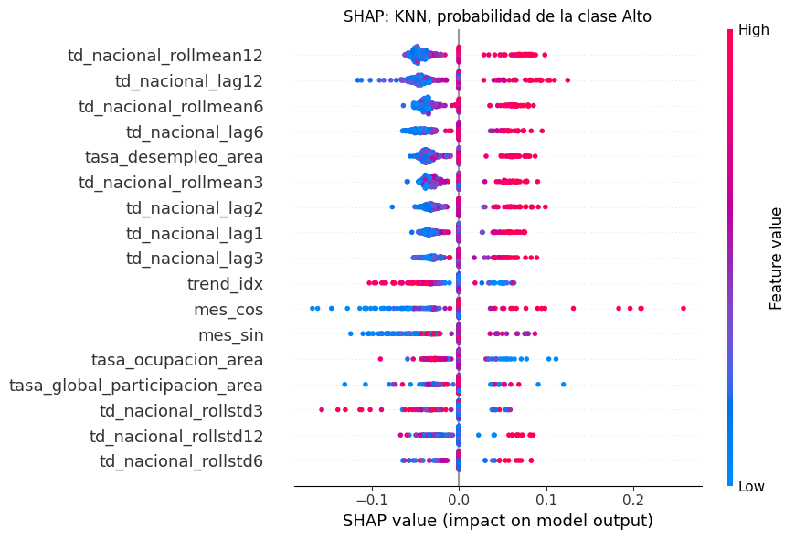
shap.summary_plot(shap_reg, ds.X, show=False, plot_size=(9, 6))
plt.title(f'SHAP: {A.MODEL_LABELS[mejor_reg]}, tasa de desempleo nacional del mes siguiente')
plt.tight_layout()
plt.show()
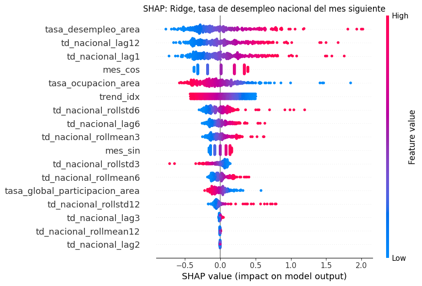
# Importancia global como porcentaje de la suma de los valores absolutos medios de SHAP, para poder comparar las dos tareas
relativa = pd.concat([(100 * importancia_clf / importancia_clf.sum()).rename('Clasificación: KNN, clase Alto (%)'),
(100 * importancia_reg / importancia_reg.sum()).rename('Regresión: Ridge (%)')], axis=1)
relativa.sort_values('Regresión: Ridge (%)', ascending=False).round(1)
| Clasificación: KNN, clase Alto (%) | Regresión: Ridge (%) | |
|---|---|---|
| tasa_desempleo_area | 8.5 | 13.7 |
| td_nacional_lag12 | 10.1 | 12.3 |
| td_nacional_lag1 | 6.8 | 12.2 |
| mes_cos | 5.0 | 9.7 |
| tasa_ocupacion_area | 2.8 | 9.6 |
| trend_idx | 5.4 | 9.6 |
| td_nacional_rollstd6 | 1.3 | 5.6 |
| td_nacional_lag6 | 8.6 | 4.6 |
| td_nacional_rollmean3 | 7.8 | 4.6 |
| mes_sin | 4.7 | 4.1 |
| td_nacional_rollstd3 | 2.3 | 3.6 |
| td_nacional_rollmean6 | 9.1 | 3.5 |
| tasa_global_participacion_area | 2.6 | 3.4 |
| td_nacional_rollstd12 | 2.0 | 3.1 |
| td_nacional_lag3 | 5.7 | 0.4 |
| td_nacional_rollmean12 | 10.4 | 0.1 |
| td_nacional_lag2 | 6.8 | 0.0 |
En los dos casos pesan sobre todo las variables que describen el nivel reciente del desempleo, aunque de forma distinta. En el KNN que estima la probabilidad de la categoría Alto la importancia está repartida entre muchas variables parecidas: el promedio móvil de 12 meses (10.4 % de la importancia total), el rezago de 12 meses (10.1 %), el promedio de 6 meses (9.1 %), el rezago de 6 meses (8.6 %) y la tasa de desempleo de las áreas (8.5 %) suman el 47 %. En todas ellas los valores altos (en rojo) empujan hacia arriba la probabilidad de Alto y los bajos hacia abajo, que es lo esperable: es más probable que un mes sea de crisis si el desempleo de los meses anteriores ya era alto. La estacionalidad también aparece, porque los valores altos de mes_cos (los meses de diciembre y enero, justo antes de los picos de comienzo de año) aumentan la probabilidad, y el índice de tendencia tiene el efecto contrario: a medida que avanza el tiempo la tasa baja.
En Ridge la variable más importante es la tasa de desempleo de las 13 áreas metropolitanas (13.7 %), seguida del rezago de 12 meses (12.3 %) y del último mes (12.2 %); el mes del año (mes_cos y mes_sin, 13.8 % entre las dos), la tasa de ocupación de las áreas (9.6 %) y la tendencia (9.6 %) completan el grupo que más pesa. Las tres variables de las áreas suman el 26.7 % de la importancia en Ridge (y el 13.9 % en el KNN), un primer indicio de que el desempleo de las ciudades principales sí aporta información sobre el nacional. Varias variables casi no cuentan: los rezagos de 2 y 3 meses y el promedio de 12 meses quedan en 0.0 %, 0.4 % y 0.1 %, porque Ridge, con una regularización fuerte (alpha de 70.9), reparte el peso entre variables muy correlacionadas y deja casi todo en las que mejor resumen el nivel y la estacionalidad.
Dos observaciones en detalle#
# Para cada tarea se elige un mes que el modelo acertó bien y otro con un error grande, y se explica con el modelo del pliegue
# externo que lo pronosticó (así la explicación corresponde a una predicción realmente fuera de muestra).
def explicar_mes(tarea, modelo, fila, pos_en_oof):
pooled = A.pooled_oof(fila['run_id'])
mes = int(pooled['idx'][pos_en_oof])
pliegue = int(pooled['fold'][pos_en_oof])
ajuste = A.refit_fold(tarea, modelo, fila['balancing'], fila['optimizer'], pliegue, ds)
explicador, valores = I.compute_shap(ajuste['est'], ajuste['scaler'], ajuste['X_train'], ajuste['X_test'], tarea)
fila_en_prueba = int(np.where(ajuste['test_idx'] == mes)[0][0])
entrada = ajuste['X_test_t'][fila_en_prueba:fila_en_prueba + 1]
if tarea == 'clf':
prediccion = A.M.expand_proba(ajuste['est'].predict_proba(entrada), ajuste['est'].classes_)[0, A.ALTO]
clase = A.ALTO
else:
prediccion, clase = float(ajuste['est'].predict(entrada)[0]), None
return I.local_explanation(explicador, valores, ajuste['X_test'], fila_en_prueba, clase), mes, prediccion
# Clasificación: un mes Alto bien clasificado y un mes Alto que el modelo no reconoció
p_clf = oof_clf[mejor_clf]
alto = np.where(p_clf['y_true'] == A.ALTO)[0]
acertado = alto[np.argmax(p_clf['y_proba'][alto, A.ALTO])]
fallado = alto[np.argmin(p_clf['y_proba'][alto, A.ALTO])]
# Regresión: el mes con el error más pequeño y el de error más grande
e_reg = errores_reg[mejor_reg]['error']
mejor_mes, peor_mes = int(np.argmin(np.abs(e_reg))), int(np.argmax(np.abs(e_reg)))
casos = [('clf', mejor_clf, mejores_clf.iloc[0], acertado, 'Clasificación: mes Alto bien clasificado'),
('clf', mejor_clf, mejores_clf.iloc[0], fallado, 'Clasificación: mes Alto no reconocido'),
('reg', mejor_reg, mejores_reg.iloc[0], mejor_mes, 'Regresión: error más pequeño'),
('reg', mejor_reg, mejores_reg.iloc[0], peor_mes, 'Regresión: error más grande')]
explicaciones = {}
for tarea, modelo, fila, posicion, titulo in casos:
explicacion, mes, prediccion = explicar_mes(tarea, modelo, fila, posicion)
explicaciones[titulo] = explicacion
fecha = fechas_objetivo.iloc[mes].strftime('%Y-%m')
if tarea == 'clf':
detalle = f"observado {config.CLASS_LABELS[int(ds.y_clf.iloc[mes])]}, probabilidad de Alto {prediccion:.2f}"
else:
detalle = f"observado {ds.y_reg.iloc[mes]:.2f} %, predicho {prediccion:.2f} %"
print(f'{titulo} ({fecha}): {detalle}')
Clasificación: mes Alto bien clasificado (2021-02): observado Alto, probabilidad de Alto 1.00
Clasificación: mes Alto no reconocido (2009-01): observado Alto, probabilidad de Alto 0.00
Regresión: error más pequeño (2017-08): observado 9.52 %, predicho 9.51 %
Regresión: error más grande (2020-04): observado 20.49 %, predicho 11.98 %
for titulo, explicacion in list(explicaciones.items())[:2]:
shap.plots.waterfall(explicacion, max_display=8, show=False)
plt.title(titulo, fontsize=11)
plt.gcf().set_size_inches(9, 4.5)
plt.tight_layout()
plt.show()
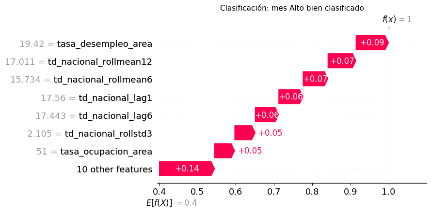
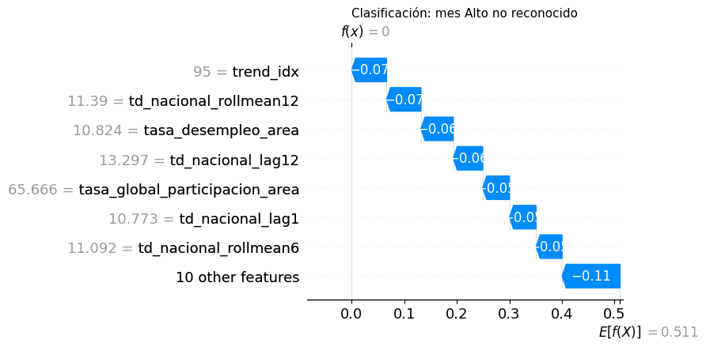
for titulo, explicacion in list(explicaciones.items())[2:]:
shap.plots.waterfall(explicacion, max_display=8, show=False)
plt.title(titulo, fontsize=11)
plt.gcf().set_size_inches(9, 4.5)
plt.tight_layout()
plt.show()
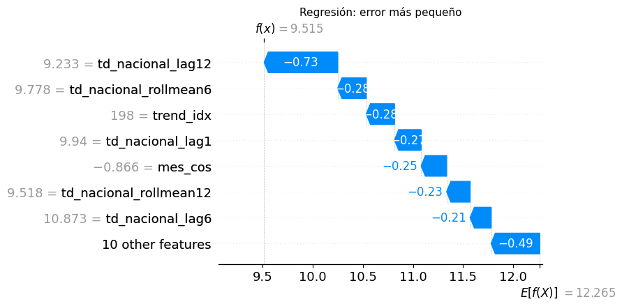
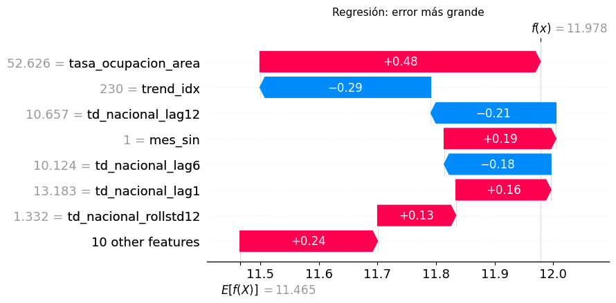
En clasificación se explicó con el KNN un mes Alto bien clasificado (febrero de 2021, probabilidad de Alto de 1.00) y otro que no reconoció (enero de 2009, probabilidad de 0.00). En el primero todo empuja hacia arriba: la tasa de desempleo de las áreas (19.4 %), los promedios móviles de 3, 6 y 12 meses (entre 15.1 % y 17.0 %) y el último mes (17.6 %) están muy por encima de lo normal, y cada variable aporta entre 0.05 y 0.08 a la probabilidad. En el segundo ocurre lo contrario: el desempleo de diciembre de 2008 era de 10.8 % (y de 10.6 % el promedio de tres meses), nada en los últimos meses anunciaba una crisis, y todas las variables empujan la probabilidad hacia abajo (la de las áreas, la tendencia, el promedio de 12 meses y el rezago de 12 meses restan entre 0.05 y 0.07 cada una). El mes fue Alto por un salto estacional de enero que ningún modelo basado en la historia reciente podía prever: el modelo del primer pliegue solo había visto los años 2002-2005.
En regresión se explicó el Ridge para el mes con el error más pequeño (agosto de 2017: observado 9.52 %, predicho 9.51 %) y para el de error más grande (abril de 2020: observado 20.49 %, predicho 11.98 %). En el primero todas las variables bajan la predicción desde el promedio de 12.3 % hasta 9.5 %: el rezago de 12 meses (9.2 %) resta 0.73 puntos y el promedio móvil de 6 meses, el índice de tendencia, el último mes y el mes del año restan entre 0.25 y 0.28 cada uno. En el segundo, el Ridge sí reacciona a la caída de la tasa de ocupación de las áreas (52.6 %, que suma 0.48 puntos), pero esa señal se diluye entre el resto: el modelo ve un último mes de 13.2 % y un historial tranquilo, y como es lineal y con regularización fuerte no puede convertir una caída de la ocupación en un salto de 7 puntos, mayor que cualquiera de los que había en el entrenamiento (el máximo era de 4.7). La diferencia entre las dos explicaciones es que, cuando el error es pequeño, todas las variables apuntan en el mismo sentido y con intensidad parecida, y cuando es grande el patrón que explicaría el resultado no está en lo aprendido.
SHAP frente a LIME en XGBoost#
# XGBoost entrenado con todos los meses: se compara la importancia media de SHAP con la que obtiene LIME sobre 40 meses repartidos
# a lo largo de la serie (LIME ajusta un modelo lineal local alrededor de cada mes).
muestra = ds.X.iloc[np.linspace(0, len(ds.X) - 1, 40).astype(int)]
filas, importancias = [], {}
for tarea, nombre in [('clf', 'Clasificación (clase Alto)'), ('reg', 'Regresión')]:
registro = clasificacion if tarea == 'clf' else regresion
fila = registro[registro['model'] == 'XGBoost'].sort_values('f1_macro_mean' if tarea == 'clf' else 'rmse_mean',
ascending=(tarea == 'reg')).iloc[0]
parametros = A.load_history(fila['run_id'])['fold_results'][-1]['best_params']
est, esc, X_ent = A.fit_on_all(tarea, 'XGBoost', fila['balancing'], parametros, ds)
clase = A.ALTO if tarea == 'clf' else None
_, valores = I.compute_shap(est, esc, X_ent, muestra, tarea)
shap_imp = I.mean_abs_shap(valores, ds.X.columns, clase)
lime_imp = I.lime_importance(est, esc, X_ent, muestra, tarea, class_index=clase, n_instances=len(muestra))
acuerdo = I.agreement(shap_imp, lime_imp, top=5)
importancias[nombre] = (shap_imp, lime_imp)
filas.append({'Tarea': nombre, 'Correlación de Spearman': acuerdo['spearman'],
'Variables en común entre las 5 primeras': acuerdo['top_en_comun']})
for nombre, (shap_imp, lime_imp) in importancias.items():
print(f'{nombre}\n Primeras 5 según SHAP: {", ".join(shap_imp.index[:5])}\n Primeras 5 según LIME: {", ".join(lime_imp.index[:5])}')
pd.DataFrame(filas).set_index('Tarea').round(3)
Clasificación (clase Alto)
Primeras 5 según SHAP: tasa_desempleo_area, td_nacional_rollmean3, td_nacional_rollmean6, td_nacional_lag12, td_nacional_lag6
Primeras 5 según LIME: td_nacional_rollmean3, tasa_desempleo_area, td_nacional_lag12, td_nacional_rollmean6, td_nacional_lag6
Regresión
Primeras 5 según SHAP: td_nacional_lag1, mes_cos, tasa_desempleo_area, td_nacional_rollmean3, tasa_global_participacion_area
Primeras 5 según LIME: td_nacional_lag1, tasa_desempleo_area, td_nacional_rollmean3, mes_cos, tasa_global_participacion_area
| Correlación de Spearman | Variables en común entre las 5 primeras | |
|---|---|---|
| Tarea | ||
| Clasificación (clase Alto) | 0.953 | 5 |
| Regresión | 0.821 | 5 |
fig, axes = plt.subplots(1, 2, figsize=(13, 5))
for ax, (nombre, (shap_imp, lime_imp)) in zip(axes, importancias.items()):
comparacion = pd.concat([(shap_imp / shap_imp.sum()).rename('SHAP'), (lime_imp / lime_imp.sum()).rename('LIME')], axis=1)
comparacion = comparacion.loc[comparacion['SHAP'].sort_values(ascending=False).index[:8]][::-1]
posiciones = np.arange(len(comparacion))
ax.barh(posiciones - 0.2, comparacion['SHAP'], height=0.4, color=plots.BLUE, label='SHAP')
ax.barh(posiciones + 0.2, comparacion['LIME'], height=0.4, color=plots.RED, label='LIME')
ax.set_yticks(posiciones, comparacion.index, fontsize=8)
ax.set_xlabel('Importancia relativa')
ax.set_title(f'XGBoost: {nombre}')
ax.legend()
plt.tight_layout()
plt.show()
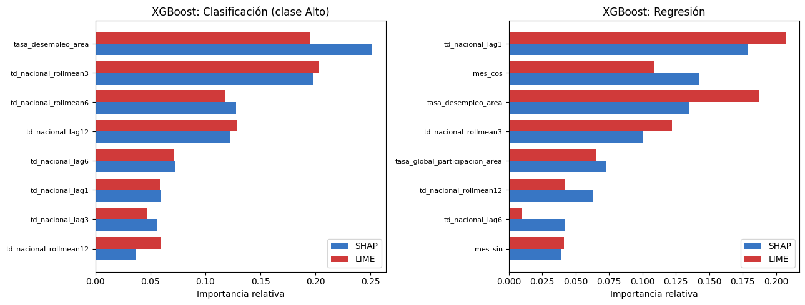
Para XGBoost, SHAP y LIME dan rankings muy parecidos: la correlación de Spearman entre las dos importancias es de 0.95 en clasificación (categoría Alto) y de 0.82 en regresión, y las cinco variables principales son las mismas con los dos métodos en las dos tareas. En clasificación encabezan la lista la tasa de desempleo de las áreas y el promedio móvil de 3 meses (con el orden intercambiado entre métodos), seguidos de los promedios y rezagos de 6 y 12 meses; en regresión, el último mes, la tasa de desempleo de las áreas, el promedio de 3 meses y el mes del año, con la tasa de participación de las áreas en quinto lugar. Las diferencias aparecen en los detalles: en regresión, LIME le da más peso a la tasa de desempleo de las áreas (0.19 frente a 0.14 de SHAP) y menos al mes del año (0.11 contra 0.14), y en clasificación le da menos a la tasa de desempleo de las áreas (0.20 contra 0.25) y más al promedio de 12 meses (0.06 contra 0.04).
Son las diferencias que cabe esperar de dos métodos distintos. SHAP reparte la predicción entre las variables con valores de Shapley, que para árboles se calculan de forma exacta y cumplen eficiencia, simetría y aditividad; LIME ajusta una regresión lineal ponderada alrededor de cada mes con observaciones perturbadas al azar, así que su explicación es local, depende del tamaño de la vecindad y del muestreo, y solo captura lo lineal. Los dos pueden divergir cuando las variables están muy correlacionadas (aquí los rezagos y los promedios móviles de la tasa lo están, y el reparto del peso entre ellas cambia de un método a otro), cuando el modelo tiene interacciones o saltos fuertes cerca de un umbral que una recta no representa, y cuando se explica una observación aislada en lugar del promedio de muchas, como se hizo aquí con 40 meses. Que coincidan en el ranking promedio es una buena señal de que la explicación no depende del método, pero no garantiza que coincidan en cada mes.
¿Aportan algo los indicadores de las áreas metropolitanas?#
# Se repite el ajuste de cada pliegue externo con los mismos hiperparámetros, con y sin las tres variables de las 13 áreas
filas = []
for tarea, tabla, metrica in [('clf', mejores_clf, 'F1-macro'), ('reg', mejores_reg, 'RMSE')]:
for modelo, fila in tabla.iterrows():
r = A.ablation_area_features(tarea, modelo, fila['balancing'], fila['optimizer'], ds)
filas.append({'Tarea': 'Clasificación' if tarea == 'clf' else 'Regresión', 'Modelo': A.MODEL_LABELS[modelo], 'Métrica': metrica,
'Con indicadores de área': r['con_areas'], 'Sin indicadores de área': r['sin_areas'],
'Diferencia': r['con_areas'] - r['sin_areas']})
ablacion = pd.DataFrame(filas).set_index(['Tarea', 'Modelo'])
ablacion.round(3)
| Métrica | Con indicadores de área | Sin indicadores de área | Diferencia | ||
|---|---|---|---|---|---|
| Tarea | Modelo | ||||
| Clasificación | KNN | F1-macro | 0.815 | 0.791 | 0.024 |
| Random Forest | F1-macro | 0.674 | 0.674 | 0.000 | |
| Árbol de decisión | F1-macro | 0.613 | 0.625 | -0.012 | |
| Regresión logística | F1-macro | 0.721 | 0.683 | 0.038 | |
| XGBoost | F1-macro | 0.644 | 0.644 | 0.000 | |
| SVM | F1-macro | 0.557 | 0.548 | 0.009 | |
| Naive Bayes | F1-macro | 0.651 | 0.627 | 0.024 | |
| Regresión | Ridge | RMSE | 1.317 | 1.388 | -0.070 |
| SVR | RMSE | 1.314 | 1.406 | -0.091 | |
| KNN | RMSE | 1.373 | 1.357 | 0.015 | |
| XGBoost | RMSE | 1.568 | 1.726 | -0.158 | |
| Random Forest | RMSE | 1.510 | 1.510 | -0.000 | |
| Árbol de decisión | RMSE | 1.751 | 1.783 | -0.032 | |
| Lasso | RMSE | 1.692 | 1.707 | -0.016 |
Para saber si los indicadores de las 13 áreas metropolitanas aportan información sobre el desempleo nacional, se repitió el ajuste de cada pliegue externo con los mismos hiperparámetros, quitando las tres variables de área. La diferencia es el efecto de tenerlas (en el F1-macro, positiva es mejor; en el RMSE, negativa es mejor). En clasificación mejoran cuatro de los siete modelos (la regresión logística en 0.038, KNN y Naive Bayes en 0.024 y SVM en 0.009), no cambian dos (Random Forest y XGBoost) y empeora el árbol de decisión (−0.012). En regresión, tener las variables de área reduce el RMSE en cinco de siete modelos: Ridge baja de 1.388 a 1.317, SVR de 1.406 a 1.314, XGBoost de 1.726 a 1.568, el árbol de 1.783 a 1.751 y Lasso de 1.707 a 1.692. Random Forest no cambia (1.510) y solo KNN empeora (de 1.357 a 1.373).
Esto quiere decir que las áreas ayudan, y bastante en algunos modelos: entre 5 % y 7 % menos de RMSE en Ridge y SVR y cerca de 9 % en XGBoost. Es coherente con lo que mostró SHAP, donde la tasa de desempleo de las áreas aparece entre las variables más importantes en Ridge y en XGBoost, y respalda la primera hipótesis secundaria: el desempleo de las 13 áreas es un predictor útil del desempleo nacional. La evidencia, sin embargo, es moderada: es una sola partición temporal, no se hizo una prueba formal y en clasificación las diferencias son de unas pocas centésimas.
Optimización computacional#
Con 288 observaciones y 17 variables el costo computacional no es un problema: la corrida completa de los 140 modelos tomó 57 minutos sin paralelizar nada. Aun así, conviene entender cómo escalaría cada modelo si los datos fueran mucho más grandes, y qué se gana al usar la variante pensada para ese caso. Esta sección hace tres cosas: contrasta la complejidad teórica de cada modelo con el tiempo medido en el proyecto, mide el escalamiento con n y con p sobre datos sintéticos de tamaño controlado (cada medición se repitió tres veces, o dos en los modelos más lentos, y se reporta la mediana), y compara la variante estándar de cada modelo con la optimizada: KNN exhaustivo frente a KD-Tree y FAISS (Johnson et al., 2019), Ridge con solver directo frente a SAGA (Defazio et al., 2014), Naive Bayes con fit frente a partial_fit, XGBoost con método exacto frente a histogramas y SVM con núcleo frente a LinearSVC y gradiente estocástico. Todas las mediciones de esta sección se hicieron con BLAS y OpenMP limitados a un hilo: en una primera versión el Lasso saltó de 0.01 s a 1 s entre 10 mil y 20 mil observaciones, y resultó ser un artefacto de los 12 hilos de OpenBLAS compitiendo con otros procesos y no un comportamiento del algoritmo (con un hilo el tiempo crece de forma lineal).
Complejidad teórica y tiempo medido en el proyecto#
Modelo |
Entrenamiento |
Inferencia |
Variante pensada para datos grandes |
|---|---|---|---|
KNN |
\(O(1)\) (solo guarda los datos) |
\(O(n \cdot p)\) por consulta con búsqueda exhaustiva |
KD-Tree o Ball-Tree, \(O(p \log n)\) en pocas dimensiones; FAISS para vecinos aproximados |
Ridge |
\(O(n p^2 + p^3)\) con la ecuación normal |
\(O(p)\) |
SAGA, con costo lineal en \(n\) y \(p\) por iteración |
Lasso |
\(O(n p \cdot \text{iter})\) por descenso de coordenadas |
\(O(p)\) |
gradiente estocástico |
Naive Bayes |
\(O(n p)\) |
\(O(p)\) |
|
Regresión logística |
\(O(n p \cdot \text{iter})\) |
\(O(p)\) |
SAGA |
Árbol de decisión |
\(O(n p \log n)\) |
\(O(\text{profundidad})\) |
|
Random Forest |
\(O(B \cdot n p \log n)\), con \(B\) árboles |
\(O(B \cdot \text{profundidad})\) |
árboles en paralelo con |
XGBoost |
\(O(B \cdot n p \log n)\) con el método exacto |
\(O(B \cdot \text{profundidad})\) |
histogramas, \(O(B \cdot n p)\), y parada temprana |
SVM y SVR con núcleo |
entre \(O(n^2 p)\) y \(O(n^3)\) |
\(O(n_{vs} \cdot p)\), con \(n_{vs}\) vectores de soporte |
|
# Tiempo medido en la corrida real (n = 239 meses de entrenamiento por pliegue en promedio), por familia de modelos
tiempos = master.groupby(['task', 'model']).agg(
ajuste_final=('final_fit_time_s', 'mean'), inferencia=('predict_time_s', 'mean'),
busqueda=('search_time_s', 'sum'), evaluaciones=('total_evaluations', 'sum'))
tiempos['ms por evaluación'] = 1000 * tiempos['busqueda'] / tiempos['evaluaciones']
tiempos['ajuste_final'] *= 1000
tiempos['inferencia'] *= 1000
tiempos['busqueda'] /= 60
tiempos.index = pd.MultiIndex.from_tuples(
[({'clf': 'Clasificación', 'reg': 'Regresión'}[t], A.MODEL_LABELS[m]) for t, m in tiempos.index], names=['Tarea', 'Modelo'])
tiempos = tiempos.rename(columns={'ajuste_final': 'Ajuste final (ms)', 'inferencia': 'Inferencia de 48 meses (ms)',
'busqueda': 'Búsqueda total (min)', 'evaluaciones': 'Evaluaciones'})
tiempos.sort_values('Búsqueda total (min)', ascending=False).round(2)
| Ajuste final (ms) | Inferencia de 48 meses (ms) | Búsqueda total (min) | Evaluaciones | ms por evaluación | ||
|---|---|---|---|---|---|---|
| Tarea | Modelo | |||||
| Clasificación | Random Forest | 175.31 | 17.09 | 25.81 | 3200 | 483.90 |
| XGBoost | 117.89 | 1.91 | 13.03 | 3200 | 244.36 | |
| Regresión | Random Forest | 124.36 | 9.08 | 5.60 | 800 | 420.04 |
| Clasificación | Regresión logística | 46.11 | 0.34 | 4.14 | 2560 | 96.95 |
| Regresión | XGBoost | 54.17 | 0.76 | 1.91 | 800 | 143.27 |
| Clasificación | KNN | 2.79 | 7.14 | 1.73 | 2720 | 38.09 |
| SVM | 13.47 | 0.67 | 1.56 | 3040 | 30.84 | |
| Árbol de decisión | 2.00 | 0.25 | 1.15 | 3200 | 21.50 | |
| Naive Bayes | 0.90 | 0.38 | 0.85 | 2480 | 20.67 | |
| Regresión | SVR | 2.82 | 0.25 | 0.33 | 800 | 24.56 |
| KNN | 2.46 | 3.06 | 0.22 | 680 | 19.00 | |
| Lasso | 5.00 | 0.12 | 0.17 | 620 | 16.53 | |
| Ridge | 2.50 | 0.10 | 0.10 | 620 | 9.80 | |
| Árbol de decisión | 1.32 | 0.14 | 0.07 | 800 | 5.42 |
La búsqueda de los 140 modelos sumó 56.7 minutos, y el 82 % de ese tiempo se fue en Random Forest y XGBoost. Solo el Random Forest de clasificación tomó 25.8 minutos (484 ms por evaluación, y cada evaluación entrena tres modelos, uno por pliegue interno), seguido de XGBoost de clasificación con 13.0 minutos y de Random Forest de regresión con 5.6. Los demás cuestan 4.1 minutos o menos cada uno (la regresión logística es la más cara de ellos), y Ridge, Lasso, KNN y el árbol de regresión menos de 15 segundos. Esto es lo que anticipaba la tabla de complejidad: los métodos de conjunto multiplican el costo de un árbol por el número de árboles (hasta 300 en el espacio de búsqueda), mientras que los modelos lineales pasan pocas veces por los datos. También se ve la diferencia entre el aprendizaje perezoso y el ansioso: KNN casi no cuesta entrenarlo (2.8 ms) y predecir 48 meses le toma más (7.1 ms), mientras que en el Random Forest ocurre al revés (175 ms de ajuste y 17 ms de predicción). Con solo 239 meses de entrenamiento los tiempos absolutos son pequeños, y por eso el efecto de las variantes optimizadas solo se puede estudiar con datos sintéticos más grandes, como se hace a continuación.
Escalamiento con el tamaño de los datos#
escalamiento = pd.read_csv(config.EXPERIMENTS_DIR / 'complexity_scaling.csv')
fig, ejes = plt.subplots(2, 4, figsize=(18, 8))
plots.plot_scaling(escalamiento, 'KNN', x='n', y='inferencia_s', ax=ejes[0, 0], title='KNN: inferencia frente a n')
plots.plot_scaling(escalamiento, 'KNN (en p)', x='p', y='inferencia_s', ax=ejes[0, 1], title='KNN: inferencia frente a p')
plots.plot_scaling(escalamiento, 'Ridge/Lasso', x='n', y='entrenamiento_s', ax=ejes[0, 2], title='Ridge y Lasso: entrenamiento frente a n')
plots.plot_scaling(escalamiento, 'Ridge/Lasso (en p)', x='p', y='entrenamiento_s', ax=ejes[0, 3], title='Ridge y Lasso: entrenamiento frente a p')
plots.plot_scaling(escalamiento, 'Naive Bayes', x='n', y='entrenamiento_s', ax=ejes[1, 0], title='Naive Bayes: entrenamiento frente a n')
plots.plot_scaling(escalamiento, 'XGBoost', x='n', y='entrenamiento_s', ax=ejes[1, 1], title='XGBoost: entrenamiento frente a n')
plots.plot_scaling(escalamiento, 'SVM', x='n', y='entrenamiento_s', ax=ejes[1, 2], title='SVM: entrenamiento frente a n')
plots.plot_scaling(escalamiento, 'SVM', x='n', y='inferencia_s', ax=ejes[1, 3], title='SVM: inferencia frente a n')
plt.tight_layout()
plt.show()
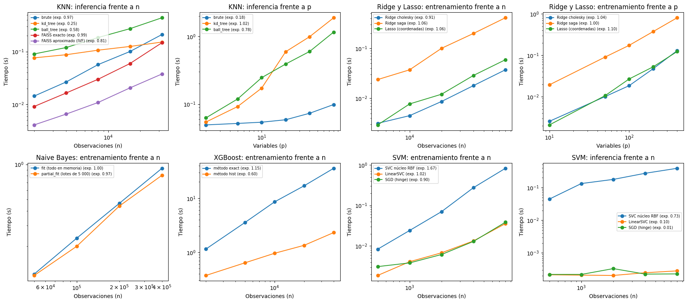
# Exponente empírico: pendiente de log(tiempo) frente a log(n) (o log(p)); un exponente cercano a 1 indica crecimiento lineal
filas = []
for familia, x in [('KNN', 'n'), ('KNN (en p)', 'p'), ('Ridge/Lasso', 'n'), ('Ridge/Lasso (en p)', 'p'),
('Naive Bayes', 'n'), ('XGBoost', 'n'), ('SVM', 'n')]:
sub = escalamiento[escalamiento['familia'] == familia]
for variante, grupo in sub.groupby('variante', sort=False):
fila = {'Familia': familia, 'Variante': variante, 'Variable': x}
for columna, nombre in [('entrenamiento_s', 'Exponente de entrenamiento'), ('inferencia_s', 'Exponente de inferencia')]:
valido = grupo[(grupo[columna] > 0) & (grupo[x] > 0)]
fila[nombre] = np.polyfit(np.log(valido[x]), np.log(valido[columna]), 1)[0] if len(valido) >= 3 else np.nan
filas.append(fila)
exponentes = pd.DataFrame(filas).set_index(['Familia', 'Variante'])
exponentes.round(2)
| Variable | Exponente de entrenamiento | Exponente de inferencia | ||
|---|---|---|---|---|
| Familia | Variante | |||
| KNN | brute | n | 0.23 | 0.97 |
| kd_tree | n | 1.15 | 0.25 | |
| ball_tree | n | 1.11 | 0.58 | |
| FAISS exacto | n | 0.90 | 0.99 | |
| FAISS aproximado (IVF) | n | 0.74 | 0.81 | |
| KNN (en p) | brute | p | 0.15 | 0.18 |
| kd_tree | p | 0.88 | 1.02 | |
| ball_tree | p | 0.78 | 0.78 | |
| Ridge/Lasso | Ridge cholesky | n | 0.91 | -0.09 |
| Ridge saga | n | 1.06 | 0.01 | |
| Lasso (coordenadas) | n | 1.06 | 0.10 | |
| Ridge/Lasso (en p) | Ridge cholesky | p | 1.04 | 0.50 |
| Ridge saga | p | 1.00 | 0.60 | |
| Lasso (coordenadas) | p | 1.10 | 0.66 | |
| Naive Bayes | fit (todo en memoria) | n | 1.00 | NaN |
| partial_fit (lotes de 5 000) | n | 0.97 | NaN | |
| XGBoost | método exact | n | 1.15 | -0.03 |
| método hist | n | 0.60 | -0.06 | |
| SVM | SVC núcleo RBF | n | 1.67 | 0.73 |
| LinearSVC | n | 1.02 | 0.10 | |
| SGD (hinge) | n | 0.90 | 0.01 |
La mayoría de los exponentes medidos coincide con lo que dice la teoría. En KNN, la búsqueda exhaustiva predice con un costo casi lineal en n (exponente de 0.97) y el KD-Tree crece mucho más despacio (0.25, cerca del logarítmico), a cambio de un índice que sí cuesta construir casi n log n (1.15 en entrenamiento). Aun así, con 8 variables el KD-Tree solo empieza a ganarle a la búsqueda exhaustiva a partir de unas 16 mil a 32 mil observaciones (con 32 mil predice en 0.15 s y la exhaustiva en 0.21 s; con 2 mil tarda 0.076 s contra 0.014 s). Y cuando crece la dimensión pierde su ventaja por completo: con 80 variables el KD-Tree tarda 1.9 s frente a 0.1 s de la búsqueda exhaustiva, que es la maldición de la dimensionalidad. FAISS exacto escala igual que la búsqueda exhaustiva (0.99), solo que más rápido, y la versión aproximada (IVF) crece algo menos (0.81).
Ridge y Lasso crecen de forma lineal en n y en p, como dice el costo por iteración de O(n·p) (exponentes entre 0.9 y 1.1). El solver directo (Cholesky) tiene un exponente de 0.91 en n y de 1.04 en p; la teoría dice que debería crecer con p² por el producto XᵀX, pero entre 10 y 400 variables su costo está dominado por recorrer la matriz y no por el término cuadrático, que solo se notaría con muchas más variables. XGBoost con el método exacto crece como n log n (1.15) y con histogramas bastante menos (0.60); su inferencia no crece con n (exponente cercano a cero) porque depende de los árboles y no de los datos de entrenamiento. En SVM con núcleo RBF el entrenamiento crece de forma claramente superlineal (1.67, por debajo del cuadrático teórico porque el costo depende de cuántos vectores de soporte quedan) y la inferencia también crece con n (0.73), porque cada predicción se compara con los vectores de soporte; LinearSVC (1.02) y el gradiente estocástico (0.90) son lineales y su inferencia no depende de n. En Naive Bayes, fit y partial_fit son igual de lineales (1.00 y 0.97): aprender por lotes no cambia el orden del tiempo, cambia la memoria, como se ve en la tabla siguiente.
Modelo estándar frente a optimizado#
comparativa = pd.read_csv(config.EXPERIMENTS_DIR / 'standard_vs_optimized.csv')
comparativa = comparativa.rename(columns={
'modelo': 'Modelo', 'variante': 'Variante', 'complejidad_entrenamiento': 'Complejidad de entrenamiento',
'complejidad_inferencia': 'Complejidad de inferencia', 'entrenamiento_s': 'Entrenamiento (s)', 'inferencia_s': 'Inferencia (s)',
'memoria_pico_mb': 'Memoria pico (MB)', 'desempeño': 'Desempeño', 'aceleracion_entrenamiento': 'Aceleración del entrenamiento'})
comparativa.set_index(['Modelo', 'Variante'])[['Entrenamiento (s)', 'Aceleración del entrenamiento', 'Inferencia (s)', 'Memoria pico (MB)', 'Desempeño']].round(3)
| Entrenamiento (s) | Aceleración del entrenamiento | Inferencia (s) | Memoria pico (MB) | Desempeño | ||
|---|---|---|---|---|---|---|
| Modelo | Variante | |||||
| KNN | estándar (exhaustivo) | 0.001 | 1.000 | 0.142 | 0.027 | 0.958 |
| optimizado (KD-Tree) | 0.028 | 0.026 | 0.135 | 0.023 | 0.958 | |
| optimizado (FAISS aproximado) | 0.005 | 0.140 | 0.023 | 0.020 | 0.958 | |
| Ridge | estándar (Cholesky) | 0.022 | 1.000 | 0.000 | 15.281 | 10.244 |
| optimizado (SAGA) | 0.186 | 0.119 | 0.000 | 15.281 | 10.244 | |
| Naive Bayes | estándar (fit completo) | 0.973 | 1.000 | 0.000 | 508.152 | NaN |
| optimizado (partial_fit) | 0.914 | 1.065 | 0.000 | 8.891 | NaN | |
| XGBoost | estándar (exacto) | 38.725 | 1.000 | 0.014 | 12.406 | 0.982 |
| optimizado (histogramas) | 2.475 | 15.645 | 0.012 | 16.402 | 0.981 | |
| SVM | estándar (núcleo RBF) | 0.912 | 1.000 | 0.433 | 34.926 | 0.924 |
| optimizado (LinearSVC) | 0.032 | 28.928 | 0.000 | 2.723 | 0.839 | |
| optimizado (SGD hinge) | 0.027 | 33.259 | 0.000 | 0.020 | 0.816 | |
| Random Forest | estándar (1 núcleo) | 6.571 | 1.000 | 0.030 | 12.535 | 0.932 |
| optimizado (n_jobs=-1) | 0.869 | 7.566 | 0.026 | 15.418 | 0.932 |
comparativa.set_index(['Modelo', 'Variante'])[['Complejidad de entrenamiento', 'Complejidad de inferencia']]
| Complejidad de entrenamiento | Complejidad de inferencia | ||
|---|---|---|---|
| Modelo | Variante | ||
| KNN | estándar (exhaustivo) | O(1) (perezoso) | O(n·p) por consulta con búsqueda exhaustiva; O... |
| optimizado (KD-Tree) | O(1) (perezoso) | O(n·p) por consulta con búsqueda exhaustiva; O... | |
| optimizado (FAISS aproximado) | O(1) (perezoso) | O(n·p) por consulta con búsqueda exhaustiva; O... | |
| Ridge | estándar (Cholesky) | O(n·p² + p³) con solver directo; O(n·p·iter) c... | O(p) |
| optimizado (SAGA) | O(n·p² + p³) con solver directo; O(n·p·iter) c... | O(p) | |
| Naive Bayes | estándar (fit completo) | O(n·p) | O(p) |
| optimizado (partial_fit) | O(n·p) | O(p) | |
| XGBoost | estándar (exacto) | O(B·n·p·log n) exacto; O(B·n·p) con histogramas | O(B·profundidad) |
| optimizado (histogramas) | O(B·n·p·log n) exacto; O(B·n·p) con histogramas | O(B·profundidad) | |
| SVM | estándar (núcleo RBF) | O(n²·p) a O(n³) con núcleo; O(n·p) con LinearS... | O(n_vs·p) con núcleo; O(p) lineal |
| optimizado (LinearSVC) | O(n²·p) a O(n³) con núcleo; O(n·p) con LinearS... | O(n_vs·p) con núcleo; O(p) lineal | |
| optimizado (SGD hinge) | O(n²·p) a O(n³) con núcleo; O(n·p) con LinearS... | O(n_vs·p) con núcleo; O(p) lineal | |
| Random Forest | estándar (1 núcleo) | O(B·n·p·log n) | O(B·profundidad) |
| optimizado (n_jobs=-1) | O(B·n·p·log n) | O(B·profundidad) |
La parada temprana de XGBoost se evaluó aparte: el modelo entrena hasta 1000 árboles y se detiene cuando el error sobre una validación independiente (el último 20 % de los datos de entrenamiento) no mejora en 20 rondas seguidas; la comparación es contra entrenar siempre 300 árboles.
parada = escalamiento[escalamiento['familia'] == 'XGBoost (parada temprana)']
parada = parada[['variante', 'arboles_usados', 'entrenamiento_s', 'inferencia_s', 'desempeño']]
parada.columns = ['Variante', 'Árboles usados', 'Entrenamiento (s)', 'Inferencia (s)', 'Accuracy en prueba']
parada.set_index('Variante').round(4)
| Árboles usados | Entrenamiento (s) | Inferencia (s) | Accuracy en prueba | |
|---|---|---|---|---|
| Variante | ||||
| 300 árboles fijos | 300.0 | 3.7772 | 0.0356 | 0.9435 |
| parada temprana (20 rondas) | 78.0 | 1.5509 | 0.0093 | 0.9430 |
La tabla muestra que “optimizado” no siempre significa “más rápido”: depende del tamaño de los datos y de qué se sacrifica. En KNN con 16 mil observaciones y 8 variables, el KD-Tree no ayuda (predice en 0.135 s contra 0.142 s de la búsqueda exhaustiva y construir el índice cuesta 40 veces más), pero FAISS aproximado predice 6.1 veces más rápido (0.023 s) con casi la misma exactitud (0.9575 contra 0.9585): el compromiso entre exactitud y velocidad de la aproximación es aquí de una milésima de accuracy. En Ridge, SAGA es 8.4 veces más lento que Cholesky (0.186 s contra 0.022 s) con el mismo RMSE (10.2439 y 10.2440); solo compensaría con muchas más variables o con matrices dispersas, que no se probaron. En Naive Bayes, partial_fit tarda lo mismo pero usa 8.9 MB en lugar de 508 MB, 57 veces menos memoria, que es justo su razón de ser: aprender cuando los datos no caben en memoria. XGBoost con histogramas entrena 15.6 veces más rápido (2.5 s contra 38.7 s con 40 mil observaciones) y pierde solo 0.0005 de accuracy (de 0.9815 a 0.9810), la mejor relación de toda la tabla, a cambio de algo más de memoria (16.4 MB contra 12.4 MB) por las estructuras de los histogramas. Con parada temprana, XGBoost se detuvo en 78 de los 300 árboles y entrenó 2.4 veces más rápido (1.55 s contra 3.78 s) con el mismo accuracy (0.9430 contra 0.9435).
En SVM, LinearSVC y el gradiente estocástico entrenan 29 y 33 veces más rápido, predicen en 0.3 milisegundos en vez de 0.43 s y usan 2.7 MB y 0.02 MB en lugar de 34.9 MB, pero el accuracy cae de 0.9245 a 0.839 y a 0.816. Es el único caso donde la variante optimizada paga un precio claro en desempeño, porque el problema sintético no es linealmente separable del todo. Y Random Forest con todos los núcleos (n_jobs=-1) entrena 7.6 veces más rápido con exactamente el mismo resultado (0.9315). En resumen, las mejoras que no cambian el modelo (histogramas, paralelismo, parada temprana) son prácticamente gratis, las que lo aproximan (FAISS, SVM lineal) cambian velocidad por exactitud en una proporción que hay que medir caso por caso, y las que solo ahorran memoria (partial_fit, SGD) son útiles cuando los datos no caben, no cuando sobra memoria.
Paralelización#
El trabajo de este proyecto se puede repartir de dos maneras: entre combinaciones (cada una de las 140 es independiente de las demás) y entre pliegues externos (los cinco pliegues de una misma combinación también lo son). Con joblib se midieron las dos. Para la primera se corrieron, en serie y en paralelo, 24 combinaciones baratas (KNN, Ridge y Lasso con sus cuatro optimizadores) con el backend loky, que reparte el trabajo en procesos, y con threading, que lo reparte en hilos que comparten memoria pero quedan limitados por el GIL de Python. Para la segunda se corrió una combinación pesada, Random Forest con búsqueda aleatoria, repartiendo sus cinco pliegues externos en cinco procesos. En todos los casos se comprobó que el resultado paralelo fuera idéntico al serial, porque paralelizar no puede cambiar las métricas. En estas mediciones BLAS y OpenMP se limitaron a un hilo para que lo único que se paralelice sea lo que se pide con n_jobs.
paralelo = pd.read_csv(config.EXPERIMENTS_DIR / 'parallel_speedup.csv')
paralelo = paralelo.rename(columns={'parte': 'Qué se reparte', 'backend': 'Backend de joblib', 'trabajadores': 'Trabajadores',
'tiempo_s': 'Tiempo (s)', 'aceleracion': 'Aceleración', 'eficiencia': 'Eficiencia',
'resultado_identico': 'Resultado idéntico al serial'})
paralelo.set_index(['Qué se reparte', 'Backend de joblib', 'Trabajadores']).round(2)
| Tiempo (s) | Aceleración | Eficiencia | Resultado idéntico al serial | |||
|---|---|---|---|---|---|---|
| Qué se reparte | Backend de joblib | Trabajadores | ||||
| A: entre combinaciones | serie | 1 | 73.44 | 1.00 | 1.00 | True |
| loky | 2 | 42.56 | 1.73 | 0.86 | True | |
| 4 | 23.67 | 3.10 | 0.78 | True | ||
| 8 | 17.81 | 4.12 | 0.52 | True | ||
| 12 | 16.91 | 4.34 | 0.36 | True | ||
| threading | 4 | 83.62 | 0.88 | 0.22 | False | |
| 8 | 88.06 | 0.83 | 0.10 | False | ||
| B: entre pliegues (Random Forest) | serie | 1 | 93.10 | 1.00 | 1.00 | True |
| loky | 5 | 25.68 | 3.63 | 0.73 | True |
Repartir las combinaciones entre procesos acelera de forma clara pero no proporcional: con 2 procesos se gana 1.73 veces (una eficiencia de 86 %), con 4 procesos 3.10 veces (78 %), con 8 procesos 4.12 veces (52 %) y con 12 solo 4.34 veces (36 %). Pasar de 8 a 12 casi no ayuda porque el procesador tiene 6 núcleos físicos (los otros 6 hilos comparten núcleo con ellos), porque cada proceso nuevo tiene que importar las librerías y recibir los datos, y porque las 24 combinaciones no cuestan lo mismo, así que al final los trabajadores esperan a la más lenta. Repartir los cinco pliegues externos de una combinación pesada (Random Forest con búsqueda aleatoria) entre 5 procesos baja el tiempo de 93.1 s a 25.7 s (3.63 veces, 73 % de eficiencia), también con resultados idénticos a los seriales. Si la aceleración de 4.3 veces se mantuviera en la corrida completa, los 57 minutos se reducirían a unos 13.
El backend threading, en cambio, empeora las cosas: con 4 y 8 hilos el tiempo (83.6 s y 88.1 s) es mayor que el serial (73.4 s), es decir, aceleraciones de 0.88 y 0.83. El código de los optimizadores es Python puro y el GIL deja avanzar a un solo hilo a la vez, así que coordinar los hilos cuesta más de lo que se gana. Además los hilos cambian el resultado, como lo indica la última columna. Una prueba aparte con 16 de las combinaciones (scripts/diagnostico_hilos.py) mostró que solo cambian las del algoritmo genético: DEAP usa el generador aleatorio global de Python, que los hilos comparten y que cada búsqueda genética reinicia con la semilla al empezar, de modo que las secuencias de números se mezclan entre hilos. Por eso cuáles combinaciones cambian, y por cuánto, varía de una ejecución a otra (entre 0.0001 y 0.011 en las dos veces que se corrió el diagnóstico), lo típico de una condición de carrera. Con procesos (loky) cada trabajador tiene su propio generador y las 16 combinaciones dieron exactamente lo mismo, por lo que loky es el backend adecuado para este proyecto.
No se usó Dask ni Ray porque no se justifican aquí: las 140 combinaciones suman 57 minutos de cómputo, los datos son de 288 filas y joblib ya da una aceleración de 3.6 a 4.3 veces en un solo computador. Esas herramientas valen la pena cuando el trabajo no cabe en una máquina, con muchas más combinaciones pesadas o datos de millones de filas. Tampoco se pudo medir la aceleración por GPU de XGBoost (device='cuda'): el computador tiene tarjetas AMD Radeon, que no tienen CUDA, así que no hay un factor de aceleración que reportar. Con 239 observaciones por entrenamiento sería de esperar que la GPU no ayudara, porque copiar los datos a la tarjeta costaría más que el entrenamiento mismo (el ajuste final de XGBoost toma unos 118 ms), pero esa es una expectativa y no una medición.
Perfilamiento#
perfil = pd.read_csv(config.EXPERIMENTS_DIR / 'profile_top.csv')
total_perfil = perfil['tiempo_total_perfil_s'].iloc[0]
print(f'Tiempo total perfilado (Random Forest, SMOTE, búsqueda aleatoria): {total_perfil:.1f} s')
perfil[perfil['orden'] == 'tiempo propio'].head(8)[['funcion', 'llamadas', 'tiempo_propio_s', 'pct_propio']].rename(columns={
'funcion': 'Función', 'llamadas': 'Llamadas', 'tiempo_propio_s': 'Tiempo propio (s)', 'pct_propio': '% del total'}).set_index('Función').round(2)
Tiempo total perfilado (Random Forest, SMOTE, búsqueda aleatoria): 160.0 s
| Llamadas | Tiempo propio (s) | % del total | |
|---|---|---|---|
| Función | |||
| _classes.py:_fit | 100568 | 16.85 | 10.53 |
| validation.py:check_random_state | 302997 | 14.86 | 9.29 |
| _ufunc_config.py:inner | 202434 | 12.74 | 7.96 |
| inspect.py:_signature_from_function | 506296 | 8.16 | 5.10 |
| _tags.py:_find_tags_provider | 513442 | 7.05 | 4.41 |
| inspect.py:__init__ | 7086475 | 6.27 | 3.92 |
| _arraysetops_impl.py:_unique1d | 213233 | 2.54 | 1.59 |
| validation.py:check_array | 322577 | 2.47 | 1.55 |
memoria = pd.read_csv(config.EXPERIMENTS_DIR / 'profile_memory.csv')
memoria['modelo'] = memoria['modelo'].map(A.MODEL_LABELS)
memoria.rename(columns={'modelo': 'Modelo', 'tarea': 'Tarea', 'memoria_pico_mb': 'Memoria pico adicional (MB)', 'tiempo_s': 'Tiempo (s)'}).set_index('Modelo').round(1)
| Tarea | Memoria pico adicional (MB) | Tiempo (s) | |
|---|---|---|---|
| Modelo | |||
| KNN | clf | 0.5 | 4.8 |
| Random Forest | clf | 0.9 | 106.5 |
| XGBoost | clf | 18.1 | 61.5 |
| Ridge | reg | 0.4 | 2.4 |
El perfil de Random Forest con SMOTE y búsqueda aleatoria (160 s con cProfile, frente a 106.5 s de la misma corrida sin perfilar, porque cProfile añade su propio costo a cada llamada) confirma dónde está el costo: el 99.9 % del tiempo está dentro de la búsqueda, el 96.6 % en _fit_predict_fold (560 ajustes de los modelos internos) y el 91 % dentro de RandomForest.fit. Más de una cuarta parte del tiempo propio (26.8 %) se va en cuatro tareas que no son matemáticas: check_random_state (9.3 %), el control de errores de NumPy (errstate, 8.0 %), la inspección de firmas de funciones (5.1 %) y la búsqueda de etiquetas de los estimadores de scikit-learn (4.4 %), costos fijos por llamada que se notan porque los árboles son diminutos (239 observaciones) y se entrenan más de 100 mil. El ajuste de los árboles en sí (_fit) es el primero de la lista con 10.5 % del tiempo propio y 47 % del acumulado. Con datos tan pequeños, un algoritmo más rápido no ayudaría a este pipeline; lo que sí ayuda es hacer menos ajustes (menos evaluaciones por búsqueda, descartar configuraciones malas con Successive Halving) y repartirlos entre procesos.
La memoria no es un problema: el máximo adicional que usa una búsqueda anidada completa es de 0.4 MB en Ridge, 0.5 MB en KNN, 0.9 MB en Random Forest y 18 MB en XGBoost, el que más usa probablemente porque convierte los datos a su estructura interna en cada ajuste. La medida es el máximo del conjunto residente del proceso, muestreado cada 5 ms, de modo que los picos más cortos podrían escaparse.
Reproducibilidad del análisis#
Todo lo que se muestra en este capítulo se puede repetir desde cero. El código no está en el cuaderno sino en la carpeta src, dividido por tareas para evitar bloques repetidos entre modelos: data.py carga los datos y construye las variables, targets.py define las categorías, models.py registra los 14 modelos y sus espacios de búsqueda, balancing.py aplica SMOTE, ADASYN o los pesos de clase, search.py contiene los cuatro optimizadores, nested_cv.py hace la validación anidada, metrics.py y stats_tests.py calculan las métricas y las pruebas estadísticas, interpretability.py reúne SHAP y LIME, y analysis.py y plots.py leen los registros y arman las tablas y gráficos de este capítulo. Cada función que usan varios modelos tiene su docstring con los parámetros, lo que devuelve y los supuestos.
La versión exacta de cada librería está en requirements.txt, la semilla global (42) está en src/config.py, y cada una de las 140 combinaciones quedó registrada en experiments/results_master.csv con sus métricas, tiempos, número de evaluaciones e hiperparámetros. Los comandos para repetir todo son:
pip install -r requirements.txt
python -m src.runner full # las 140 combinaciones y sus registros
python scripts/seed_sensitivity.py # sensibilidad a la semilla
python scripts/multifidelity_experiment.py # Successive Halving
python scripts/benchmark_complexity.py # escalamiento y estándar frente a optimizado
python scripts/benchmark_parallel.py # paralelización con joblib
python scripts/profile_pipeline.py # perfilamiento de CPU y memoria
python scripts/diagnostico_hilos.py # hilos frente a procesos en joblib
Los experimentos pesados se corrieron aparte y este cuaderno solo lee sus resultados desde la carpeta experiments, de modo que ejecutarlo no vuelve a lanzar la búsqueda de los 140 modelos.
La tabla maestra guarda, para cada combinación, la semilla, las métricas del bucle externo (media y desviación entre los cinco pliegues), los tiempos, el número de evaluaciones y los hiperparámetros que eligió el optimizador en cada pliegue. Así se ven seis de sus 140 filas:
import json
muestra = master.sample(6, random_state=config.SEED).sort_values('run_id')
metrica = [f"F1-macro {f['f1_macro_mean']:.3f} ± {f['f1_macro_std']:.3f}" if f['task'] == 'clf' else f"RMSE {f['rmse_mean']:.3f} ± {f['rmse_std']:.3f}"
for _, f in muestra.iterrows()]
cuadro_maestro = pd.DataFrame({
'Semilla': muestra['seed'].values, 'Métrica del bucle externo': metrica,
'Tiempo de búsqueda (s)': muestra['search_time_s'].round(1).values, 'Evaluaciones': muestra['total_evaluations'].values,
'Hiperparámetros (último pliegue)': muestra['hiperparametros_por_pliegue'].map(lambda texto: json.loads(texto)[-1]).values,
}, index=muestra['run_id'])
cuadro_maestro
| Semilla | Métrica del bucle externo | Tiempo de búsqueda (s) | Evaluaciones | Hiperparámetros (último pliegue) | |
|---|---|---|---|---|---|
| run_id | |||||
| clf_KNN_class_weight_grid | 42 | F1-macro 0.525 ± 0.161 | 2.0 | 80 | {'n_neighbors': 3, 'p': 1, 'weights': 'uniform'} |
| clf_LogisticRegression_adasyn_bayesian | 42 | F1-macro 0.471 ± 0.292 | 24.3 | 200 | {'C': 0.8552140164609457, 'penalty': 'l2'} |
| clf_NaiveBayes_class_weight_genetic | 42 | F1-macro 0.517 ± 0.192 | 1.8 | 200 | {'var_smoothing': 6.863739474770763e-09} |
| clf_RandomForest_none_genetic | 42 | F1-macro 0.505 ± 0.161 | 112.3 | 200 | {'max_depth': 5, 'max_features': 'sqrt', 'min_... |
| clf_SVM_class_weight_grid | 42 | F1-macro 0.491 ± 0.116 | 2.6 | 160 | {'C': 4.6415888336127775, 'gamma': 0.004641588... |
| reg_Ridge_none_genetic | 42 | RMSE 1.202 ± 0.553 | 1.9 | 200 | {'alpha': 60.50918812821812} |
# Resumen: el mejor modelo de machine learning de cada tarea frente a la mejor referencia, sobre las 240 predicciones fuera de muestra
mejor_clf_nombre, mejor_ref_clf = agrupadas['F1-score'].idxmax(), referencias_clf['F1-score'].idxmax()
solo_ml = comparacion_reg[comparacion_reg['Tipo'] == 'Machine learning']
solo_ref = comparacion_reg[comparacion_reg['Tipo'] == 'Referencia']
mejor_reg_nombre, mejor_ref_reg = solo_ml['RMSE agrupado'].idxmin(), solo_ref['RMSE agrupado'].idxmin()
pd.DataFrame([
{'Tarea': 'Clasificación', 'Métrica': 'F1-macro (mayor es mejor)',
'Mejor modelo de machine learning': f"{mejor_clf_nombre}: {agrupadas.loc[mejor_clf_nombre, 'F1-score']:.3f}",
'Mejor referencia': f"{mejor_ref_clf}: {referencias_clf.loc[mejor_ref_clf, 'F1-score']:.3f}"},
{'Tarea': 'Regresión', 'Métrica': 'RMSE (menor es mejor)',
'Mejor modelo de machine learning': f"{mejor_reg_nombre}: {solo_ml.loc[mejor_reg_nombre, 'RMSE agrupado']:.3f}",
'Mejor referencia': f"{mejor_ref_reg}: {solo_ref.loc[mejor_ref_reg, 'RMSE agrupado']:.3f}"},
]).set_index('Tarea')
| Métrica | Mejor modelo de machine learning | Mejor referencia | |
|---|---|---|---|
| Tarea | |||
| Clasificación | F1-macro (mayor es mejor) | KNN: 0.815 | Persistencia: 0.752 |
| Regresión | RMSE (menor es mejor) | SVR: 1.314 | SARIMA: 0.995 |
Conclusiones del modelado con machine learning#
Este capítulo comparó siete modelos de clasificación y siete de regresión con cuatro técnicas de balanceo (solo en clasificación) y cuatro métodos de optimización de hiperparámetros, es decir, 140 modelos evaluados con una validación anidada que respeta el orden del tiempo. El resultado principal es poco halagador para el machine learning y por eso mismo es el más útil: ningún modelo de regresión superó al SARIMA(0,1,1)(0,1,1)[12] del capítulo anterior (RMSE de 0.995 frente a 1.314 del mejor, SVR) ni, con significancia, a la simple persistencia (1.293), y en clasificación solo KNN superó a la regla de repetir la categoría del mes actual (F1-macro de 0.815 frente a 0.752). La razón se ve en los residuos y en los pronósticos: la serie es en buena parte estacionalidad y persistencia, que el SARIMA modela de forma explícita, mientras que los modelos de machine learning, con 288 observaciones y 17 variables muy correlacionadas, aprenden esa estructura solo a medias (los residuos conservan autocorrelación y un pico en el rezago 12) y fallan donde la serie se rompe, como en abril de 2020.
Dentro de lo que sí se pudo comparar, en clasificación KNN, Random Forest, XGBoost y Naive Bayes son equivalentes en rango según Nemenyi y SVM es el peor; ADASYN es la técnica de balanceo más segura (mejora media de 0.049 de F1-macro, delta de Cliff de 0.40), aunque no ayuda a todos los modelos y a algunos, como el árbol de decisión y XGBoost, no les sirve ninguna; y las probabilidades de XGBoost, SVM, Random Forest y regresión logística salen mal calibradas y mejoran con el escalado de Platt (el ECE de XGBoost baja de 0.126 a 0.057), mientras que recalibrar KNN o el árbol las empeora. En regresión, entre los modelos de machine learning no hay diferencias significativas; los árboles son los mejores antes de la pandemia y los peores durante ella, y los regularizados (Ridge y SVR) son los más robustos al choque.
Entre los métodos de optimización, el bayesiano fue el más eficiente: alcanza el 10 % del mejor puntaje con una mediana de 15 evaluaciones (Random necesita 35.5, el genético 39 y Grid casi nunca llega), tiene el área bajo la curva de arrepentimiento más baja (0.28 contra 0.36, 0.38 y 0.49) y es significativamente mejor que Grid, aunque no que Random Search ni que el genético. El genético sufre convergencia prematura, porque su población pierde casi 90 % de su diversidad en siete generaciones. La calidad final del modelo depende poco del optimizador, y Successive Halving consigue una calidad parecida a la de Random Search con la sexta parte del costo en árboles. Los resultados son reproducibles con la semilla global, y la aleatoriedad de los modelos mueve mucho menos el resultado (desviaciones de hasta 0.06 de F1-macro y 0.04 de RMSE) que la que hay entre pliegues.
En el costo computacional, Random Forest y XGBoost consumen el 82 % de los 57 minutos de la corrida. Las mejoras que no cambian el modelo son casi gratis (los histogramas de XGBoost lo aceleran 15.6 veces, la parada temprana 2.4 y repartir pliegues entre procesos entre 3.6 y 4.3), mientras que las que lo aproximan cambian exactitud por velocidad (LinearSVC es 29 veces más rápido pero pierde 8.6 puntos porcentuales de accuracy, y FAISS aproximado es 6.1 veces más rápido y pierde una milésima). Los hilos de Python no sirven para este trabajo, porque el GIL los frena y, además, cambian el resultado del algoritmo genético, y no fue posible medir la aceleración con GPU porque el equipo no tiene tarjeta con CUDA.
Respecto a las hipótesis del proyecto, la primera hipótesis secundaria se sostiene: la tasa de desempleo de las 13 áreas metropolitanas es la variable más importante en Ridge (13.7 % de la importancia) y en XGBoost para la categoría Alto, y quitar los tres indicadores de área empeora el RMSE en cinco de los siete modelos (hasta 9 % en XGBoost), aunque la evidencia es moderada. La ruptura de la pandemia (segunda hipótesis) se ve en el desempeño: el error se multiplica entre 2 y 6 veces, según el modelo, entre los periodos tranquilos y 2020-2021 (de 0.51 a 3.03 en el SARIMA, de 0.83 a 4.93 en XGBoost), y ningún modelo anticipa el salto de abril de 2020. La estacionalidad (tercera hipótesis) es modelable, pero el SARIMA la modela mucho mejor que los modelos de machine learning con la codificación de seno y coseno que se usó.
Hay límites que condicionan todo lo anterior. Con 288 meses y solo 17 meses Alto en las predicciones fuera de muestra, cualquier conclusión sobre esa categoría tiene mucha incertidumbre; los cortes de las categorías (10 % y 14 %) son una decisión propia, y las cifras de la mejor variante de cada modelo son algo optimistas porque se escogió la mejor de 16. Los pasos siguientes que más prometen son enriquecer las variables de estacionalidad (más armónicos o variables por mes) y trabajar con diferencias en lugar de niveles, combinar el SARIMA con un modelo de machine learning sobre sus residuos, incorporar variables externas (por ejemplo, de actividad económica o de precios), y probar poblaciones más grandes en el algoritmo genético.
Referencias#
Akiba, T., Sano, S., Yanase, T., Ohta, T., & Koyama, M. (2019). Optuna: A next-generation hyperparameter optimization framework. Proceedings of the 25th ACM SIGKDD International Conference on Knowledge Discovery & Data Mining, 2623–2631.
Arango, L., Herrera, P., & Posada, C. (2008). Comisión Permanente de Concertación de Políticas Salariales y Laborales. Ensayos sobre Política Económica, 26(56), 204–263.
Banco de la República de Colombia. (2021). Informe de Política Monetaria. https://www.banrep.gov.co
Banco de la República de Colombia. (2022). Mercado laboral en Colombia: tendencias y retos estructurales. https://www.banrep.gov.co/es/estadisticas-economicas/series-historicas/mercado-laboral
Banco de la República de Colombia. (s. f.). Series estadísticas históricas: Mercado laboral. https://uba.banrep.gov.co/htmlcommons/SeriesHistoricas/mercado-laboral.html
Benjamini, Y., & Hochberg, Y. (1995). Controlling the false discovery rate: A practical and powerful approach to multiple testing. Journal of the Royal Statistical Society: Series B, 57(1), 289–300.
Bergmeir, C., & Benítez, J. M. (2012). On the use of cross-validation for time series predictor evaluation. Information Sciences, 191, 192–213.
Bergstra, J., & Bengio, Y. (2012). Random search for hyper-parameter optimization. Journal of Machine Learning Research, 13, 281–305.
Bergstra, J., Bardenet, R., Bengio, Y., & Kégl, B. (2011). Algorithms for hyper-parameter optimization. Advances in Neural Information Processing Systems, 24, 2546–2554.
Blanchard, O., & Diamond, P. (1989). The Beveridge curve. Brookings Papers on Economic Activity, 1989(1), 1–76.
Blanchard, O., & Summers, L. H. (1987). Hysteresis in unemployment. European Economic Review, 31(1–2), 288–295.
Blanchard, O. (2017). Macroeconomics (7.ª ed.). Pearson.
Box, G. E. P., & Jenkins, G. M. (1970). Time Series Analysis: Forecasting and Control. Holden-Day.
Brier, G. W. (1950). Verification of forecasts expressed in terms of probability. Monthly Weather Review, 78(1), 1–3.
Brock, W. A., Dechert, W. D., Scheinkman, J. A., & LeBaron, B. (1996). A test for independence based on the correlation dimension. Econometric Reviews, 15(3), 197–235.
Cawley, G. C., & Talbot, N. L. C. (2010). On over-fitting in model selection and subsequent selection bias in performance evaluation. Journal of Machine Learning Research, 11, 2079–2107.
Chawla, N. V., Bowyer, K. W., Hall, L. O., & Kegelmeyer, W. P. (2002). SMOTE: Synthetic minority over-sampling technique. Journal of Artificial Intelligence Research, 16, 321–357.
Chen, T., & Guestrin, C. (2016). XGBoost: A scalable tree boosting system. Proceedings of the 22nd ACM SIGKDD International Conference on Knowledge Discovery and Data Mining, 785–794.
Clark, T. E., & West, K. D. (2007). Approximately normal tests for equal predictive accuracy in nested models. Journal of Econometrics, 138(1), 291–311.
Cliff, N. (1993). Dominance statistics: Ordinal analyses to answer ordinal questions. Psychological Bulletin, 114(3), 494–509.
Cohen, J. (1988). Statistical Power Analysis for the Behavioral Sciences (2.ª ed.). Lawrence Erlbaum Associates.
Congreso de la República de Colombia. (1945). Ley 6 de 1945: Disposiciones sobre convenciones de trabajo, asociaciones profesionales, conflictos colectivos y jurisdicción especial de trabajo.
Defazio, A., Bach, F., & Lacoste-Julien, S. (2014). SAGA: A fast incremental gradient method with support for non-strongly convex composite objectives. Advances in Neural Information Processing Systems, 27, 1646–1654.
DeLong, E. R., DeLong, D. M., & Clarke-Pearson, D. L. (1988). Comparing the areas under two or more correlated receiver operating characteristic curves: A nonparametric approach. Biometrics, 44(3), 837–845.
Demšar, J. (2006). Statistical comparisons of classifiers over multiple data sets. Journal of Machine Learning Research, 7, 1–30.
Departamento Administrativo Nacional de Estadística (DANE). (2020). Gran Encuesta Integrada de Hogares — resultados 2020. https://www.dane.gov.co/index.php/estadisticas-por-tema/mercado-laboral/empleo-y-desempleo/geih-historicos
Departamento Administrativo Nacional de Estadística (DANE). (2023). Mercado laboral — metodología y resultados. https://www.dane.gov.co/index.php/estadisticas-por-tema/mercado-laboral
Diebold, F. X., & Mariano, R. S. (1995). Comparing predictive accuracy. Journal of Business & Economic Statistics, 13(3), 253–263.
Fortin, F.-A., De Rainville, F.-M., Gardner, M.-A., Parizeau, M., & Gagné, C. (2012). DEAP: Evolutionary algorithms made easy. Journal of Machine Learning Research, 13, 2171–2175.
Friedman, M. (1937). The use of ranks to avoid the assumption of normality implicit in the analysis of variance. Journal of the American Statistical Association, 32(200), 675–701.
Friedman, M. (1968). The role of monetary policy. The American Economic Review, 58(1), 1–17.
Giacomini, R., & White, H. (2006). Tests of conditional predictive ability. Econometrica, 74(6), 1545–1578.
Guo, C., Pleiss, G., Sun, Y., & Weinberger, K. Q. (2017). On calibration of modern neural networks. Proceedings of the 34th International Conference on Machine Learning, 1321–1330.
Hansen, P. R. (2005). A test for superior predictive ability. Journal of Business & Economic Statistics, 23(4), 365–380.
Hansen, P. R., Lunde, A., & Nason, J. M. (2011). The model confidence set. Econometrica, 79(2), 453–497.
Harvey, D., Leybourne, S., & Newbold, P. (1997). Testing the equality of prediction mean squared errors. International Journal of Forecasting, 13(2), 281–291.
He, H., Bai, Y., Garcia, E. A., & Li, S. (2008). ADASYN: Adaptive synthetic sampling approach for imbalanced learning. 2008 IEEE International Joint Conference on Neural Networks, 1322–1328.
Holm, S. (1979). A simple sequentially rejective multiple test procedure. Scandinavian Journal of Statistics, 6(2), 65–70.
Hyndman, R. J., & Athanasopoulos, G. (2021). Forecasting: Principles and Practice (3.ª ed.). OTexts. https://otexts.com/fpp3/
Jamieson, K., & Talwalkar, A. (2016). Non-stochastic best arm identification and hyperparameter optimization. Proceedings of the 19th International Conference on Artificial Intelligence and Statistics, 240–248.
Jarque, C. M., & Bera, A. K. (1987). A test for normality of observations and regression residuals. International Statistical Review, 55(2), 163–172.
Johnson, J., Douze, M., & Jégou, H. (2019). Billion-scale similarity search with GPUs. IEEE Transactions on Big Data, 7(3), 535–547.
Keynes, J. M. (1936). The General Theory of Employment, Interest and Money. Macmillan.
Li, L., Jamieson, K., DeSalvo, G., Rostamizadeh, A., & Talwalkar, A. (2018). Hyperband: A novel bandit-based approach to hyperparameter optimization. Journal of Machine Learning Research, 18(185), 1–52.
Ljung, G. M., & Box, G. E. P. (1978). On a measure of lack of fit in time series models. Biometrika, 65(2), 297–303.
Lora, E., & Pagés, C. (2010). La realidad del mercado laboral. Banco Interamericano de Desarrollo.
Lundberg, S. M., & Lee, S.-I. (2017). A unified approach to interpreting model predictions. Advances in Neural Information Processing Systems, 30, 4765–4774.
Mankiw, N. G. (2015). Principles of Economics (7.ª ed.). Cengage Learning.
Nemenyi, P. B. (1963). Distribution-free multiple comparisons [Tesis doctoral, Universidad de Princeton].
Organización Internacional del Trabajo. (2023). Population and labour force. https://ilostat.ilo.org/es/topics/population-and-labour-force/
Pedregosa, F., Varoquaux, G., Gramfort, A., Michel, V., Thirion, B., Grisel, O., et al. (2011). Scikit-learn: Machine learning in Python. Journal of Machine Learning Research, 12, 2825–2830.
Pissarides, C. A. (2000). Equilibrium Unemployment Theory (2.ª ed.). MIT Press.
Platt, J. C. (1999). Probabilistic outputs for support vector machines and comparisons to regularized likelihood methods. En A. J. Smola, P. Bartlett, B. Schölkopf & D. Schuurmans (Eds.), Advances in Large Margin Classifiers (pp. 61–74). MIT Press.
Politis, D. N., & Romano, J. P. (1994). The stationary bootstrap. Journal of the American Statistical Association, 89(428), 1303–1313.
Posada, C. E., & Ospina, M. (2012). La ley y el mercado laboral en Colombia. Borradores de Economía, Banco de la República.
Ribeiro, M. T., Singh, S., & Guestrin, C. (2016). “Why should I trust you?”: Explaining the predictions of any classifier. Proceedings of the 22nd ACM SIGKDD International Conference on Knowledge Discovery and Data Mining, 1135–1144.
Romano, J., Kromrey, J. D., Coraggio, J., & Skowronek, J. (2006). Appropriate statistics for ordinal level data: Should we really be using t-test and Cohen’s d for evaluating group differences on the NSSE and other surveys? Annual Meeting of the Florida Association of Institutional Research.
Shapiro, S. S., & Wilk, M. B. (1965). An analysis of variance test for normality (complete samples). Biometrika, 52(3–4), 591–611.
Shapley, L. S. (1953). A value for n-person games. En H. W. Kuhn & A. W. Tucker (Eds.), Contributions to the Theory of Games (Vol. 2, pp. 307–317). Princeton University Press.
White, H. (1980). A heteroskedasticity-consistent covariance matrix estimator and a direct test for heteroskedasticity. Econometrica, 48(4), 817–838.
White, H. (2000). A reality check for data snooping. Econometrica, 68(5), 1097–1126.
Zadrozny, B., & Elkan, C. (2002). Transforming classifier scores into accurate multiclass probability estimates. Proceedings of the 8th ACM SIGKDD International Conference on Knowledge Discovery and Data Mining, 694–699.